Das Benutzerhandbuch.
Jedes farbige Wort ist ein Link zu seiner Erklärung: Klick, um sie zu lesen, und um dorthin zurückzukehren, wo du warst, nimm den Pfeil ← deines Browsers (oder Alt + ←). So verlierst du nie den Faden. Hier steht, was jedes Bedienelement jeder App tut, geschrieben für Musiker; die Anleitung wächst mit der Suite.
Deine erste Partitur, in fünf Minuten.
Wenn du den Score noch nie geöffnet hast, fang hier an. Du schreibst vier Noten, hörst sie dir an und speicherst sie. Jeder Schritt führt zu seiner ausführlichen Erklärung, für wenn du mehr wissen willst.
1 · Öffne den Score und schau dir den Bildschirm an
Öffne den Score. Eine leere Partitur mit zwei Notensystemen erscheint: das obere im Violinschlüssel, das untere im Bassschlüssel. Du musst nichts anderes öffnen: Der Score findet seinen Klang von selbst.

Die Klaviatur ④ ist schon offen und zeigt WRITE: Das heißt, was du spielst, wird geschrieben. Wenn du sie nicht siehst, klick auf 🎹 KEYBOARD ③.
2 · Schreib vier Noten
- Klick an den Anfang des ersten Takts im oberen System. Der Cursor, der kleine farbige senkrechte Strich, steht dann dort: Dort landet die Note.
- Der Notenwert ist schon die Viertelnote. Für einen anderen nimm den Ziffernblock: 4 = Achtel, 5 = Viertel, 6 = Halbe.
- Klick auf der Klaviatur unten auf C4, D4, E4 und F4, eine nach der anderen. Jede Taste klingt und schreibt ihre Note.

So siehst du, dass es geklappt hat: Du siehst die vier Noten in Takt 1, und der Cursor ② ist von selbst in Takt 2 gerückt. Falsche Taste? Strg+Z löscht die letzte (Undo).
3 · Hör sie dir an
- Klick im Transportfeld ⑤ auf ⏮: Es geht zurück an den Anfang.
- Klick auf ▶. ⏹ stoppt es.
So siehst du, dass es geklappt hat: Du hörst C, D, E, F und siehst, wie die Musik über die Partitur läuft. Wenn du nichts hörst, öffne die Klangmaschine mit ⊞ keyboard oben rechts und versuch es noch einmal. Mehr zu diesen Tasten im Transportfeld.
4 · Speichere sie
- Klick auf 💾 SAVE ⑥ oder drück Strg+S.
- Beim ersten Mal öffnet sich das Speicherfenster deines Computers: Wähl den Ordner, behalte oder ändere den Namen und klick auf Save. Die Datei endet auf .mmf.
- Danach speichert SAVE in dieselbe Datei, ohne zu fragen.
So siehst du, dass es geklappt hat: Die Taste zeigt kurz ✓ SAVED. Erscheint stattdessen ein Hinweis, dass nichts gespeichert wurde, folge dem, was der Hinweis sagt. Mehr unter Speichern und File.
Das Mischpult.
Die Balance zwischen den Instrumenten der Partitur. Es erzeugt selbst keinen Klang: Es spiegelt die Kanäle des Score und wirkt auf das Audio des Cosmic Keyboard, der einzigen Klang-Engine.
Der Kanal (Kanalzug)
Jedes Instrument ist ein Kanalzug: Punkt und Streifen in der Farbe des Kanals (sie leuchten, wenn er aktiv ist), eine mit dem Score synchronisierte Instrumentenauswahl, eine Live-Pegelanzeige, ein Lautstärkefader mit dB-Angabe und M (Mute) / S (Solo). Unbenutzte Kanäle sind abgedunkelt.
PAN — Position
Der Regler stellt das Instrument vor die Lautsprecher. Die LED ist nach links rot und nach rechts grün, wie die Positionslichter eines Flugzeugs. C = Mitte.
EFFECTS/CH
Vier Effekte pro Kanal in einem 2×2-Raster: AGOG (Agogik), ASYM (Asymmetrie), PRES (Präsenz des Anschlags) und ART (Artikulation). Jeder mit einem Regler und einem beleuchteten Button; Klick = Bypass.
Der Master
Feste Spalte rechts, immer sichtbar: der „Stereo Out“. L/R ist die Lautsprecherbalance der ganzen Suite (dasselbe wie BAL am Keyboard); der goldene Fader ist die Master-Lautstärke der Suite — das Ganze, das, was ⬤ wav und SAVE AS WAV aufnehmen; VOL am Keyboard und Vol im Score sind etwas anderes: Jeder regelt seinen eigenen Bereich —; Pegelanzeigen L und R und ein Master-MUTE.
Der Transport
▶ ⏸ ⏹ steuern den Score aus der Ferne; TIME zeigt die Position, mit Measure/Beat/SubDiv und BPM/Pitch des Stücks. Die Spul-Buttons funktionieren über die Synchronisation noch nicht.
Licht, Themes & Navigation
Sonne/Mond regelt die Helligkeit (Doppelklick = normal). Vier Themes, die in der ganzen Suite gemeinsam gelten. Die ⊞-Buttons öffnen die anderen Apps, bleiben beleuchtet, solange diese offen sind, und ein Klick holt sie in den Vordergrund.
Bildschirmgröße
Alles passt am besten mit Chrome auf 90 % und dem Score auf 80 % (der Zoom des Score ist in seiner Werkzeugleiste). Um Chrome auf 90 % zu stellen, klick in die App und drück einmal Strg − (Strg 0 geht zurück auf 100 %); das funktioniert auch in den Fenstern, die der Keyboard öffnet, sogar ohne Menü. Chrome merkt es sich für die ganze Website: Mach es einmal auf deinem Computer und einmal auf musicmotionsuite.com. In der Console dreht Strg + Mausrad über einem Regler den Regler (die Lautstärke), nicht den Zoom; nimm die Tastatur oder halte den Zeiger von den Reglern fern.
Der Prüfstand für Klangfarbe & Register. Seine Schritt-für-Schritt-Anleitung („so benutzt du es“) findest du auf seiner Seite.
Der Berater.
Er begleitet dich beim Schreiben — nur wenn du es willst. Er meldet sich im richtigen Moment, genau dort, wo du arbeitest, und hebt die lange Erklärung für den Fall auf, dass du danach fragst.
Das Ohr 🎓
Neben dem Titel jeder App sitzt ein 🎓. Ein Klick weckt ihn (er pulsiert sanft violett: Der Coach hört zu) oder schickt ihn schlafen — ein einziger Zustand für die ganze Suite. Mit einem Rechtsklick wählst du, welcher Coach dich begleitet: heute der Suite Coach; Salieri wird mit seinem eigenen Charakter kommen.
Die kleine Nachricht
Wenn etwas Erzählenswertes passiert (zum Beispiel: Du hast eine Note nach dem Anfang geschrieben, und der Score hat den Takt mit Pausen ergänzt), erscheint eine kompakte Nachricht genau dort, wo du die Note abgelegt hast. Sie bleibt, bis du sie schließt: ✕, ein Klick außerhalb oder ihr 🎓 — das die vollständige Mini-Lektion in der Coach-App öffnet.
Die App: drei Tabs
🎓 Coach: das Sitzungsprotokoll (was er dir gesagt hat, mit Uhrzeit) und die Coach-Karten zur Auswahl. 🎻 Orchestration: die Instrumentenbibliothek der Suite, mit Familien, Tonumfängen und Spielbereichen. 📖 Classroom: die Mini-Lektionen zum Lesen in aller Ruhe — es wächst mit jedem neuen Ratschlag.
Der erste Ratschlag
„Der Takt geht immer auf“: Wenn deine Note auf Schlag 3 einsetzt, werden die früheren Schläge mit Pausen ergänzt — der Coach zeigt dir, welche er gesetzt hat und warum auch Pausen zählen. Lies es vollständig im Classroom oder in der Lektion auf der Website.
Das Kompositionsspiel
Das Coach-Klassenzimmer hat eine Karte pro Stufe. Du öffnest sie, sie fragt einmal nach deinem Namen — jede spätere Übung übernimmt ihn — und gibt dir deine eigene Datei. Von dort aus schreibst du: Das Spiel besteht darin, ein ganzes Stück zu komponieren, eine Stimme nach der anderen.
Eine Etappe nach der anderen
Die Melodie oben ist das Modell und ist gesperrt: Sie ist die Referenz, nicht zum Bearbeiten da. Wenn du die Stimmen einer Etappe vervollständigst, sagt es dir der Coach, und die Arbeit wächst von selbst in den nächsten Teil hinein. Nichts, was du in einem Menü suchen müsstest.
Was der Coach anmerkt
Während du Melodien schreibst, merkt er die schwierigen Sprünge an — den Tritonus, die Septime, den weiten Sprung, der nicht aufgefangen wird — und ob die Phrase zur Tonika zurückkehrt. Ab den Duos achtet er auch darauf, was zwischen den Stimmen geschieht: parallele Quinten und Oktaven, Stimmkreuzungen. Es sind Warnungen: Sie hindern dich nie am Schreiben.
Speichern und zurückkehren
Dein Fortschritt reist in der Datei mit, also speicherst du und machst weiter, wann immer du willst: Beim erneuten Öffnen weiß der Coach, auf welcher Etappe du warst, und wiederholt nicht, was du schon gehört hast. Bei jedem Meilenstein lohnt sich ein Save as — es lässt dir für jeden Abschnitt des Weges einen Punkt zum Zurückkehren.
Der Stern
Wenn die letzte Etappe abgeschlossen ist, zieht der Coach die Bilanz des ganzen Weges und zeichnet dich mit einem ★ neben deinem Namen aus, in der Datei selbst. Die Sterne sammeln sich über die Übungen hinweg.
Eine Passage wiederholen: die A–B-Schleife
Auf der Taktleiste Rechtsklick auf den Takt, in dem sie beginnen soll → „▼A Loop Start“, und ein weiterer auf das Ende → „▼B Loop End“. Jedes Ende bekommt sein Dreieck und eine senkrechte Linie in seiner Farbe, und beide lassen sich ziehen. Von da an wiederholt sich die Passage endlos; der Button LOOP in der Werkzeugleiste leuchtet golden und schaltet sie aus, wann immer du willst. „Clear Loop A + B“ entfernt beide. Nutze sie, um die Begleitung kreisen zu lassen, während du auf dem Keyboard darüber übst — das im Panel ♩ Pulse auch den Takt schlägt.
In einen Abschnitt hineinzoomen: Karte und Lineal
Mit dem ganzen Werk im Blick ist die Leiste oben eine Karte: 226 Takte auf einer Handbreite, um dich zu orientieren. Wenn du eine Passage bearbeiten willst, Rechtsklick → „Zoom — 16 bars from here“ oder „Zoom — A–B loop“: Die Partitur zoomt in den Abschnitt hinein, und die Leiste wird zu einem Lineal, am Notensatz ausgerichtet, so dass jede Zahl und jede Markierung auf ihren Taktstrich fällt, und das Lineal folgt dir beim Scrollen. „Whole work“ kehrt zur Karte zurück und gibt dir den Zoom zurück, den du hattest.
Eine .mxl öffnen, ohne sie zu entpacken
Eine .mxl ist komprimiertes MusicXML: Das exportieren Finale, MuseScore und Sibelius. Der Score öffnet sie jetzt direkt, mit demselben Button, den du für eine .xml verwendet hast, ohne Entpacken von Hand. Er schaut auf den Inhalt der Datei, nicht auf ihren Namen, so dass auch eine .musicxml oder .xml, die in Wirklichkeit komprimiert ist, genauso geöffnet wird. Ein Hinweis für Musiker, der nicht den Score betrifft: Finale v27.4 öffnet eine .mxl nur über File → Import → MusicXML; sein File → Open lehnt sie mit „Invalid file type“ ab, selbst .mxl-Dateien, die Finale selbst exportiert hat.
Der Auftakt und die Worte (2026-09-25). Der unvollständige Takt am Anfang wird als Takt 0 übernommen, so dass die Nummerierung mit der gedruckten Ausgabe übereinstimmt; ein Bogen, der auf dem Auftakt beginnt, wird ebenfalls übernommen. Und Ausdrucksworte ohne Metronomangabe — „legato“, „espressivo“ — gehen nicht mehr verloren: Sie werden als Ausdrücke mit ihrem Geltungsbereich übernommen.
Wiederholungen, N-tolen und Pedal in MusicXML (2026-09-28)
Die Wiederholungszeichen ||: :|| der Datei, mit ihrer Anzahl von Durchgängen, werden als Wiederholungsabschnitt des Score übernommen — derselbe, den das Rep-Popup erzeugt —: Die Partitur behält die geschriebenen Takte und entfaltet sie beim Abspielen (Schuberts Ave Maria: 32 geschrieben, 82 gespielt). Das :|| wird nicht mehr als Schlussstrich gezeichnet. N-tolen werden nach Anschlägen gebildet — ein Akkord zählt einmal —, und die Pause, die eine Gruppe eröffnet, gehört zur N-tole.
Das Pedal reist in beide Richtungen. Beim Export geht jedes sichtbare Ped und ✱ als MusicXML-Pedal hinaus, auf seinem exakten Schlag, so dass Finale oder ein anderes Programm es anzeigt; beim Import wird das Pedal eines anderen Programms zu deinen Ped-/✱-Zeichen. Pedal-Simile und Pedaltiefe haben in MusicXML keine Form: Sie bleiben in der Suite (unser eigenes XML trägt sie vollständig). Erste und zweite Klammer (Volta) werden noch nicht übernommen.
Klammern und Akkoladen reisen mit der Partitur
Beim Import kommen die Instrumentengruppen der Datei gezeichnet an — eckige Klammer, Unterklammer und geschweifte Klammer —, mit durchgezogenem oder unterbrochenem Taktstrich, wie es die Datei sagt; eine Gruppe, die in einer anderen verschachtelt ist, wird zur Unterklammer, egal in welcher Reihenfolge das exportierende Programm sie geschrieben hat. Und beim Export werden sie wieder hinausgeschrieben: Der Hin- und Rückweg ist getestet. Was noch nicht übernommen wird: Titel, Untertitel und Copyright der Seite, Ausdrucksworte, die nicht zu einem Tempo gehören (pizz., arco, grazioso, unis., colla parte…), der Kurzname des Instruments und der Gruppenname.
Das Instrument.
Die einzige Klang-Engine der Suite: Alles, was du hörst, erklingt hier. Fünfunddreißig Tonhöhen pro Oktave, reine pythagoreische Stimmung und ein temperierter Streifen auf jeder Taste, um den Unterschied zu hören.
Wie das Keyboard stimmt · SYSTEM, KEY, MODE und SENS
Die erste Reihe von Tasten bestimmt, wie jede Taste klingt: in welcher Stimmung und in welcher Tonart.

- SYSTEM ① wählt zwischen drei Arten zu spielen. 12 TET ist das gewohnte temperierte Klavier und klingt auf den cyanfarbenen Streifen der Tasten. Axiomatic ist die reine pythagoreische Stimmung: jede Taste bei ihrem Namen. Tonal spielt nach Stufen einer Tonart: Wer nicht Klavier spielen kann, spielt und komponiert in jeder Tonart richtig.
- KEY ② und ALTERATION ③ wählen den Grundton: G und ♮ ist G, B und ♭ ist B♭. Sie leuchten nur in Tonal.
- MODE ④: M ist Dur und m Moll.
- SENS ⑤ ist, wie weit der Leitton steigt, die Note, die zum Grundton «zieht»: 0 gar nicht, +1 normal (dort fängt es an) und +2 ein stärkerer Effekt, auch auf den chromatischen Noten.
- Die Beschriftung ⑥ sagt, wo du bist: AXIOMATIC, oder die Tonart, wie G♮ MAJOR.
Auch die Tasten deines Computers spielen: Welche Taste in jedem System welche Note gibt, steht in den Tastenkürzeln des Keyboards.
So siehst du, dass es geklappt hat: Die Beschriftung ⑥ zeigt, was du gewählt hast, und in Tonal spielt die untere Reihe der Computertastatur (Z X C V B N M; auf QWERTZ Y X C V B N M) die Tonleiter dieser Tonart.
Acord Lab — Akkorde mit der Maus hören
Mit dem Linksklick spielst du eine Note. Ein Rechtsklick auf die Tasten schaltet das Halten ein: Die Note, die du spielst, klingt mit leuchtendem Licht weiter, und jede Note, die du danach mit dem Linksklick spielst, kommt dazu. So hörst du den ganzen Akkord, ohne mehrere Tasten gedrückt zu halten. Ein weiterer Rechtsklick schaltet alles aus.
So siehst du, dass es geklappt hat: Die Tasten des Akkords bleiben beleuchtet und klingen zusammen.
Der HiFi-Ausgang · die Lautstärke und die Farbe des Klangs
In der zweiten Reihe sechs Drehknöpfe. Du drehst sie, indem du nach oben oder unten ziehst, und ein Doppelklick bringt sie zurück in die Mitte. Das Licht daneben geht an, wenn der Knopf benutzt wird.

- VOL ①: die Lautstärke dessen, was du auf den Tasten spielst. Das Score hat seine eigene Lautstärke, und die Gesamtlautstärke ist der MASTER der Console.
- REV ②: der Hall, als würdest du in einem großen Saal spielen.
- ECHO ③: das Echo, die Note, die sich immer leiser wiederholt. Es beginnt ausgeschaltet.
- TONE ④: dunkler oder heller.
- WARM ⑤: wärmer, mit etwas mehr Obertönen.
- BAL ⑥: die Balance, mehr nach links oder mehr nach rechts.
VOL gilt nur für die Tasten; die anderen fünf verändern alles, was du hörst, auch das Score, und es sind dieselben wie in der Console: Bewegst du einen hier, bewegt er sich dort mit.
So siehst du, dass es geklappt hat: Wenn du den Knopf drehst, ändert sich der Klang und sein Licht geht an; ein Doppelklick stellt ihn zurück.
Aufnehmen und die Aufnahmetruhe
Das Keyboard nimmt auf, was du spielst, und bewahrt es auf, damit du es später hören kannst. Es bewahrt jede Note mit ihrer exakten Stimmung, ohne MIDI und ohne Quantisierung: Was wieder erklingt, ist genau das, was du gespielt hast.
Zum Aufnehmen: Drück ⏺ ① in der Leiste Rec, spiel, und drück ⏹ zum Beenden. ▶ ② spielt die Aufnahme ab und hält sie an, wenn du noch einmal drückst; ⏪ und ⏩ springen zehn Sekunden zurück oder vor, und die Uhr zeigt die Zeit auf die Millisekunde genau (00.00.000).
Zum Öffnen der Truhe: Drück ☰ recs ③, neben ♩ pulse und ⊕ FX.

- load mmf und load mid ④ holen eine Aufnahme von deinem Computer. MIDI kommt als temperierte Schicht herein, in Cyan.
- Die neue Aufnahme ⑤ erscheint oben, griffbereit: keep in list behält sie in der Liste, und save as .mmf lädt sie als Datei herunter.
- Die Liste ⑦: Schreib über den Namen, um ihn zu ändern; ▶ spielt sie ab, ⬇ speichert sie als .mmf und ✕ löscht sie.
- Unten in der Truhe liegen die Demos von Bartók und Bach, zum Ausprobieren.
PLAYBACK TEMPO ⑥ ändert die Geschwindigkeit, mit der eine Aufnahme klingt, ohne die Noten zu ändern: Sie bleiben genauso sauber gestimmt, nur langsamer oder schneller. Zieh den Drehknopf nach unten, um langsamer zu werden, bis ×0.50 (die Hälfte), oder nach oben, um schneller zu werden, bis ×2.00 (das Doppelte). Mit Shift bewegt er sich fein, und ein Doppelklick bringt ihn zurück auf ×1.00, die ursprüngliche Geschwindigkeit.

Das ist für zwei Dinge gut: eine schwierige Stelle langsam aufnehmen und im Tempo hören, oder ein Stück langsam anhören, um jede Note zu verfolgen. Es gilt für das ▶ jeder Aufnahme in der Truhe, auch für die .mmf- und .mid-Dateien, die du lädst. Wenn du ▶ drückst, schließt sich die Truhe; willst du die Geschwindigkeit ändern, während es spielt, öffne sie wieder mit ☰ recs, beweg den Drehknopf und lass los: Das Stück spielt dort weiter, wo es war, mit der neuen Geschwindigkeit.
Wenn du zu einem anderen Tanz springst, kommt das Keyboard in der Tonart dieser Stelle gestimmt herein. Und du kannst aufnehmen, während das Score spielt: Die Aufnahme kommt sauber heraus, nur mit dem, was du gespielt hast. Um den Klang als Audiodatei zu speichern, nimm ⬤ wav.
So siehst du, dass es geklappt hat: Nach ⏹ erscheint „NEW RECORDING READY“, und mit ▶ hörst du, was du gespielt hast. Mit dem Drehknopf auf ×0.50 klingt es mit halber Geschwindigkeit, in derselben Stimmung.
♩ Pulse — das Metronom des Keyboards
Das Keyboard hat ein eigenes Metronom, vollständiger als das des Scores: Hier wählst du das Tempo selbst, und du kannst zusätzlich zum Licht einen Klick hören.
Zum Öffnen: Drück ♩ pulse ① in der Leiste des Keyboards.
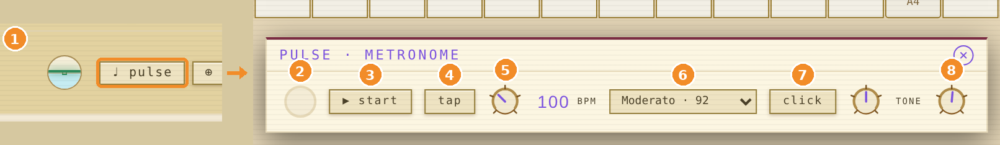
- Das Licht ② schlägt mit dem Puls, und ▶ start ③ schaltet es ein und aus.
- tap ④: Drück diese Taste mehrmals im Tempo, das du im Kopf hast, und das Metronom übernimmt dieses Tempo. Die Anschläge müssen aufeinanderfolgen: Wenn mehr als 2 Sekunden vergehen, beginnt es neu zu zählen.
- BPM ⑤: der Drehknopf und die Zahl; BPM heißt Schläge pro Minute.
- Das Menü ⑥: die klassischen Tempi, von Largo · 50 bis Presto · 184. Drehknopf, Menü und tap gehören zusammen: Änderst du eins, bewegen sich die anderen mit.
- click ⑦ schaltet den Ton ein; er beginnt ausgeschaltet, nur mit dem Licht. Der Knopf daneben ist seine Lautstärke, und tone ⑧ der Ton des Klicks, tiefer oder höher.
Mit angeheftetem ⊗ läuft das Metronom weiter, auch wenn du etwas anderes machst; nicht angeheftet stoppt es beim Schließen, damit nichts aus Versehen weiterklingt. Und es schlägt mit dem Stück: Wenn ein .mmf aus der Truhe oder das Score spielt —auch in einer A–B-Schleife—, folgt das Licht dem Takt und die Zahl zeigt das Tempo dieser Stelle. Das Stück bestimmt: Sobald sein Puls einsetzt, hält das freie Metronom von selbst an.
So siehst du, dass es geklappt hat: Das Licht schlägt im gewählten Tempo, und mit eingeschaltetem click hörst du es. Das PULSE des Scores ist ein anderes: nur Licht, mit dem Tempo der Partitur (siehe das Pulse des Scores).
Die Note und der Horizont · was gerade klingt
Unter dem Instrument sagt dir das Keyboard, welche Note du gerade gespielt hast.

- Die Note ①: ihr Name und ihre Oktave, wie F♯ 3.
- Die Frequenz ②: wie viele Schwingungen pro Sekunde (Hz) sie hat, genau, und in welchem System du bist.
- Der Horizont ③, wie der eines Flugzeugs: Mit der Linie in der Mitte steht die Note an ihrem pythagoreischen Platz; sie steigt, wenn die Note nach oben zieht (der Leitton), und sinkt, wenn sie nach unten zieht.
So siehst du, dass es geklappt hat: Wenn du in Tonal den Leitton spielst —Fis in G-Dur—, steigt die Linie des Horizonts.
Instrument — wie die Tasten des Keyboards klingen
Das Keyboard lässt die ganze Suite klingen: Auch das Score klingt über das Keyboard. Instrument wählt, wie die Tasten klingen, wenn du sie spielst, mit der Maus oder mit der Computertastatur: Klavier, Geige, Flöte…
Zum Öffnen: Drück das Feld Instrument ① in der zweiten Zeile der Leiste. Die Liste aller Instrumente geht auf.

- filter ②: Tipp ein paar Buchstaben („vio“, „flu“), und es bleiben nur die Instrumente, die sie im Namen haben.
- Die Familien ③: Jede Spalte fasst ähnliche Instrumente zusammen: Holzbläser, Blechbläser, Schlagwerk, Streicher, Stimmen…
- Klick auf eins ④, und es ist gewählt: Die Liste schließt sich, und das Feld zeigt seinen Namen. Das Instrument, das gerade klingt, ist links mit einem Strich markiert.
Was du hier wählst, ändert die Partitur nicht. Wenn das Score spielt, kommt jede Note mit dem Instrument ihres Kanals beim Keyboard an, und das hörst du (siehe Das Instrument eines Kanals). Zum Beispiel: Du stellst hier Violin ein und drückst ▶ bei einem Klavierstück. Du hörst das Klavier, und wenn du mit den Tasten dazu spielst, klingt das wie eine Geige. Deine Wahl wird auch an das Register weitergegeben, das dasselbe Instrument lädt.
So siehst du, dass es geklappt hat: Das Feld zeigt den Namen, den du gewählt hast, und wenn du eine Taste spielst, hörst du dieses Instrument.
A= · der Stimmton der ganzen Suite
Der Kammerton ist das A, auf das alles gestimmt wird. Heute sind es fast immer 440 Hz, aber in anderen Zeiten und Orchestern lag er tiefer oder höher.
Zum Öffnen: Drück A= 440 ①, oben rechts. Tuning Reference geht auf.

- Die sechs Kammertöne ②, mit einem Klick: 415 barock, 430 klassisch, 432 natürlich, 440 modern, 442 brillant und 466 Renaissance.
- fine ③: für einen genauen Wert, von 380 bis 480 Hz, in halben Hertz.
Wenn du das A änderst, wird die Musik nicht transponiert: Das ganze Stück klingt etwas tiefer oder höher, und die Intervalle bleiben gleich. Es ist dasselbe A= wie im Score: Du kannst ein Stück im Score spielen lassen und hier, während du zuhörst, den Kammerton deines Instruments oder deines Orchesters suchen. Wenn du danach aus dem Score speicherst, merkt sich die .mmf ihn. Der Pythagorean Tuner hat seinen eigenen Regler (Reference pitch A4): Stimmst du dein Instrument damit auf 442, stell hier auch 442 ein. Mehr in den häufigen Fragen.
So siehst du, dass es geklappt hat: Die Taste zeigt das neue A (zum Beispiel A= 415), und die nächste Note, die du spielst, klingt schon damit.
Oktaven und Panik
- OCTAVE SHIFT, unten auf dem Bildschirm (◀ ▶, oder die Pfeile ← → der Computertastatur), verschiebt die Tasten um eine Oktave nach unten oder oben, ohne dass du die Hand bewegst.
- Escape schaltet den ganzen Klang auf einmal ab.
- In Tonal stimmen ↑ und ↓ die Note, die du hältst, live höher oder tiefer.
- Die Computertasten zählen nach ihrem Platz, nicht nach ihrem Buchstaben: Auf einer AZERTY- oder QWERTZ-Tastatur klingt die Taste, die an derselben Stelle liegt wie auf QWERTY.
So siehst du, dass es geklappt hat: Wenn du ▶ drückst, ändert sich die Zahl von OCTAVE SHIFT und dieselbe Taste klingt eine Oktave höher.
Zwei Cembali in der Bank: was sich ändert, wenn du sie spielst
Die Instrumentenauswahl (Harp & Keyboards) hat zwei neue Cembali: Harpsichord (Tonal) und Harpsichord (Well-tempered). Dasselbe Instrument — nach Gehör an Bachs Sinfonien 9 und 11 gestimmt — mit einem Unterschied: Das Tonal klingt in der Stimmung des Hauses (pythagoreisch nach Schreibweise), das Well-tempered stimmt jede Note auf Werckmeister III mit festem A = 440 um; vergleiche nach Gehör, Quinten und Terzen ändern ihre Farbe. Im Vergleich zum Klavier: fast keine Dynamik pro Taste (pp und ff bewegen den Pegel kaum; was mit der Kraft atmet, ist das „Tac“ der Mechanik), die Noten lösen sich kurz vor der nächsten — barockes détaché —, außer unter einem Bogen, einem Haltebogen oder einer ausdrücklichen Länge, und innerhalb eines Bogens wird die letzte Note von selbst verlassen, kürzer und leichter. Es klingt bei gleichem VOL leiser als das Klavier: Das ist sein echter Pegel; VOL anzuheben heißt, das Ohr näher heranzuführen. Ausstehend: Register (8'+8', 4', Laute) und Resonanz der mitschwingenden Saiten.
Das Cembalo, abgeschlossen: Glanz in der Höhe und ein Bass, der nicht drängt
Zwei Dinge haben sich geändert, und damit ist das Instrument abgeschlossen. Das erste ist der Glanz im Diskant: Beim Anschlag drängt der Bass 77 Teiltöne in das Band von 3 bis 8 kHz — daher die Rauheit, „eine Besteckschublade, die auf einen Tisch fällt“ —, während C5 zehn davon setzt, weit auseinander: Dasselbe wird dort oben als Glanz gehört. Beide Cembali fügen jetzt beim Anschlag einen Glanzimpuls mit festen Frequenzen hinzu (3,5 · 5,2 · 7 kHz), im Bass kaum angedeutet und im Diskant voll. Das zweite ist die Balance: Das Instrument kam flach heraus — derselbe Pegel bei C2, C3, C4 und C5, was kein echtes Instrument tut —. Der Bass sinkt um 3,9 dB bei der tiefsten Note und um 1,5 dB bei C3; der Diskant bleibt unberührt. Er verschwindet nicht: Er macht sich über die Dauer bemerkbar, 22 Sekunden Ausklang gegen 3,5 oben. Und das Geräusch der Mechanik ist nicht mit ihm gesunken — das Klopfen der Taste und das „Tac“ sind, wo sie waren.
Harfe, Gitarre und Pizzicato klingen jetzt gezupft
Alle drei waren flache Presets: dieselbe Farbe über den ganzen Umfang. Jetzt sind sie wie Klavier und Cembalo pro Register modelliert, mit je vier Ankerpunkten. Die Harfe: Die tiefe Saite klingt 17 Sekunden, die höchste eine halbe Sekunde, der Korpus klingt auf seinen eigenen Frequenzen, und am Anfang gibt es einen Schlag des Resonanzbodens und ein kleines Tonhöhengleiten; sie hat keinen Dämpfer, also klingt die Note, bis sie von selbst erstirbt (l.v.) — étouffé ist eine Technik und ist noch nicht da. Die Gitarre: Umsponnene und blanke Saiten klingen verschieden, und du hörst den Übergang, wenn du zur 3. Saite wechselst; der Ausklang geht von 9,5 Sekunden unten bis 1,1 oben, und auch sie lässt die Saite klingen. Pizzicato, solo und in der Gruppe: Der hohe Steg leert die Saite schnell — oben stirbt die Note in 50 bis 100 Millisekunden — und der Spieler dämpft sie mit der Hand; die Gruppe klingt weicher und etwas weniger zusammen, weil nicht alle im selben Augenblick zupfen. Und die Dynamik ändert ihr Gesetz: Bei einer gezupften Saite öffnet sich die Farbe mit der Kraft kaum — der Finger und der Zupfpunkt bestimmen sie —; was von pp bis ff wächst, ist der Impuls und das Kontaktgeräusch. Spielst du kräftig, leuchtet die Helligkeit nicht auf wie mit dem Bogen: Der Anschlag wird größer.
Die Tonart des Keyboards folgt dem Stück
Wenn ein Stück aus dem Score oder aus der Truhe spielt, wechselt das Keyboard von selbst die Tonart, um mitzuspielen, und die Beschriftung oben zeigt, welche es ist. Hat das Stück mehrere Teile in verschiedenen Tonarten, wechselt es beim Übergang von einem zum nächsten.
Ein Detail: Die Partitur gibt nur die Vorzeichen an, und dieselben Vorzeichen gehören zu zwei Tonarten (B-Dur und g-Moll haben dieselben Bs). Sagt das Stück nicht, welche es ist, nimmt das Keyboard die Dur-Tonart. Die Stücke der Suite, die ihre Karte mit der Tonart jedes Teils mitbringen, zeigen die genaue Tonart, wie «f-Moll».
So siehst du, dass es geklappt hat: Während das Stück spielt, ändert sich die Beschriftung der Tonart, wenn der Teil wechselt.
⬤ wav — was du hörst, als Audio speichern
⬤ wav speichert alles, was in der Suite klingt, in einer Audiodatei (.wav): was du auf dem Keyboard spielst, eine Aufnahme aus der Truhe oder ein Stück aus dem Score. Die Datei lässt sich auf jedem Computer oder Telefon öffnen, und du kannst sie verschicken oder als Erinnerung an eine Stunde aufheben.
Zum Aufnehmen: Spiel zuerst eine Note, denn das Audio muss laufen (sonst bittet dich das Keyboard darum). Die Taste ist neben ♩ pulse, ⊕ FX und ☰ recs.

- Drück ⬤ wav ①. Ab diesem Moment nimmt es alles auf, was klingt.
- Spiel, oder lass eine Aufnahme oder das Stück laufen. Die Taste ② wird rot und zählt die Sekunden.
- Drück die Taste noch einmal zum Beenden. Die Datei wird von selbst in den Download-Ordner deines Browsers (Downloads) geladen, mit einem Namen wie mm-capture-153012.wav: die Uhrzeit, zu der du aufgehört hast.
Es nimmt auf, was du hörst, so wie du es hörst. Wenn du während der Aufnahme etwas in der Console bewegst —den MASTER, die Fader, das Pan, den Hall—, landet das in der Datei; steht der MASTER auf 20 %, kommt die Datei mit 20 % heraus. Stell die Lautstärke vor der Aufnahme so ein, wie es klingen soll.
Im Score geht dasselbe mit File → SAVE AS WAV: Es spielt das Stück oder den mit SELECT markierten Abschnitt und lädt die Datei mit dem Namen des Stücks herunter.
Für Neugierige: Das ist keine nachträglich berechnete Mischung, sondern das, was in diesem Moment zu den Lautsprechern geht, in Stereo und mit 24 Bit. Deshalb hält es auch ein Knacken oder ein Kratzen fest, wenn es eins gab.
So siehst du, dass es geklappt hat: Während der Aufnahme ist die Taste rot und die Sekunden laufen; am Ende erscheint die .wav-Datei in Downloads, und wenn du sie öffnest, hörst du, was geklungen hat.
Das Vibrato setzt ein, atmet und folgt der Gruppe
Bei gestrichenen Saiten und bei allem, was aushält, beginnt das Vibrato nicht mehr voll mit der Note: Es setzt nach dem Anschlag ein — der Bogen greift zuerst die Saite und bewegt sich erst dann — und bei einer kurzen Note setzt es gar nicht ein. Seine Geschwindigkeit folgt der Geste in einem kleinen Bereich (±12% der Rate des Presets), weil ein Spieler die Breite viel stärker verändert als die Geschwindigkeit. Und seine Breite folgt der Hierarchie der gebalkten Gruppe: mehr auf den ersten Noten als auf den folgenden, so wie es der Druck bereits tat.
Die Harfe: die Saite, die Fingerkuppe und der Resonanzkörper
Fünf hörbare Verfeinerungen. Das Spannungsgleiten des Anschlags — jene Zehntelsekunde, in der sich die gezupfte Saite auf ihre Tonhöhe einpendelt — hängt jetzt vom Material ab: Der umsponnene Bass gibt kaum nach, Darm gibt seinen Teil nach, und das Nylon des Diskants gibt doppelt so viel nach. Das Kratzen des Fingers, wenn er die Saite abstoppt, dauert und wiegt je nach Register. Die Grenze Darm–Nylon lag eine Oktave zu tief, so dass E4, G4 und A4 — die aus Darm sind — Nylonwerte bekamen: behoben. Bei f und ff öffnet sich der Impuls im Diskant mehr statt weniger: Die niedrige Decke des Diskants gehört zum Ton, nicht zum Transienten, und eine Harfenistin, die drückt, muss stärker klingen — das ist Mahlers Harfe. Und dort oben, wo die Saite in weniger als einer halben Sekunde erstirbt, klingt die Resonanz des Korpus nach ihr weiter: Der Klang ist zwei Dinge, das Zupfen und das, was danach summt.
⊕ FX · Hall, Echo, Porta und Rotary für das, was du spielst
Zum Öffnen: Drück ⊕ FX ①, neben ♩ pulse. Oben steht das Instrument des Kanals, auf dem du spielst: Die Effekte gehören zu diesem Kanal.

- Reverb ②: der Nachhall eines großen Saals.
- Echo wet ③: wie viel Echo du hörst; Echo fb ④: wie oft es sich wiederholt; Echo time ⑤: wie lange jede Wiederholung dauert, in Millisekunden.
- Porta ⑥: Die Note gleitet zur nächsten, wie eine Geige oder eine Stimme.
- Rotary ⑦: der drehende Lautsprecher der Jazzorgel. Auf 0 ist er aus; wenn du ihn drehst, geht er von langsam zu schnell. Doppelklick: Off.
Diese Effekte verändern nur das, was du live spielst. Damit die Partitur mit Hall oder Echo klingt, schreibt man sie im Score, in seinem eigenen Sound FX (siehe Sound FX). Und sie sind nicht dasselbe wie REV und ECHO in der Leiste, die für alles gelten, was klingt. Das Popup bleibt offen (⊗), bis du es schließt, und du ziehst es an seiner Kopfzeile.
So siehst du, dass es geklappt hat: Wenn du mit höherem Reverb oder Echo wet spielst, hörst du den Saal oder das Echo; die Partitur ändert sich beim Abspielen nicht.
Die Partitur.
Du schreibst Musik nach Kanälen mit dem Mini-Keyboard im TODAL-Modus: Du spielst nach Tonleiterstufen. Selbst erzeugt er keinen Klang — den liefert das Keyboard.
Wie Auftakte jetzt geschrieben werden
Der Auftakt ist kein eigenes Feld mehr: Er ist Takt 0. Du schreibst in ihn wie in jeden anderen Takt — mehrere Notenwerte, Haltebögen, Kopieren und Einfügen darin — und jede Note klingt an ihrem Platz (vorher klang der ganze Auftakt zusammen bei Sekunde 0). Das .mmf-Format ist unverändert.
Delete & close gap ⇤
Das Popup „Select · Actions“ hat eine neue Zeile: „Delete & close gap ⇤“. Sie löscht die Auswahl und rückt das Folgende nach, um die Lücke zu schließen — was über einem Taktstrich hängen bleibt, wird automatisch geteilt und übergebunden. Ein einziges Undo.
Die Musik neu takten
Das TIME-Popup hat neben Apply to All Channels einen neuen Button: „Re-bar the music“. Apply ändert nur die geschriebene Taktangabe; Re-bar verteilt das ganze Stück neu auf die neuen Takte (und schickt bei eingeschaltetem UPBEAT die richtige Anzahl Viertel in den Auftakt). Bei einer Taktart pro Abschnitt verweigert es und warnt.
Der Anker ▲/▼ in den Editoren
Der Anker ▲/▼, der ein Popup über oder unter dem Klick festlegt, wird jetzt auch von den Noten- und Zeicheneditoren respektiert (EXPR, DYN, Beam, Stem, Interp, N-tole, Hairpin, Abschnitt/Wiederholung) und vom Panel CHANNELS, das die Werkzeugleiste nicht mehr mit einer langen Liste verdeckt.
Eine neue Datei öffnen: sauberes Laden
Das Öffnen einer neuen .mmf übernimmt nichts mehr aus der vorherigen — keine Noten, keine Zeichen, keinen Undo-Verlauf. (Fehler behoben: Früher holte ein Undo direkt nach dem Öffnen einer Datei die Noten der vorherigen Datei zurück.) Deine Einstellungen und die Zwischenablage bleiben erhalten.
Seitenmodus: auf dem Blatt bearbeiten
Der Button 📄 PAGE in der Werkzeugleiste schaltet zwischen der durchgehenden Leiste und der Blatt-Ansicht um: Die Partitur erscheint als A4-Seiten im selben Fenster, mit demselben Notensatz wie der Druck, aber darauf bearbeitbar. Ein zweiter Wähler bestimmt die Ansicht (Whole page · Fit width · Side by side). Auf dem Blatt kannst du bereits eine Note auswählen und dort den Cursor setzen, ein Zeichen auswählen (Dynamik, Ausdruck, Artikulation, Tempo, Agogik), um es mit den Zoom-Buttons in der Größe zu ändern, oder auf eine leere Stelle klicken, um den Cursor zu setzen (der am Raster einrastet). Ein Rechtsklick öffnet dieselben Kontextmenüs wie auf der Leiste (Note, Haltebogen, Bogen, Text, Zeichen, Kanal), und beim Darüberfahren wird der Zeiger über allem Anklickbaren zur Hand. Während der Wiedergabe leuchten die rote Linie und die klingenden Noten auf dem Blatt auf. Das Blatt hat eigenen Zoom und eigenes Scrollen (Mausrad; Shift+Mausrad seitwärts; Strg+Mausrad Zoom). Es ist umkehrbar und lässt die Leiste unberührt. Auf dem Blatt lassen sich auch Noten und Zeichen ziehen; zum vielen Schreiben ist die Leiste bequemer.
Seitenmodus: Blatteinstellungen in der Werkzeugleiste
Im Seitenmodus (der Button 📄 PAGE / ▦ SCROLL wechselt zwischen Blatt und Leiste) gibt es neben dem Ansichtswähler (Full page · Fit width · Side by side) zwei neue Dropdowns, um das Blatt live anzupassen, ohne 🖨 PRINT VIEW zu öffnen. „Bars/system“ legt fest, wie viele Takte pro System (Auto oder 1 bis 9), und „Staff space“ die Größe der Notenzeile (3 bis 9 mm); das Blatt wird sofort neu gesetzt, während du sie veränderst. Sie bleiben in beide Richtungen synchron mit dem Modal 🖨 PRINT. Standard: Auto · Staff 5 mm.
Tonartwechsel nach Abschnitt
Die Tonartvorzeichnung kann mitten im Stück wechseln: Im Popup KEY erwacht „This Bar“ mit der Zeile From M / To M — wähle die Tonart und den Abschnitt, für den sie gilt; außerhalb des Abschnitts kehrt die vorherige Vorzeichnung zurück, und die Wahl der bereits geltenden Tonart entfernt den Wechsel. Der Notensatz folgt der klassischen Konvention: Warnauflösungszeichen am Ende des ausgehenden Takts, ein automatischer Doppelstrich, die neue Vorzeichnung nach dem Taktstrich und danach die Noten. Der Platz wird automatisch reserviert.
Stimmen, die sich eine Notenzeile teilen (Layers)
Ein Kanal kann auf der Notenzeile eines anderen Kanals dargestellt werden: Im Menü ☰ von CHANNELS wählt das Dropdown Staff den Gastgeber. Der Gast belegt keine eigene Zeile (Klavier = zwei Notenzeilen, jede Stimme stummschaltbar), und seine Hälse zeigen in die Gegenrichtung. Um den Gast zu bearbeiten: Rechtsklick auf den Kanalnamen im Randbereich — er schaltet den aktiven Kanal der Zeile reihum, und das Etikett zeigt, wen du bearbeitest.
Das Oktavierungszeichen (8va / 8vb / 15ma)
Das 8va ist Tinte, nicht Musik: Die Noten bleiben auf ihrer realen Tonhöhe gespeichert (Wiedergabe, Coach und Keyboard bemerken nichts); das Zeichen verschiebt nur, wo sie geschrieben werden. Drei Wege: Auswahl + O (schaltet reihum 8va → 15ma → aus; Shift+O = 8vb/15mb), die Zeile OCTAVE des CLEF-Popups (From M / To M; „—“ löscht den Bereich in allen Kanälen) und die Linie selbst: Beim Darüberfahren leuchtet sie golden mit einem Hand-Cursor auf — mit Rechts-Ziehen platzierst du sie vertikal (bleibt erhalten), Supr löscht sie, und O schaltet sie reihum, ohne sie auszuwählen.
His, Eis oder ein Doppelvorzeichen schreiben
Die Acc-Buttons im Noteneditor ändern das Vorzeichen, aber nicht den Buchstaben: Von einem C aus erreichst du Cis oder Ces, nie His. Und es gibt absichtlich keinen Button, der eine Schreibweise gegen eine andere tauscht: Diese Suite kennt keine Enharmonik — in der pythagoreischen Stimmung liegt His ein Komma über C, es sind zwei verschiedene Klänge. Wenn du ein His willst, schreib die Note H und gib ihr mit Acc ein ♯; ebenso für Eis, Fisis oder Deses. Wenn die Partitur aus einer MIDI-Datei kommt, die keine Schreibweisen trägt, leitet der Player sie beim Konvertieren aus der Tonartvorzeichnung ab (His, Eis und Doppelvorzeichen, wo sie hingehören), und im Player selbst ändert der Button ♯↔♭ des Noteneditors die Schreibweise einer Note oder einer ganzen Passage, bevor sie in den Score geht.
Ein Vorzeichen verschieben (Acc↔)
Der Abstand der Vorzeichen in dichten Passagen wird automatisch berechnet (das Raster reserviert die echte Breite jedes Glyphs). Für verbleibende Kollisionen — ein Auflösungszeichen über einem Kreuz im selben Akkord — hat der Noteneditor die Zeile Acc↔: ◀/▶ verschieben nur das Vorzeichen der ausgewählten Note (2px pro Tippen, gedrückt halten zum Wiederholen), ⟲ setzt zurück. Es gilt pro Note, und der Versatz reist in der Datei mit.
Das deklarative Blatt: Abstand in mm und Seiten
Jede Dimension des Blatts hat einen Eigentümer: Staff mm ist die Größe der Musik (heilig — wird nie automatisch verkleinert), Sys gap der Abstand zwischen den Systemen in Papier-mm (unabhängig von der Notenzeile), Bars/system die Dichte und Pages das Ziel: Gib an, wie viele Seiten das Stück einnehmen soll, und der Seitenumbruch spart von selbst (Abstand → Luft ab Seite 2 → Titelblock, mit Untergrenzen). Ist das Ziel unmöglich, meldet die Fußzeile des Modals das erreichbare Minimum — und wendet es an. Das Blatt respektiert auch dein Layout (der von dir bearbeitete Notenzeilenabstand reist auf die Seite mit), und du kannst die Seitenansicht von überall aus betreten — beim Verlassen wird die Scrollposition wiederhergestellt.
Die Computertastatur
In WRITE/TODAL schreibst du mit der Tastatur: Die Buchstaben spielen nach Tonleiterstufen, der Ziffernblock wählt die Dauer (1 = Vierundsechzigstel … 7 = Ganze, der Punkt = Punktierung), ↑/↓ verschieben die ausgewählte Note eine Oktave nach oben oder unten, ←/→ verschieben die Tastatur, +/− des Ziffernblocks regeln APO (Feinstimmung, ±2), und die Reihe 1–0 baut Akkorde. CapsLock schaltet TODAL ein und aus. Die vollständige Belegung steht im Spickzettel der Tastenkürzel.
Der Coach und das automatische Auffüllen des Takts
Ein Notenwert oder ein Punkt, der nicht passt: Wenn du versuchst, einen Punkt hinzuzufügen — oder einen Notenwert zu schreiben —, der nicht in den Rest des Takts passt, warnt dich der Coach (zweisprachig, bei eingeschaltetem 🎓) und lässt ihn nicht überlaufen. Um den Taktstrich zu überschreiten, schreib eine weitere Note und binde sie über. (Der Punkt an einer Note wird mit Rechtsklick → Dot gesetzt.) Automatisches Auffüllen des Takts: Wenn du eine Note schreibst und dann in den nächsten Takt springst und den vorherigen halb fertig lässt, füllt sich der Rest dieses vorherigen Takts von selbst mit Pause(n).
Die schwebende Leiste: schreiben und bearbeiten
Eine schwebende Leiste trägt die Notenwerte (Dauern, Punkt, Vorschlagsnoten, N-tolen), die du auf die Notenzeile ziehst; beim Ablegen bleiben sie ausgewählt. Sie ist auch ein Bearbeitungspult: Auf die ausgewählte Note wendest du Artikulationen (Staccato, Akzent, Tenuto, Marcato, Fermate…) und Dynamik an, dazu Bögen, Hals und Balken — ohne weitere Panels zu öffnen.
Die schwebende Leiste: Noten verschieben und verkürzen
Eine Note mit der schwebenden Leiste zu greifen und zu verschieben klingt nicht mehr (früher wurde sie vorgespielt); und wenn du die Maus aus dem Bereich bewegst, fällt die Note von selbst ab: Nichts bleibt am Zeiger hängen. Den kleineren Wert übernehmen: Zieh einen Wert kürzerer Dauer (etwa ein Achtel) auf eine vorhandene Note (etwa ein Viertel), und diese Note nimmt den kleineren Wert an; die frei gewordene Lücke füllt sich von selbst mit Pause(n), ohne den Rest des Takts zu verschieben. Es funktioniert auch mit Pausen. Lesbarkeit: Die Buttons der Leiste sehen schärfer aus, und in den dunklen Themes (dark / grey) hebt sich das Popup der Leiste mit einem Lichthof ab.
Bögen klingen, und sie haben eine Richtung
Der Bogen klingt jetzt und trägt eine Richtung: Vorwärts gezogen ist er ein Decrescendo; rückwärts, über den vorherigen Takt, ein Crescendo. Der Verlauf Petrol→Gold zeigt es dir — die volle Farbe (Petrol) markiert den Anker, wo Körper und Helligkeit voll sind, und geht zum leiseren Ende hin in Gold über. Ein langer Bogen blüht aus fast nichts auf.
Gebundene Paare (nun ∩∪∩ · unu ∪∩∪): Im Bogeneditor kannst du ihm einen Zweierpuls geben. Er sieht weiter wie ein gewöhnlicher Bogen aus, klingt aber wie gebundene Paare: die 1. Note des Paars stärker betont und die 2. leichter (nun beginnt stark; unu beginnt weich). Der Unterschied ist vor allem im Anschlag zu hören — die starke Note behält einen Hauch Artikulation, und die schwache kommt gebunden, weich; die schwache ist außerdem um etwa ~20% leiser. Es funktioniert mit jedem Instrument.
Die Kurve sehen, bevor du sie hörst · Peak/Valley · Mirror · der Atem
Sowohl der Bogeneditor als auch der Editor des Notenzeichens zeigen jetzt eine Live-Zeichnung der Kurve der Geste, zwischen zwei Linien: Peak (das Vollste) oben und Valley (das Schwächste) unten. Der Verlauf geht von Petrol (voll) zu Gold (schwach), wie auf der Notenzeile. Hat der Bogen noch kein eigenes Peak/Valley, wird die Kurve gestrichelt mit einem Etikett „auto“ gezeichnet: Sie zeigt dir die Tiefe, die das Programm selbst wählt. Die Form ist eine glatte Kurve (eine messa ist ein gerundeter Buckel, kein Dreieck). Peak und Valley sind relativ zur Dynamik, keine festen Pegel: Ein > aus mf und ein > aus ff sind nicht dasselbe — die Dynamik bestimmt, und die Geste springt nie auf einen absoluten Wert. Der Atem: Die Größe der Schwellung wird an den echten Sekunden der Phrase gemessen und daran, wie viel Luft die Dynamik trägt, so dass ein kurzer, schneller Bogen nicht „pumpt“ und ein mf über einer langen Phrase voll bleibt. Mirror im Bogeneditor sorgt jetzt außerdem für eine Umkehrung der Form (Aufblühen ↔ Abklingen, messa ↔ invers), zusätzlich zur Seite des Bogens und zur Höhe.
Was die Geste des Bogens ist. Dieselbe Idee wie die Geste der Note, aber über die ganze Phrase: Die Kurve läuft von der ersten Note des Bogens bis zur letzten, und jede Note bekommt die Stärke, die auf ihren Platz fällt. Die Formen sind dieselben; sost hält die Phrase gleichmäßig. nun und unu sind keine Kurven: Sie markieren den Anschlag jedes Notenpaars und lassen die Stärke flach. Willst du zusätzlich, dass eine Note des Bogens etwas Eigenes tut, gib ihr ihre Notengeste: Beide addieren sich.
Das Notenzeichen (die Interpretenebene)
Ausdruck pro Note, zusätzlich zur Dynamik. Im Noteneditor wählst du in der Zeile „Intp“ das Zeichen: < Aufblühen, > Abklingen, <> messa di voce, >º< invers (forte → piano → crescendo, ideal für Blechbläser) und º niente. Zieh es, um es anzuheben oder abzusenken. Ein Rechtsklick auf das Zeichen öffnet den Interp Editor: Size und Value — die Dynamik der Geste (Peak laut / Valley leise; standardmäßig f und p). Die Note ruht auf ihrer eigenen Dynamik.
Eine N-tole bearbeiten
Ein Rechtsklick auf die Klammer der N-tole öffnet ihren Editor. Number On/Off zeigt oder verbirgt die kleine Zahl. Angle (◣ ↻ ◢) neigt die Klammer; die Zahl bleibt aufrecht. Size skaliert die Noten nicht mehr: Es verkürzt oder verlängert die Klammer (ihre Länge). Move positioniert sie — der Griff ↕ hebt und senkt sie, der Griff ↔ verschiebt sie seitlich; du kannst die Klammer auch direkt auf der Notenzeile ziehen. Wenn die Noten gebalkt sind, ruht die Klammer auf dem Balken; über Vierteln, Halben oder Pausen auf dem Notenkopf.
Alles auswählen
Im Popup „Select · Actions“ (Rechtsklick auf den Button SELECT) gibt es oben zwei neue Zeilen: „Select all in channel“ wählt den ganzen aktiven Kanal von Anfang bis Ende aus, und „Select all channels“ wählt das ganze Stück aus (alle sichtbaren Kanäle). Ist alles ausgewählt, wendest du Copy, Cut, Transpose oder Clear auf einmal auf alles an.
Musik in eine Tonart transponieren
Ein neuer Button „⇅ Transpose music to key“ sitzt im KEY-Popup, unter der Scope-Zeile. Öffne KEY, wähle die Zieltonart (Pfeile + Major/Minor) und klick darauf: Die ganze Musik wandert zu dieser Tonika. Eine echte Transposition — die Intervalle bleiben erhalten, nicht bloß eine Umschreibung der Vorzeichnung. Sie respektiert den Scope des Popups: All CH (alle Kanäle) oder This CH (der Kanal des Cursors).
Score Info: Autor & Copyright
Die Karte des Stücks (Button Score Info) bekommt zwei Felder: Author und Copyright — das mit „© {year}“ beginnt — neben Title, Subtitle und Composer. Alles reist in der .mmf mit: Wenn du ein Stück importierst, füllt sich die Karte aus dem, was die Datei mitbrachte, so dass der Drucktitel nicht mehr leer erscheint.
Speichern
Der Button SAVE (oder Strg/Cmd+S) schreibt mit einem Klick in dieselbe .mmf zurück; MENU FILES → EXPORT MMF exportiert eine neue Kopie.
Druckkopf (nur Seite)
Das Modal 🖨 PRINT hat eine Zeile „Print header · page only“, um Title / Subtitle / Composer / © nur für das gedruckte Blatt festzulegen. Sie hat Vorrang vor Score Info; lässt du sie leer, verwendet der Druck Score Info. Sie öffnet sich vorausgefüllt, so dass du nur bearbeitest, was sich ändert, und wird mit der .mmf gespeichert. Daneben vergrößert „T size“ den gedruckten Titel und „C size“ den Komponisten.
Zeichengröße (Size −/+)
Rechtsklick auf ein Dynamikzeichen, ein Tempo oder einen Text, und eine Zeile „Size“ erscheint mit − und +, um die Schriftgröße dieses Zeichens zu ändern; bei ausgewähltem Zeichen funktionieren auch die Zoom-Buttons +/−. Jeder Schritt ist klein; gedrückt halten zum Wiederholen.
Tempo: Zahl und Platzierung
Die Metronomangabe (♩=58) wird kleiner gedruckt als das Tempowort (Lent), wie im klassischen Notensatz. Das Tempo lässt sich waagerecht und senkrecht ziehen, um es über dem Takt dort zu platzieren, wo du willst.
Text in der Seitenansicht hinzufügen
Texte — Instrumentennamen oder Anweisungen wie „dolce“ — lassen sich jetzt auch in der Seitenansicht hinzufügen, nicht nur auf der Leiste. Klick dorthin, wo du ihn haben willst (das setzt den Cursor), drück den Button TEXT, tippe und drück Apply; danach kannst du ihn ziehen, um ihn zu platzieren.
Die ausgewählte Note wird nicht gedruckt
Der cyanfarbene Rahmen um die ausgewählte Note erscheint nicht mehr auf dem gedruckten Blatt oder im PDF: Die Auswahl ist nur eine Bearbeitungshilfe auf dem Bildschirm. Das Blatt kommt sauber heraus.
Einstellungen des gedruckten Blatts
Die Fußzeile des Drucks ist jetzt eine einzige Zeile (Autor · ©). Im Modal PRINT wählt „Bars/system“, wie viele Takte pro System (Auto oder 1 bis 9), und „Staff space“ legt die Größe der Notenzeile fest, von 3 bis 9 mm, im Modus Auto.
Die Stimme eines Instruments drucken (aus dem Panel)
Im Panel (geteilte Ansicht) wählst du die Kanäle mit den Chips, und der Button 🖨 PRINT VIEW — früher „📄 PAGE“ — öffnet die Druckansicht (dasselbe Modal wie FILE → Print/PDF) und zeigt nur diese Kanäle: So druckst du die Stimme eines Instruments. Im Modal wählt der Schalter „Show“ zwischen Full score (alle sichtbaren Kanäle) und Selected CH (nur die, die du im Panel gewählt hast). Das Feld „Part name“ — mit seinem Größenfeld und einem Kontrollkästchen „Part“ — druckt ein Etikett oben links auf Seite 1; standardmäßig steht dort „Score“ für die Partitur oder der Instrumentenname für eine Stimme, und es ist bearbeitbar. Strg+Mausrad über der Druckansicht zoomt nur die Blätter, nicht die Werkzeugleiste; beim Öffnen oder bei einem Wechsel der Ansicht (View) wird auf 100% zurückgesetzt.
Das Panel: nach Bereich auswählen und verschieben
Im Panel zeichnet Alt + Ziehen einen Auswahlrahmen und wählt Noten nach Bereich aus → goldene Rahmen; diese Auswahl klingt mit Play oder Shift+Space, genau wie auf der Hauptfläche. Und Ziehen mit der linken Maustaste (Hand: Cursor grab / grabbing) verschiebt das Panel in beiden Achsen — eine Alternative zu Shift+Mausrad.
Artikulationen, die man lesen kann
Punkte, Striche und Akzente wechseln auf eine Größe von 56 (vorher 30): Die Notenschrift entwirft ihre Zeichen für vier Linienabstände, und wir lagen bei 62 % davon — auf dem Blatt schrumpfte der Staccatopunkt auf anderthalb Pixel. Bereits gespeicherte Zeichen behalten ihre Größe; 56 gilt für neue. Und sechs Zeichen, die nichts zeichneten, weil sie in der eingebetteten Schrift fehlten — der Betonungsakzent (stress), das Ped und das ✻, die beiden Bogenstrichzeichen und die Triller-Wellenlinie (tr) — erscheinen jetzt.
Die Stimmen einer Hand trennen
Für zwei Stimmen in einer Hand: Mach den nächsten Kanal mit seinem Schlüssel sichtbar, lass ihn auf seiner eigenen Zeile und verschiebe Noten mit Strg + Ziehen — die Note oder die ganze Mehrfachauswahl landet im Kanal der Notenzeile, auf der du sie ablegst, mit ihrem Notenwert, ihren Balken, Vorschlagsnoten und Artikulationen —. Dann Rechtsklick auf den Kanalnamen: Put CHn on CHm führt sie auf einer Notenzeile zusammen, und die Hälse ordnen sich von selbst (obere ↑, untere ↓). Dasselbe Menü hat Unfold the layers, um eine Weile zu bearbeiten: Es ist nur eine Ansicht, die Datei behält die Zusammenführung.
Die Tonart über einer Auswahl
Das KEY-Popup bekommt den Scope Selection: Bei einer geschlossenen Auswahl übernimmt der Tonartwechsel deren Taktbereich, und beim Verlassen kehrt die vorherige Tonart von selbst zurück, mit einem Doppelstrich an beiden Grenzen. Beginnt die Auswahl in Takt 1, wird die Tonart des Werks verschoben — so verschwindet das Warnauflösungszeichen am Anfang, das du nicht löschen konntest, weil es kein Objekt ist, sondern Tinte des Wechsels.
Zeichen landen, wo sie hingehören
Die sieben Zeichen, die sich an den Notenkopf schmiegen — Staccato, Staccatissimo, Tenuto, Portato, Akzent, Marcato und Betonungsakzent (stress) — landen jetzt in der Mitte des benachbarten Zwischenraums, oben wie unten gleich: Bei Hals nach oben sitzt der Punkt nicht mehr auf dem Kopf. Ein Zeichen driftet nicht mehr seitlich, wenn du es vergrößerst — sein Platz ist relativ zum Kopf fest —, und mehrere Zeichen auf einer Note stapeln sich im Abstand eines Linienabstands. Jeder Typ bekommt seine eigene Größe: Triller, Doppelschlag und Mordent 36 · Ped. und ✻ 30 · Tenuto 48 · Zäsur 42 · Arpeggio 18 · pizz. und arco 24 · der Rest 56 (bereits gespeicherte Zeichen behalten ihre).
Tenuto, Tremolo und Bogenstrichzeichen
Drei Zeichen stehen nicht mehr im Weg. Das Tenuto ist am Hals zentriert, nur zur Gegenseite derjenigen versetzt, von der der Hals ausgeht. Das Tremolo wird auf dem Hals gezeichnet, auf halber Höhe, statt auf dem Kopf zu landen. Und die Bogenstrichzeichen (⊓ Abstrich, V Aufstrich) stehen immer über der Notenzeile, einen halben Zwischenraum über der obersten Linie; steigt die Note höher, rücken sie nach oben, um ihr auszuweichen — Kopf oder Halsspitze —.
Das Arpeggio ist jetzt ein Zeichen
Wo früher das kursive Wort arp. stand, steht jetzt das echte Zeichen: die senkrechte Wellenlinienkette links vom Akkord, von der tiefsten Note bis zur höchsten, mit dem Akkord wachsend. Für ein Klavier- oder Harfenarpeggio über beide Hände: Rechtsklick auf das Zeichen → Extend to CHn (staff above), und Cut at this staff, um es zurückzunehmen. Die Option erscheint nur, wenn auf demselben Schlag darüber eine Note steht.
Bögen und Haltebögen lösen sich nicht mehr
Es gab zwei Wege, einen Bogen unbemerkt zu zerbrechen: eine Note im Noteneditor löschen und Noten mit Strg + Ziehen in einen anderen Kanal verschieben. Beides ist behoben, und das Löschen im Noteneditor geht jetzt in das Undo ein. Beim Öffnen einer Datei löst sich ein Haltebogen, dessen Ziel nicht mehr existiert — oder eine Pause ist oder die Tonhöhe geändert hat —, von selbst, mit einer Warnung in der Konsole: Keine Kurven bleiben mehr an nichts hängen.
Der Bogen weicht allem darunter aus
Der Ausdrucksbogen hebt sich, bis er alles freigibt, was darunter durchgeht — Köpfe, Vorzeichen und Halsspitzen, also den Balken —, mit fünf Pixeln Luft und ohne je mehr als vier Zwischenräume zu steigen. Der Strich ist keine gleichmäßige Linie mehr: Er ist eine gefüllte Kurve, dünn an den Enden und dick in der Mitte. Und der Klick landet dort, wo du ihn siehst: Zeichnung und sensitive Zone entstehen aus derselben Berechnung.
Doppelklick = der ganze Akkord
Neues Tastenkürzel: Doppelklick auf einen Notenkopf wählt den ganzen Akkord aus — jede Note dieses Kanals auf diesem Schlag — in dieselbe Mehrfachauswahl, die Alt + Klick aufbaut. Alles, was du bereits tust, gilt: den Akkord auf einmal artikulieren, ihn mit Shift + Space hören, transponieren, löschen. Vorher musstest du Note für Note Alt + Klick machen.
Zwei Stimmen auf einer Notenzeile: Sekunden und Hälse
Wenn zwei Stimmen auf derselben Notenzeile eine Sekunde auseinanderliegen — oder auf einem Unisono —, können die Köpfe nicht denselben Platz teilen: Einer von ihnen weicht aus. Welcher ausweicht und zu welcher Seite, entscheidet nicht die Tonhöhe: Es entscheiden die Hälse. Der Faden, den du dir merken solltest: Die Halslinie fällt immer zwischen die beiden Köpfe; was sich ändert, ist, wie viele Linien es gibt.
Die Seite. Tragen die beiden Stimmen ihre Hälse zu entgegengesetzten Seiten, richten sich die Hälse aus, und der Kopf der Stimme mit Hals nach unten geht nach rechts. Tragen beide den Hals zur selben Seite, gibt es keine zwei Hälse auszurichten: Die Stimmen lesen sich als ein Akkord, und es gilt die Akkordregel — mit Hals nach unten geht die tiefere Note nach links; mit Hals nach oben die höhere nach rechts —. Ein Akkord wird nie geteilt: Ist die Stimme, die ausweichen müsste, ein Akkord und die andere eine Einzelnote, weicht die Einzelnote aus, und die Seite bestimmen weiterhin die Hälse.
Was sich bewegt. Bei einer einzigen Halslinie weicht nur der Kopf aus, und der Hals bleibt, wo er war: Du siehst einen Hals zwischen den beiden Köpfen. Bei zwei Linien wandert die ganze Note, Hals und Balken inbegriffen. Das Unisono folgt derselben Regel: Die beiden Köpfe stehen am Ende nebeneinander statt übereinander. Und der Takt reserviert die Breite dessen, was sich bewegt hat, so dass die nächste Note nicht gedrängt wird. Wenn du die Layers zum Bearbeiten auffächerst, ordnen sich die Hälse nicht mehr um: Der Gastgeber bleibt ↑ und der Gast ↓, so wie sie nach dem erneuten Zusammenführen aussehen werden.
Der Schubs nimmt den Hals mit · Undo reicht weiter
Wenn du die Tinte einer Note mit Shift + Ziehen verschoben hast, blieb der Hals stehen, wo er war; jetzt folgt er dem Kopf, Balken inbegriffen. Und Undo erreicht sieben Dinge, die ihm früher entgingen: die Tonartvorzeichnung (die des Werks und die jedes Abschnitts), die Alteration, die Oktavierungszeichen, die Schlüssel pro Abschnitt, den Kanalnamen, die Karte des Werks und die Zusammenführung der Layers. Das Setzen eines Oktavierungszeichens und das Ändern der Tonart erzeugen jetzt ebenfalls einen Snapshot — die Tonart nur, wenn die Änderung von dir kommt, nicht wenn sie synchronisiert aus einer anderen App eintrifft —.
Der Auftakt klingt wie ein Auftakt
Die Auftaktnote kam früher mit dem Gewicht einer Eins herein: Sie landete am richtigen Platz, aber mit dem falschen Charakter. Jetzt setzt sie ein, wie sie gespielt wird — etwas kürzer, mit sanfterem Anschlag und ohne Wucht —, und das Metronom der Suite markiert sie nicht mehr betont: Der Akzent fällt auf Schlag 1 von Takt 1, wo er hingehört. Außerdem läuft sie in ihrem eigenen Tempo, genommen aus dem Takt, in den sie hineinführt, statt aus der Zahl, die der Dateikopf trägt, so dass ein Import mit unpassendem Kopf sie nicht mehr eilen lässt. Die Lautheit bleibt unberührt: Ein Auftakt hat weniger Anschlag, nicht weniger Präsenz.
SUBDIV kommt aus der Musik · der Hinweis beim Öffnen
SUBDIV ist der Schritt des Cursors — wo ein Klick landet, wie weit sich eine Auswahl bewegt, wie weit sich eine Gabel dehnt —: Es bewegt keine geschriebene Note. Früher kam es aus der Taktart, die nichts über die Musik weiß: In 2/4 ergab es ein Achtel, selbst wenn das Stück in Zweiunddreißigsteln stand, und der Cursor konnte nicht dort anhalten, wo die Noten waren. Jetzt wird es aus den Noten der Datei abgeleitet, und du kannst es weiterhin von Hand ändern. Und beim Laden sagt dir der Score, was er außerhalb des Rasters gefunden hat — Noten, die weder auf die Zweiunddreißigstel- noch auf die Triolenteilung fallen, und Zeichen, unter denen keine Note mehr steht —. Der Hinweis meldet; er korrigiert nicht, und er sagt es: Nichts wurde verschoben.
Noten in eine Triole oder Quintole verwandeln · die Zeile Ratio
Das TUPLET-Popup ist nicht mehr nur zum Scharfschalten vor dem Schreiben da: APPLY TO SELECTION verwandelt bereits geschriebene Noten in eine Gruppe. Das Verhältnis folgt der Anzahl — 5 Noten ergeben 5:4, 7 ergeben 7:4, 3 ergeben 3:2, 9 ergeben 9:8 —. Ohne Auswahl gruppiert es den Schlag unter dem Cursor, und wenn dieser Schlag bereits eine Gruppe enthielt, kommt sie ganz hinein und wird aufgenommen: Fünf Noten, geschrieben als zwei lose plus eine Triole, werden zu einer einzigen Quintole. Ein Rechtsklick auf die Klammer öffnet den Editor der Gruppe, der jetzt eine Zeile Ratio hat (tatsächlich : normal), um das Verhältnis einer bestehenden Gruppe zu ändern — der Weg, eine N-tole zu korrigieren, die der Import falsch übernommen hat —. Zeichen reisen mit ihren Noten, und Undo stellt wieder her, was da war. Innerhalb einer Gruppe werden Noten gleichen Werts in gleichen Abständen gezeichnet, selbst wenn eine Note der anderen Stimme in die Mitte fällt, und der Takt ändert seine Breite nicht.
Die Artikulation über eine ganze Auswahl · das Badge 1 note / selection
Bei mehreren ausgewählten Noten — Alt + Ziehen, Doppelklick auf einen Akkord oder die SELECT-Region — setzt die Artikulationskarte einen Zustand, keinen Schalter pro Note: Eingeschaltet setzt sie das Zeichen auf ALLE (ohne die zu verdoppeln, die es schon hatten); ausgeschaltet entfernt sie es von ALLEN. Früher, mit drei Noten mit Staccato und zwei ohne, ließ ein Klick drei ohne und zwei mit zurück: Die Auswahl wurde umgekehrt statt geändert. Ohne Auswahl, auf der Note unter dem Cursor, bleibt die Karte ein Umschalter. Und die Leiste oben im Popup zählt jetzt, was das Zeichen wirklich erhalten wird, in der Farbe des Kanals eingefärbt; das Badge ist auch ein Schalter: Ein Klick erzwingt „1 note“, ein weiterer kehrt zu „selection“ zurück.
Mehrere Noten auf einmal binden · der Bogen des Haltebogens
Tie ← prev und Tie → next wirken jetzt auf die Auswahl: Bei mit Alt + Ziehen markierten Noten bindet der Button ALLE, die sich binden lassen — die vier Noten eines Akkords werden mit einer einzigen Geste an den nächsten Akkord gebunden —. Über einer Auswahl ist die Karte ein Zustand, kein Schalter pro Note: Eingeschaltet bindet sie alles, was sich binden lässt; ausgeschaltet löst sie alle; ohne Auswahl, auf der Note unter dem Cursor, bleibt sie ein Umschalter. Eine Note bindet nur an eine andere von exakt derselben Tonhöhe, die nächstgelegene in ihrem Kanal, und die, die niemanden zum Binden finden, sagen es jetzt: Der Hinweis zählt, wie viele ohne Ziel geblieben sind. Früher schlug das stillschweigend fehl. Und der Haltebogen geht in das Undo ein: ein Strg + Z pro Geste.
Auch der Bogen hat Akkorde gelernt: Innerhalb eines Akkords öffnen sich die Haltebögen nach außen — der höchste nach oben, der tiefste nach unten, die mittleren zur nächstgelegenen Seite —. Früher kam die Richtung allein aus der Tonhöhe im Verhältnis zur Mitte der Notenzeile, und zwei Noten desselben Akkords oberhalb der Mitte gingen beide zur selben Seite. Ohne Akkord, wenn die Notenzeile zwei Stimmen trägt, folgt der Bogen der Stimme, genau wie die Hälse. ↕ Flip im Tie-Editor setzt sich über all das hinweg: Was du von Hand wählst, gewinnt, und es wird in der Datei gespeichert.
Popups anordnen: Free · Cascade · Grouped · Stack
Das TOOLS-Popup bekommt eine neue Zeile, View popups, mit vier sich gegenseitig ausschließenden Zuständen: ◇ Free lässt jedes Popup, wo du es gelassen hast; ⧉ Cascade staffelt sie wie eine Treppe, jeweils 28 px, und eröffnet eine neue Spalte, wenn die Treppe den Boden erreicht; ▦ Grouped stellt sie nebeneinander, in Reihen; ▣ Stack schickt sie alle an dieselbe Stelle — du siehst das vorderste, und die übrigen bleiben dahinter —. Es ist ein Modus, kein Button: Solange er eingeschaltet ist, wird jedes Popup, das du aus der Werkzeugleiste öffnest, bereits in der Anordnung geboren, ohne dass neu angeordnet werden muss. Reset positions kehrt zu Free zurück und gibt jedem Popup die Größe zurück, die es vor dem Eintritt hatte.
Der Stapel: alle Karten an einem Ort (Stack)
In Stack werden die Popups zu einem Kartenstapel, und TOOLS bleibt als Index an der Seite: Der ↑-Pfeil in jeder Zeile seiner Liste holt das Popup, das du brauchst, nach vorn. Die Karten sind verklebt — du ziehst eine, und alle bewegen sich; TOOLS reist nicht mit ihnen, es bewegt sich für sich —. Der Stapel merkt sich, wo du ihn gelassen hast: Verlass den Modus und kehre zurück, und er erscheint an derselben Stelle. Die Nadel sagt dir, wer drin ist: Gold ist eine gewöhnliche Nadel, Rosa ist eine Nadel, die außerdem am Stapel hängt. Größen: Jedes Popup nimmt seine Mindestbreite an, und die höchsten — Articulation und Channels — pendeln sich bei 450 px Höhe ein und scrollen innen; die übrigen behalten ihre natürliche Höhe.
Oben oder unten: ⬇ Top und ⬆ Bottom
⬇ Top und ⬆ Bottom wählen, ob die Popups oben oder unten ruhen, und die Wahl bewegt jetzt auch die bereits offenen, statt nur für die nächsten zu gelten. Sie wird auch zwischen Sitzungen gespeichert: Schließ den Score mit ⬆ Bottom, und beim nächsten Mal startet er so. Mit ⬆ Bottom ruhen die Popups auf dem Mini-Keyboard, wenn es offen ist, und wenn nicht, auf der Transportleiste (vorher verhielt sich ⬆ Bottom bei geschlossenem Mini-Keyboard wie ⬇ Top). Ein ehrlicher Vorbehalt: Ein Popup, das höher als der verfügbare Platz ist, kann nicht unten ruhen — es passt nicht — und bleibt oben.
Drei weitere Popups, deren Größe du ändern kannst
Duration, Time Signature und Key Signature gesellen sich zu den Popups, die du an der unteren rechten Ecke greifst, um sie zu vergrößern oder zu verkleinern, und die scrollen, wenn der Inhalt nicht hineinpasst. Sie waren die letzten drei in der Werkzeugleiste mit einem festen Rahmen.
cresc. oder dim. mit Worten schreiben
Du kannst ein Crescendo mit dem Wort statt mit der Gabel schreiben: cresc., dim., crescendo, diminuendo und auch den Begriff in jeder Sprache, die du verwendest (calando, morendo, en diminuant, abnehmend…). Das Wort verhält sich genau wie die Gabel: Es hat einen Anfang und ein Ende, beide Enden lassen sich ziehen, und es klingt gleich. Auf der Seite siehst du das Wort kursiv und eine gepunktete Linie bis dorthin, wo der Bereich endet, so wie es gedruckt wird. Der Score ermittelt selbst, ob das Wort steigt oder fällt, indem er seine Wurzel betrachtet; wenn du die Werte From / To von Hand setzt, gewinnen deine.
Das Menü eines Dynamikzeichens ist jetzt ein einziges
Ein Rechtsklick auf ein Dynamikzeichen öffnete früher zwei kleine Fenster. Jetzt öffnet er eines, mit allem darin: die Größe der Buchstaben — getippt, nicht nur über Pfeile — und den Bereich, mit einem getippten Endtakt und Buttons − / +, um ihn zu dehnen oder zu verkürzen. Oben im Menü steht, worauf sich die Änderung bezieht: das Zeichen, der Kanal und der Bereich (cresc. molto · CH2 · M29 → M33). Kein Raten über den Geltungsbereich.
Haltebögen gehen beim Speichern nicht mehr verloren
Es gab einen Fall, in dem ein Haltebogen beim erneuten Öffnen verschwand. Es waren zwei Dinge: Beim Speichern verschoben sich die Haltebögen des Kanals leicht, und beim Öffnen wurde der verschobene gelöst statt repariert. Jetzt repariert der Score: Ein Haltebogen verbindet zwei Noten derselben Tonhöhe, also findet er, wenn sich der Bezug verschoben hat, die nächste Note mit dieser Tonhöhe und bindet sie erneut. Das tut er beim Öffnen und beim Speichern und meldet es in der Konsole. Eine bereits beschädigte Datei heilt allein durch das Öffnen.
Ein Ausdruck gilt, bis ein anderer ihn ablöst
Ausdrücke (dolce, con fuoco, sul tasto…) sind kein Punkt mehr: Sie haben jetzt einen Bereich, mit einem Anfangs- und einem Endtakt, und eine Zeile Span in ihrem Rechtsklick-Menü. Um einen aufzuheben, brauchst du nichts Besonderes: Ein weiterer Ausdruck im selben Kanal schließt den, der offen war. So hebt semplice den vorherigen Charakter auf, und ord. oder naturale heben die Technik auf, ohne ein eigenes Zeichen, das man lernen müsste. Der Bereich wird nur gezeichnet, solange das Zeichen ausgewählt ist: In der normalen Ansicht siehst du nur das Wort, wie es sein soll.
Schreib es in deiner eigenen Sprache · das ? des Worts und die Verknüpfung
Die Tinte gehört dir: Das Textfeld im Popup EXPR filtert nichts und nimmt das Wort in jeder Sprache an, in der du es schreibst, und das ist die Regel des Papiers. Was klingt, ist eine andere Sache — die Engine führt es auf einen kanonischen Begriff zurück, deshalb klangen doux, zart und sanft bereits wie dolce, ohne dass die Partitur einen Buchstaben änderte.
Jetzt kannst du das mit jedem Wort tun, und du siehst es vor dem Einfügen. Neben der blauen Vorschauzeile gibt es ein ?: Es sagt dir, was dieses Wort tut — das Lemma, auf das es zurückgeführt wird, die Gruppe (sound · tempo · dynamics · instrument), die Achse, falls es eine hat, und den State. Kein Einfügen, Nachsehen und Löschen mehr.
Und wenn der State silent sagt, erscheint darunter eine Zeile: behaves like — wähle den Begriff, dem es ähnelt, und von da an klingt dein Wort wie er, während die Tinte unberührt bleibt. Die Familie wählst du nicht: Sie ergibt sich aus dem gewählten Begriff. Mit Schwung, mit dolce verknüpft, zeigt «Lemma dolce (mit schwung) · Group sound · Axis IN».
Die Verknüpfung lebt in drei Ebenen, und die nächstliegende gewinnt. Das Stück: Sie reist in der .mmf mit, so dass die Datei auf dem Rechner eines anderen gleich klingt. Dein Wörterbuch: Das Kontrollkästchen «and in my other pieces» speichert sie auf diesem Computer und gilt für alles, was du öffnest; wenn du es abwählst, wird sie dort entfernt und bleibt nur im Stück. Und das Lexicon der Suite, das die Grundlage bildet und nicht aus der App beschrieben wird.
Rechtsklick auf einen Ausdruck: was dieses Wort tut
Ein Rechtsklick auf einen Ausdruck öffnet ein Informationspanel in deiner Sprache — der des Coach —, das dir sagt, was dieses Wort ist: der Begriff, dem es zugeordnet ist (Synonyme aus anderen Sprachen werden mit ihrer italienischen Entsprechung angezeigt), zu welcher Gruppe es gehört und worauf es wirkt: Tempo, Dynamik oder Klangfarbe. Manche wirken auf zwei Dinge zugleich: calando und smorzando nehmen Tempo und Dynamik zurück. Der Grad (poco · molto · più · sempre) wird getrennt gelesen, weil er das Maß ist und nicht der Begriff. Und das Wichtigste: Wenn das Zeichen noch nicht klingt, sagt das Panel es klar.
Die Ausdrucksliste und die Tempowörter
Die Ausdrucksliste wurde von 30 auf 20 Wörter gekürzt, alle italienisch und alle Charakterbezeichnungen, gruppiert in Affekt · Energie · Gewicht. Die, die keine Charakter-, sondern Bewegungsangaben waren — vif, lebhaft, animé, getragen, retenu —, sind in die Tempoliste gewandert, wo sie etwas bewirken können. Und diese Liste hat elf Begriffe hinzugewonnen, die Bartók druckt und die fehlten: ritenuto, allargando, slargando; calando, smorzando, morendo, perdendosi; Tempo primo, L'istesso tempo, più mosso, meno mosso. Keiner setzt eine Metronomzahl: Alle sind allmählich, so dass das folgende a tempo zum richtigen Tempo zurückkehrt.
Hälse bei zwei Stimmen, nur wo die Stimmen zusammen klingen
Wenn eine Notenzeile zwei Stimmen trägt, lautet die Konvention: ein Hals nach oben und einer nach unten. Der Score wandte sie auf den ganzen Kanal an, so dass die ganze linke Hand mit Hälsen nach oben herauskam, auch in Takten, in denen sie allein spielt. Jetzt gilt die Konvention dort, wo die beiden Stimmen wirklich zusammen klingen — zeitlich überlappend, nicht nur, wenn sie an derselben Stelle beginnen —, und wo eine allein spielt, entscheidet die Tonhöhe, wie auf einer einstimmigen Notenzeile. In der Bartók-Datei ändern 428 von 857 Noten ihre Richtung. Wenn du den Hals einer Note von Hand erzwungen hast, gewinnt weiterhin deine Wahl.
Drei Details: das Tenuto, die BAND im Stapel und die Größe der Dynamik
Das Tenuto ist jetzt über dem Notenkopf zentriert: Es saß 5 px zur Halsseite hin versetzt, und gemessen am Portato landen jetzt beide an derselben Stelle. Mit den Popups im Stapel-Modus (Stack) schließt sich die BAND dem Stapel nicht an: Sie sitzt seitlich und etwas tiefer, behält ihre Leistenform und ist exklusiv — das Berühren eines anderen Popups schließt die BAND —. Im Dynamik-Popup wird die Buchstabengröße getippt (Enter wendet an), und die Standardgröße sank von 24 auf 20; das kleine Ausdrucks-Popup öffnet sich bereits angeheftet und über den anderen. Und beim Akkord-Tastenkürzel (Tasten 1-0) bleibt die hinzugefügte Note an ihrem Platz im Takt.
Während du einen Bogen zeichnest, siehst du, welcher Kopf ihn nimmt
Während du den Bogen ziehst, wird der Kopf der Startnote petrolfarben eingefärbt und die Note unter der Maus golden: Das ist diejenige, die den Bogen nimmt, wenn du dort loslässt. Am meisten hilft es bei Akkorden, wo die Köpfe dicht gedrängt sind und das Pixel entscheidet: Jetzt siehst du, welcher gewinnt, bevor du loslässt. Taugt das Ziel nicht, wird der Kopf rosa eingefärbt — Loslassen auf der Startnote bricht den Strich ab, und ein TIE verlangt, dass beide Noten dieselbe Tonhöhe haben.
Bögen entstehen flach, und ↕ Flip gewinnt weiterhin
Neue Bögen kommen flach heraus. Früher entstanden sie mit einer Geste — vorwärts abklingend, rückwärts aufblühend —, so dass das Zeichnen eines Bogens eine Interpretation aufzwang, um die du nicht gebeten hattest und die sich je nach Zeichenrichtung änderte. Die gestalteten Formen sind alle noch da und werden von Hand gewählt, in der Zeile Slur shape des Bogeneditors: > Abklingen, < Aufblühen, <> messa, >º< Senke, ∩∪∩ nun und ∪∩∪ unu; der Button — ist der flache, und er ist voreingestellt. ↕ Flip dreht die Seite des Bogens um und setzt sich weiterhin über die automatische Seite hinweg: Button und Zeichnung rechneten früher getrennt, so dass Flip nichts zu tun schien.
Wenn die Konsole vor verdächtigen Bögen warnt
Beim Öffnen und beim Speichern überprüft der Score die Bögen und repariert die, die er kann: Jeder Bogen speichert seine Zielnote jetzt über den Platz, den sie in der Musik einnimmt — Takt, Schlag und Tonhöhe —, nicht nur über ihre Ordnungsnummer, so dass der Bogen, wenn sich die Liste verschoben hat, wieder dort festgemacht wird, wo er hingehört. Was er nicht selbst beheben kann, meldet er in der Konsole als verdächtige Bögen: ein Bogen, der dort endet, wo er beginnt, einer, der rückwärts zeigt, und einer, der auf einer Pause landet. Wenn du diesen Hinweis beim Öffnen einer Datei siehst, lohnt es sich, diese Takte mit der Partitur zur Hand zu prüfen.
Preferences: alle Einstellungen an einem Ort
TOOLS → Preferences öffnet ein einziges Popup mit acht Abschnitten, und was du dort wählst, wird auf diesem Computer gespeichert (es reist nicht in der Musikdatei mit). Import MMF: ob der Öffnen-Dialog im zuletzt verwendeten Ordner oder in Dokumente beginnt. Coach: die Hinweise des Bartók-Coach, ein/aus. Popups · Remember place: Jedes Popup öffnet sich wieder dort, wo du es gelassen hast, mit seiner Größe und seiner Pinnadel (das Gedächtnis der Free-Anordnung; Reset positions löscht es). Autosave: aus, 2, 5 oder 10 Minuten — Vorsicht, es überschreibt dieselbe Datei, die SAVE verwendet, du musst also vorher einmal gespeichert haben; ohne Ziel speichert es nichts und wirft dir absichtlich keinen Dialog entgegen, und es überspringt das Speichern auch, wenn sich nichts geändert hat, während die Musik spielt oder solange die Maustaste gedrückt ist. Language und Theme: ES · EN · FR · NL · DE und Dark · Gray · Clear · Contrast für die ganze Suite. Arrangement: mit welcher der vier Anordnungen (Free · Cascade · Side by side · Deck) sich der Score öffnen soll. Warnings on open: ob das, was die Prüfung nicht reparieren konnte, in der Konsole oder auf dem Bildschirm zu lesen ist. Notation · defaults: die Form, mit der ein neuer Bogen entsteht, die Größe von Dynamik und Artikulationen und ob SUBDIV aus der Musik abgeleitet oder aus der Datei übernommen wird — das sind Standardwerte; was schon geschrieben ist, bleibt unberührt.
Die Editoren auf der Arbeitsfläche schließen sich nicht mehr von selbst
Die drei Editoren, die auf der Partitur arbeiten — SLUR, STEM und BEAM —, bleiben offen, wo du sie gelassen hast: Früher schlossen sie sich gegenseitig und mussten ständig neu geöffnet werden, und genau das machte das Bearbeiten langsam. Stattdessen gibt es jetzt nur einen aktiven Modus auf einmal: Der zuletzt berührte hat das Kommando, und die anderen beiden werden halbtransparent, mit ausgegrautem Titel, und warten. Um einen wieder aufzunehmen, berühre ihn: Er kommt nach vorn und übernimmt, ohne Schließen und erneutes Öffnen. Der leuchtende Button im Noteneditor ist immer der des Modus, der das Kommando hat — nur einer, nie zwei —, und der Rechtsklick auf eine Note gehört zu genau diesem Modus; außerdem landen die Editoren beim erneuten Öffnen nicht mehr versteckt unter dem Deck. Bei geöffnetem STEM ist jeder Klick auf eine Note eine Neuausrichtung auf diese Note: Das ist seine Aufgabe, und er nimmt niemandem die Führung weg.
Die Bogenmarke erscheint nur bei aktiviertem SLUR MODE
Die petrolfarbene Markierung auf einem Notenkopf zeigt die Anfangsnote des Bogens, den du gleich zeichnen wirst, und sie erscheint jetzt nur, wenn SLUR MODE aktiviert ist: Bei eingeschaltetem Modus lässt ein Klick — oder ein Rechtsklick — auf eine Note diese markiert und bereit, damit der Bogen dort beginnt. Außerhalb des Modus zeigt der Editor weiterhin auf die Note, die du berührt hast, aber ohne sie einzufärben; wenn du SLUR aktivierst, stehst du also schon dort, wo du gearbeitet hast. Eine Bogenmarke ohne Bogen, der beginnen soll, war Tinte, die in die Irre führte, besonders innerhalb eines Akkords.
Warnungen beim Öffnen von Dateien, jetzt auch auf dem Bildschirm
Wenn du eine Datei öffnest, prüft der Score das Raster und die Bögen und repariert, was er kann; was er nicht selbst reparieren kann, wurde früher nur in der Konsole (F12) vermerkt, wo fast niemand hinschaut. In Preferences · Warnings on open kannst du verlangen, dass es auch auf dem Bildschirm erscheint: ein kleiner goldener Hinweis, der sagt, welche Takte eine Prüfung wert sind, und der nach ein paar Sekunden von selbst verblasst. Und kein Hinweis blockiert mehr die Partitur: Die beiden, die es taten — die Rasterprüfung beim Öffnen und die Warnung „that note is not in the selection“ beim Ziehen —, waren modale Hinweise mit abgedunkeltem Hintergrund, und dieser Hintergrund schluckte deine nächsten Klicks, so dass du auf eine Note klicktest und nichts geschah, als wäre die App eingefroren. Jetzt sind es sanfte Hinweise, und du kannst weiterschreiben, während du sie liest.
Ein Zeichen für mehrere Kanäle: der JOIN-Schalter
Bisher musstest du ein p, damit es auf vier Notenzeilen gilt, viermal schreiben, und von da an waren es vier getrennte Angaben: Verschobst du eine, blieben die anderen drei, wo sie waren. Jetzt kannst du eine einzige gedruckte Angabe haben, die auf die Kanäle wirkt, die du wählst. Ein Rechtsklick auf eine Dynamik, einen Ausdruck oder eine Artikulation (ART) öffnet ihr Menü, und dort ist die Kanalzeile mit einem JOIN-Schalter: Mit JOIN aus tun die Buttons CH1, CH2… das, was sie immer taten, und kopieren die Angabe in diesen Kanal; mit JOIN an bleibt die Angabe eine einzige, und diese Buttons fügen Kanäle zu ihrer Reichweite hinzu oder entfernen sie daraus. Die Kopfzeile des Menüs zeigt dir jederzeit die Reichweite — „p · CH1 · M41“, wenn sie zu einem Kanal gehört, „p · CH1 + CH2 + CH3 · M41“, wenn sie mehrere erreicht —, und sie ändert sich in dem Moment, in dem du auf einen Kanal klickst. Auf dem Blatt wird eine Angabe gedruckt, und die Wiedergabe wendet sie auf jeden erreichten Kanal an, so wie es der Notensatz verlangt. Rückgängig machen funktioniert bei jedem Schritt — und jetzt geht es wirklich zurück: Bis zu dieser Korrektur schien das Rückgängigmachen eines JOIN zu funktionieren, und die Angabe behielt ihre neue Reichweite —. Und JOIN betrifft nicht mehr nur das, was du liest: Der Triller, der Mordent und das Agogikzeichen klingen jetzt ebenfalls auf jedem Kanal, den sie erreichen. Vorher ließ dich die Menüzeile Kanäle hinzufügen, und bei der Wiedergabe klang nur der eigene Kanal der Angabe, so dass ein Triller, der vier Notenzeilen angab, nur auf einer trillerte. Ein mit JOIN verbundener Triller wechselt auf jeder Notenzeile, ein verbundener Mordent bricht die Note auf jeder auf — jeder Kanal mit der Nebennote, die ihm seine eigene Vorzeichnung gibt —, und ein verbundenes Agogikzeichen verschiebt den Einsatz auf allen, um einen Betrag, der proportional zur eigenen Dauer jeder Note ist (eine Halbe verschiebt sich mehr als eine Achtel) — das tut ein Interpret, statt eines festen Versatzes. Eine Präzisierung: Wenn die Reichweite am Ende alle sichtbaren Kanäle umfasst, sperrt das Ausschalten von JOIN die Angabe nicht in einen einzigen Kanal; sie gilt weiterhin für alle.
Ein ausgeblendetes Notenzeichen wird nicht mehr gedruckt
Ein Notenzeichen auszublenden (Hide, und „Hide rest“, wenn es eine Pause ist) bedeutet nicht mehr nur, es grau zu malen: Es wird jetzt in der Seitenansicht und auf dem gedruckten Blatt nicht gezeichnet. Beim Bearbeiten siehst du es weiterhin gedimmt, weil du dort sehr wohl wissen musst, dass es da ist, und es anfassen können musst. Es dient dazu, etwas zu schreiben, das das Programm informiert, ohne die Partitur zu überladen: Der typische Fall ist eine ausgeblendete Pause, die der Engine sagt, wo eine Stimme endet, damit eine Stimme, die kommt und geht, nicht bis zu ihrer nächsten Note weiterklingt. Dahinter steht eine Notensatzkonvention, die man sich merken sollte: In einer freien Stimme — einer, die kommt und geht — füllt man die Takte nicht mit Pausen, daher ist eine Pause als Information die Ausnahme, nicht die Regel.
RE-VALUE beginnt ohne Punkt
Das Popup RE-VALUE ändert die Notenwerte einer Passage auf einen Schlag: Du wählst den Wert, den du suchst (FROM), den, den du willst (TO), und wendest an. Der Button FROM dot ist jetzt beim Öffnen aus. Früher war er beim Öffnen an, so dass die Suche „punktierte Achtel“ bedeutete und in einer Passage aus einfachen Achteln keine fand: Die Meldung sagte „0 re-valued“, ohne zu erklären, warum. Wenn du wirklich punktierte Werte suchst, schalte den Button selbst ein.
Einen Bogen greifst du an seiner Kurve; der Kopf gehört der Note
Ein Rechtsklick auf den Kopf einer Note öffnet ihr Notenmenü, auch wenn genau dort ein Bogen beginnt oder endet. Einen Bogen greifst du an seiner Kurve — der ganzen Krümmung, also allem Übrigen. So schluckt die Kurve in einer Passage voller Bögen nicht mehr jeden Klick.
Das Atmen wohnt am Taktstrich: Atemzeichen, Zäsur und der Breath des Doppelstrichs
Alles, was wartet, ist ein Atem: das Atemzeichen (¼ s), die Zäsur (½ s) und jetzt auch der Doppelstrich mit seinem eigenen Atem. Du stellst ihn in der Zeile BARS → Breath ein oder per Rechtsklick auf den Taktstrich: −/+ in Schritten von 0,25, ein freies Feld oder Attacca (0). Das Ende eines Satzes setzt von selbst 1,5 s, sichtbar und löschbar. Auf der Leiste siehst du ihn als goldenes Atemzeichen über dem Takt — Tinte des Editors, das Blatt druckt sie nicht.
Das Tempo pendelt sich ein, wie am Pult
Ein Tempowechsel attacca landet nicht mehr als Stufe: Er nähert sich über etwa einen Takt an, wie ein echtes Orchester. Und wenn du direkt vor den Wechsel einen Atem setzt, kommt das neue Tempo punktgenau — der Atem ist der Auftakt des Dirigenten. Eine belegte Regel (epochengerechte Korrektur, Dirigierpädagogik); der Coach erzählt sie einmal pro Sitzung.
Eine Wiederholung falten und entfalten (Fold · Unfold)
Wenn du beide Durchgänge identisch geschrieben hast, faltet Fold (die Zeile ‖: :‖ in REP) sie zu einer Wiederholung ×2 zusammen — aber zuerst prüft es Takt für Takt, Kanal für Kanal, dass der zweite Durchgang den ersten dupliziert; wenn sich etwas unterscheidet, sagt es das und rührt nichts an. Unfold geht den umgekehrten Weg: Es schreibt den Durchgang wieder aus, mit seinen Haltebögen, Zeichen und Schlüsseln. Es sitzt auch im Abschnittseditor. Die Taktnummern zählen geschriebene Takte: Eine Wiederholung wird nicht doppelt nummeriert.
Nummerierung pro Satz (Tinte, keine Daten)
In Score Options → Bar numbers kannst du jeden Tanz oder Satz ab 1 nummerieren, wie im gedruckten PDF. Es ist nur Tinte: Die echte durchlaufende Nummer bleibt der Anker von allem, die Felder, in die du Takte eingibst, sprechen weiterhin die durchlaufende Zählung, und die Statusleiste zeigt beides: „MEASURE: 69 · 3. Pe loc — 5“.
Zeichen reisen mit ihrer Note
Wenn du eine Note zeitlich verschiebst, sie in einen anderen Kanal bewegst oder die Auswahl am Raster einrasten lässt, gehen ihre Artikulationen und Agogikzeichen mit ihr auf die Reise — früher blieben sie verwaist an der alten Stelle zurück. Wenn am alten Anker eine andere Note des Akkords bleibt, bleibt das Zeichen bei ihr, und das ist richtig.
Der Bogen sagt dir, wer er ist
Der Titel des Bogeneditors zeigt jetzt die vollständige Identität des Bogens: Kanal, Takt und Zählzeit jedes Endes — „CH3 · M65.1 F#4 → M65.2 B4“. Und wenn die internen Zieldaten nicht mit der gezeichneten Note übereinstimmen, warnt dich eine zweite goldene Zeile: Ein Bogen, der gesprungen ist, zeigt sich in dem Moment, in dem du das Popup öffnest, statt unbemerkt durchzugehen.
Die Enden eines Bogens verschieben, ohne ihn neu zu zeichnen
Neue Zeile oben im Bogeneditor: ANCHORS · Start ◀ ▶ · End ◀ ▶. Jeder Klick verschiebt dieses Ende innerhalb seines Kanals um eine Note zurück oder vor, wobei Pausen übersprungen werden, mit Undo und sofort aktualisiertem Titel. Wenn du den Anfang verschiebst, nimmt er den ganzen Bogen mit — Form, Versätze, Dynamik, Farbe. „Eine Note zu kurz“ sind jetzt zwei Klicks; für ein weit entferntes neues Ziel bleibt Löschen und Neuzeichnen die natürliche Geste.
Popups erscheinen in Arbeitsgröße, und Grouped bildet drei Gruppen
Jedes Popup öffnet sich jetzt im Format des Decks: mit seiner eigenen Mindestbreite und, bei den hohen, 450 px Höhe mit internem Scrollen. Eine Größe, die du von Hand eingestellt hast, hat weiterhin Vorrang. Und Grouped verstreut keine Karten mehr über den Bildschirm: Es baut links das Deck der Werkzeugleiste auf, daneben in einer Reihe den Noteneditor mit den Editoren der Arbeitsfläche und darunter in einer Reihe die kontextbezogenen (N-tole, Haltebogen, Gabel…).
Bei aktiviertem SLUR MODE gehört der Rechtsklick dem Zeichnen
Wenn sich der Noteneditor per Rechtsklick „nicht öffnen will“, prüfe, ob der Modus ⌢ SLUR aktiviert ist: Während du Bögen zeichnest, wählt der Rechtsklick die Note für die Zeichnung aus und öffnet keine Menüs. Esc deaktiviert den Modus, und der Noteneditor öffnet sich wie immer.
Die A–B-Schleife versteht Wiederholungen, und der Button hat sein Popup
Mit einer gefalteten Wiederholung im Stück sprechen die Schleife und der Abspielkopf dieselbe Uhr: Wenn dein A–B die Wiederholung überspannt, spielt die Schleife beide Durchgänge vollständig, bevor sie zu A zurückkehrt — treu dem, was die Partitur vorschreibt. Und der Button 🔁 LOOP hat per Rechtsklick sein eigenes Popup bekommen: der Zustand (A: M63 · B: M68 · ON), an/aus, Zoom auf den Abschnitt und Clear. A und B werden weiterhin per Rechtsklick auf die Leiste gesetzt.
Das Klavier bindet, ohne seinen Hammer zu verlieren
Unter einem Legatobogen setzen Streicher und Bläser ein, ohne neu anzusetzen — der Streichbogen beißt nicht noch einmal, die Zunge hält nicht an. Aber ein Klavier kann so nicht binden: Der Hammer schlägt immer an, und sein Legato lebt in Timing und Pedal. Die Engine respektiert das jetzt: Bei perkussiven Tasteninstrumenten bestimmt der Bogen weiterhin Phrasierung und Dynamik, dämpft aber nie den Anschlag. Wenn eine tiefe Passage „wie ein E-Bass“ klang, lag es daran.
Intelligent Beams: gute und schlechte Noten, von selbst
Die alten Traktate nennen sie gute und schlechte Noten: In einer gebalkten Gruppe von Achteln wiegt die erste mehr, und die übrigen werden leichter — der Bogen tut es, die Zunge des Flötisten tut es, die Schlägel des Paukers tun es. Der Score spielt das jetzt von selbst: In jeder gebalkten Gruppe bleibt die erste Note auf deiner Dynamik, und die folgenden lassen nach. Es ist subtil, und es weiß, wann es schweigen muss: Dein eigener Akzent, ein nun/unu-Paar oder eine Note innerhalb eines Bogens hat immer Vorrang. Der Regler für das ganze Stück heißt General und sitzt im Popup des Buttons 3·2 (Rechtsklick) — von 0 bis 4.
Int·Beams pro Gruppe: die Tarantella, die übertreibt
Manche Stile übertreiben die Hierarchie absichtlich — eine Tarantella markiert ihre Zweier und Dreier ganz ungeniert. Dafür hat der Balkeneditor (Rechtsklick auf eine gebalkte Gruppe) die Zeile Int·Beams: G · 0 · 1 · 2 · 3 · 4: G übernimmt den Regler des ganzen Stücks, 0 ebnet diese Gruppe ein, und 1 dezent · 2 voll · 3 übertrieben · 4 extrem sind das Verhältnis, um das jede Position der Gruppe weniger wert ist als die vorherige (×0,75 · ×0,60 · ×0,45 · ×0,30). Es gilt für die ausgewählte Gruppe, mit Undo, und reist in der Datei — das Stück merkt sich, welche Passagen übertreiben.
Tempowörter klingen: die sieben Familien
Ein „poco slargando“ ist nicht mehr nur Tinte: Die Wörter des TEMPO-Popups und die Ausdrücke, die zum Tempo geleitet werden, erzeugen ihre Rampe oder ihre Stufe. Nachgeben (rit. · rall. · allargando · slargando) und Drängen (accel. · stringendo) bilden eine Rampe — die genau den Abschnitt durchläuft, den das Zeichen zeichnet; calando und seine Familie geben nach, während die Gabel ausklingt; a tempo und Tempo primo kehren zum Anker zurück; più/meno mosso und die Charakterwörter (vif, animé, getragen) verschieben das aktuelle Tempo und pendeln sich ein wie jede andere Angabe. Der Grad skaliert: „poco“ ist die Hälfte, „molto“ fast das Doppelte. Ein Rechtsklick auf ein beliebiges Wort sagt dir, was es bewirkt und ob es klingt. Und eine Hygieneregel: Nur was sichtbar ist, klingt — ein unsichtbares Zeichen kann das Tempo nicht bewegen; geh deshalb, bevor du eine Demo freigibst, die Ausdrücke anhand des Drucks durch.
Das Int·Beams-Popup: General, der Bereich M → M und eine Fußzeile, die den Zustand anzeigt
Ein Rechtsklick auf 3·2 öffnet das Popup Intelligent Beams. Der Regler für das ganze Stück heißt General (früher Global) und reicht von 0 bis 4: 0 keine · 1 dezent · 2 voll · 3 übertrieben · 4 extrem. Das ◉ der Bereichszeile ist weg — es verschob den Bereich hinter deinem Rücken und änderte, was die Felder bedeuteten —, daher ist der Bereich immer das, was M → M sagen (rechtes Feld leer = bis zum Ende). ALL ist weiterhin das ganze Werk, und „= SELECT“ übernimmt die geschlossene SELECT-Region des Score — Takte × Kanäle — als Range × CH.
Die Zeile GROUP liest sich jetzt so, wie man einen Balken liest: beam · Notenwert (1/8, 1/16, 1/32, 1/64) · Notes, mit − und +, von 1 bis 16. Früher fragte sie nach einer Anzahl von Vierteln; jetzt zählst du Noten, also das, was du siehst — 3 Achtel ist das alte 3+3, 2 Achtel das alte 2+2+2 —, und es liest sich in jeder Taktart gleich. beam lässt die Gruppe die Folge sein, die das Blatt zeichnet. SPLIT gibt es nicht mehr.
Und das Popup hat eine Fußzeile, die den Zustand ANZEIGT: welchen Bereich und welche Kanäle es genommen hat, wie viele Noten, welche Gruppierungsregeln und welche Stufe, mit wie vielen Noten auf jedem Wert — und wenn etwas gemischt ist, sieht es gemischt aus, statt dich anhand eines ausgeschalteten Buttons raten zu lassen. Die Stufe General wird mit Strg+Z rückgängig gemacht wie jede andere Bearbeitung, und wenn das Popup offen ist, zeigt es die zurückgeholte Stufe.
Die Akkordgeste: Doppelklick und „Select chord“
Ein Doppelklick auf einen Notenkopf wählt den ganzen Akkord aus — jede Note dieses Kanals auf dieser Zählzeit —, und jetzt funktioniert er wirklich (der Klick auf die Note ging früher beim Neuzeichnen verloren: „Der Doppelklick hat bei mir nie funktioniert“). Alt + Klick fügt weiterhin Noten einzeln zur selben Mehrfachauswahl hinzu oder entfernt sie, und der Noteneditor (Rechtsklick auf die Note) bekommt den Eintrag Select chord. Mit markiertem Akkord gilt alles, was du schon tust: ihn mit Shift + Ziehen verschieben, Artikulation, Haltebogen, Transponieren, Löschen, ihn mit Shift + Leertaste anhören. Detail: „Tie next“ auf einer Note mit angehängter Vorschlagsnote springt nicht mehr zur Vorschlagsnote.
Verschieben mit Shift: Die Kästchen folgen, und das Einrasten ist binär
Wenn du eine Auswahl mit Shift + Ziehen verschiebst, wandern die Kästchen mit den Noten mit. Beim Loslassen landet die Note auf der nächstgelegenen Unterteilung: binär (bis zur Zweiunddreißigstel) immer; ternär nur, wenn die Note eine Triolennote ist — vorher konnte ein Sechzehntel-As auf einer „fast gleichen“ ternären Position landen und außerhalb des Rasters enden.
Der Vorschlagslauf: Join fasst ihn zusammen
Zwei oder mehr Vorschlagsnoten hintereinander vor einer echten Note sind ein Lauf: eine gebalkte Gruppe, vor dem Taktstrich, wenn sie auf Zählzeit 1 hinführt. Wenn du lose Vorschlagsnoten hast, die ein Lauf sein sollten (der Auftakt A–F in Takt 88 des Ravel), wähle sie aus und drücke Join im Balkeneditor; Auto oder Break machen es rückgängig. Außerdem öffnen Vorschlagsnoten am Taktanfang keine zusätzliche Lücke mehr, und bei ausgewähltem Lauf schreiben die Winkeleinstellungen des Balkeneditors auf die erste Vorschlagsnote.
Studienmaterial: DEMO 2 (Ravel) und Bachs 15 Sinfonien
Der 2. Satz von Ravels Klavierkonzert G-Dur ist die DEMO Nr. 2 der Suite (Ordner _Tests/DEMO-mmf/demo 2 Ravel 2mov piano concert in G/, mit Anleitungen auf ES/EN), neben DEMO 1 (Bartók). Für das Cembalo bringt _Tests/tests instruments/Harpsichord/ Bachs Sinfonien 9 und 11 zu 3 Stimmen und 15_Sinfonias_BWV_787-801.mmf: die 15 Sinfonien in einer einzigen dreistimmigen Datei aus der kern-Edition, mit Tonart und Taktart pro Stück, Mordenten, Trillern, Doppelschlägen, Fermaten, Vorschlagsnoten und Triolen (544 Takte geprüft). Öffne sie im Score: Der Import über den Player quantisiert auf Sechzehntel, und geschriebene Zweiunddreißigstel und Triller gehen verloren.
Das LISTEN-Mini-Keyboard bekommt einen Ausschnitt: der 8va-Chip und OCTAVE SHIFT
Im LISTEN-Modus zeigte das Mini-Keyboard immer alle neun Oktaven, C0–C9: Tasten so dünn wie Streichhölzer (gemessenes Verhältnis 1:9,1, während eine echte weiße Taste 1:6,5 hat) und die Hälfte der Tastatur in Oktaven, die das Werk nie berührt. Jetzt hat es einen Ausschnitt. Oben links, nur in LISTEN, gibt es einen 8va-Chip: Jeder Klick schaltet den Ausschnitt reihum auf Auto · 5 · 6 · 7 · 9 Oktaven. Auto schaut auf die Noten, die tatsächlich in der Datei stehen, zentriert sie und geht nie unter sechs Oktaven, was die Proportion eines echten Klaviers ist (bei Bachs 15 Sinfonien zeigt Auto C1–C7). Unter den Tasten, zentriert, sitzt die Leiste OCTAVE SHIFT ◀ 1–6 ▶, dieselbe wie im Cosmic Keyboard: Sie verschiebt das Fenster, ohne seine Größe zu ändern. In LISTEN verschwinden die seitlichen Pfeile aus dem Layout, und das Tastenkürzel ← → verschiebt das Fenster weiterhin. Der Ausschnitt reist mit dem Werk — er wird in der mmf gespeichert, neben dem Zoom —, so dass sich die Datei wieder so öffnet, wie du sie gelassen hast. WRITE bleibt unverändert: weiterhin drei Oktaven, C3–C6.
Verzierungen klingen: Doppelschlag, Tremolo und Arpeggio
Es gab drei Zeichen, die gezeichnet, gespeichert und bearbeitet wurden und überhaupt keinen Klang erzeugten: der Doppelschlag, das Tremolo und das Arpeggio. Alle drei klingen jetzt. Der Doppelschlag wird als vier Noten gespielt, die auf der Zählzeit beginnen — obere Nebennote, Hauptnote, untere Nebennote, Hauptnote —: die ersten drei schnell und die letzte mit dem Rest des Werts; ein Notenwert kürzer als eine Achtel trägt keinen. Das Tremolo wiederholt die Note: Ein Strich bedeutet Achtel der Zählzeit, zwei Sechzehntel, drei Zweiunddreißigstel, und das Zeichen ändert sich mit deiner Wahl; es gibt auch ein freies Tremolo, Wiederholung ohne geschriebenen Wert. Das Arpeggio fächert den Akkord auf: Die Noten setzen nach Tonhöhe gestaffelt ein und enden gemeinsam, wie auf einem echten Instrument, und wenn der Akkord auf zwei Notenzeilen verteilt ist, läuft das Auffächern durch beide.
Der Doppelschlag hat eine Richtung und einen Ort; der Mordent wählt seine Nebennote
Die Face sagt, wo die Geste beginnt: direct beginnt auf der oberen Nebennote, inverted auf der unteren (das Zeichen wird gespiegelt gezeichnet). Der Place sagt, wann sie fällt: on the note, also auf der Note, oder delayed, verzögert — die Hauptnote behält fast den ganzen Wert, und die vier kleinen Noten fallen ans Ende und verbinden sich mit der folgenden Note —, was bei Bach die häufigste Verwendung ist; sein Zeichen steht zwischen den beiden Noten. Ein Mordent und ein verzögerter Doppelschlag auf derselben Note — die normale Figur der Sinfonia 5 — kollidieren nicht mehr: Der Mordent eröffnet die Geste, und der Doppelschlag schließt sie. Und der Mordent, der bis heute immer mit der oberen Nebennote klang, wählt sie jetzt: Mit der unteren Nebennote trägt das Zeichen den Strich hindurch. Das ist keine Kleinigkeit — in den 15 Sinfonien klangen 18 der 39 Mordente mit der falschen Nebennote.
Vier Editoren, einer pro Verzierung
Ein Rechtsklick auf eine Verzierung öffnet ihren eigenen Editor: Doppelschlag-Editor (Face direct/inverted · Place on the note/delayed · Upper und Lower Neighbour, jeweils mit auto, ♮, ♯ oder ♭ · Speed, der Wert jeder kleinen Note), Mordent-Editor (Face upper/lower · Neighbour · Speed), Tremolo-Editor (Divisions 1 · 2 · 3 und measured oder free) und Arpeggio-Editor (Direction up/down und Spread in Millisekunden, standardmäßig 45). Vier Türen für vier verschiedene Dinge; der Triller-Editor bleibt, wo er war. Alle vier lassen sich anpinnen und an der Kopfzeile ziehen, und sie sprechen deine Sprache.
Das Vorzeichen der Nebennote und der Tooltip, der sagt, was klingen wird
Das Vorzeichen der Nebennote eines Trillers konntest du schon lange wählen: Es änderte den Klang, und die Seite sagte nichts. Jetzt wird es gezeichnet, auf der Seite der Nebennote, die es verändert — oben für die obere, unten für die untere —, und genau das macht es aussagekräftig: Ein Doppelschlag hat zwei Nebennoten, und ein loses Vorzeichen oben sagt nicht, welche es betrifft. Ein Doppelschlag kann beide gleichzeitig zeigen, und wenn unten eines steht, rückt die Verzierung nach oben, um ihm Platz zu machen. Speed dagegen wird nicht auf die Seite geschrieben — kein Notensatz tut das —: Es kommt in den Tooltip. Fahr mit der Maus über das Zeichen, und er zeigt die echten Tonhöhen, die gespielt werden, und den Wert der kleinen Noten, zum Beispiel „delayed turn · E♭5 · F♮5 E♭5 D♮5 E♭5 · auto“. Sie werden mit derselben Arithmetik berechnet, die die Engine beim Spielen verwendet: Der Tooltip kann nicht das eine sagen, während der Lautsprecher etwas anderes sagt.
Der Schlüssel mitten im Takt lässt sich greifen und verschieben
Ein Schlüsselwechsel in der Mitte eines Takts wurde an einer Stelle gezeichnet, und seine Klickzone landete an einer anderen: in Takt 23 der Sinfonien 10.700 Pixel von der Glyphe entfernt — deshalb gab es keine Möglichkeit, ihn per Rechtsklick zu löschen. Jetzt stammen die Zeichnung und die Trefferzone aus derselben Berechnung. Und das Popup CLEF bekommt die Zeile ↔ Nudge: ◀ ▶ verschieben den Schlüssel um 2 Pixel pro Druck (gedrückt halten zum Wiederholen), und ⟲ schickt ihn an seinen automatischen Platz zurück. Es verschiebt den Schlüsselwechsel des Takts, in dem der Cursor steht, und wird mit der Datei gespeichert; bei mehreren Wechseln im selben Takt bewegt sich der dem Cursor nächstgelegene, und das ist genau der Fall, der danach verlangt: drei Schlüssel innerhalb eines halben Takts.
Zusammengesetzte Takte werden zusammengesetzt gebalkt
Der Balkengruppierer kannte zusammengesetzte Taktarten mit Nenner 8 und sonst nichts, und obendrein bekam er die Taktart vom Anfang der Datei: In den 15 Sinfonien mit vierzehn Taktwechseln wurden alle 544 Takte wie 4/4 gebalkt. Die Taktart wird jetzt Takt für Takt aufgelöst, und die Regel deckt die drei Fälle ab: Zusammengesetzte Taktarten (6/8, 9/8, 12/8, 6/16, 9/16, 12/16) werden in Dreiergruppen gebalkt, ein Takt mit einer einzigen Zählzeit (3/8, 3/16) als Ganzes und einfache Taktarten nach Vierteln. Nichts muss von Hand bearbeitet werden.
Lange Bögen bekommen ihren Bauch zurück
Zwei Notensatzkorrekturen. Der Endpunkt des Bogens entsteht jetzt einen halben Notenkopf von der Note entfernt (früher drei Viertel): Das ist der Abstand, den der Notensatz verlangt, und der, den Mario bei jedem Bogen von Hand eingestellt hatte. Und die Krümmung wird proportionaler zur Entfernung: Unter dem vorherigen Gesetz sahen alle langen Bögen gleich aus, an eine einzige Kurve plattgedrückt; jetzt bleiben die kurzen, wo sie waren, und nur was wächst, wächst. Bei einem langen Bogen über viele Noten hat der Freiraum weiterhin Vorrang: Die Kurve verläuft über allem, was darunter liegt.
Die Buttons SLUR, STEM und BEAM übernehmen immer das Kommando
Ein Klick auf eine Note richtet den offenen Editor neu aus, ohne dem aktiven Modus das Kommando zu stehlen — diese Regel ändert sich nicht. Aber den Button zu drücken ist etwas anderes: Es ist die Geste, die sagt „Ich will diesen Editor“. Bei aktivem BEAM übernahm der STEM-Button das Kommando nicht, wenn sein Popup schon offen war; jetzt tun es alle drei immer, und der aktive Editor kommt nach vorn. Schließen mit ⊗ gibt den Fokus frei. Der Button SLUR öffnet außerdem den Bogeneditor, wenn die Note einen Bogen hat, sei es der, der auf ihr beginnt, oder der, der auf ihr endet; hat sie keinen, bleibt er nur der Zeichenmodus. Und im Layout Grouped stapeln sich die drei rechts, versetzt, mit dem aktiven oben auf dem Stapel.
Der Einstieg in einen neuen Satz
In einer Datei mit mehreren aneinandergereihten Stücken wird das Tempo des beginnenden Stücks nicht mehr aus dem Tempo des beendeten berechnet: Zwischen zwei Stücken gibt es nichts mitzuschleppen. Du setzt ein wenig unter dem neuen Tempo selbst ein — die erste Zählzeit liegt knapp 6 % darunter — und pendelst dich innerhalb von drei Zählzeiten ein, wie es ein Interpret tut. Die Grenze ist der Schlussdoppelstrich: Der Takt danach beginnt einen Satz, ob ein Atem angegeben ist oder nicht. Und die übliche Regel bleibt dort unberührt, wo sie hingehört: Steht vor dem Wechsel ein Atemzeichen oder eine Zäsur, ist das die Vorbereitung des Dirigenten, und der Einsatz kommt punktgenau.
Die Fermate klingt endlich — und sie ist doppelt wert
Die Fermate ist nicht mehr nur Tinte: Die Uhr wartet am Ende des Notenwerts, der sie trägt, und die Note singt durch das Warten hindurch. Standard ist die Regel der Musiker — die Note ist doppelt so viel wert: Das Warten dauert so lange wie ihr eigener Notenwert im aktuellen Tempo. Rechtsklick auf die Fermate → Zeile Hold, um pro Zeichen fein einzustellen (Sekunden ≈ Notenwert). Bei Fermaten auf mehreren Stimmen desselben Akkords gibt es ein einziges Warten: Der längste Notenwert bestimmt.
Die Länge der Gabel, griffbereit und nach Maß
Drei neue Türen für die Länge. Beim PLATZIEREN: die Chips SPAN (1 beat · ½ bar · 1 bar) im DYNAMICS-Popup — jede Gabel oder jedes Wort entsteht in dieser Größe (in zusammengesetzter Taktart ist „1 beat“ die punktierte Zählzeit). Einmal platziert: die Zeile Span im Gabeleditor (− M100 → M101.4 + ↺) und −/+ im Menü der Arbeitsfläche verschieben um das aktuelle SUBDIV — einen halben Takt, anderthalb, was auch immer der Regler sagt. Und bei Textgabeln schaltet der Umschalter ┈ on/off die gestrichelte Linie stumm: Das Wort bleibt allein, Länge und Klang unverändert.
Ein kleines Feld für die Wörter
Mit Text im DYNAMICS-Feld platzieren die Buttons cresc. / dim. / crescendo / diminuendo nicht mehr: Sie injizieren das Wort an der Einfügemarke — tippe „poco a poco“, lass den Cursor davor oder dahinter, drück cresc., und + platziert die ganze Phrase als EINE Angabe. Leeres Feld = sie platzieren direkt, wie immer. Das Wort neben einem Buchstaben (più f, p dolce) landet nicht mehr darauf, und JOIN im Menü nimmt jetzt Duplikate auf: Das versehentlich auf einem anderen Kanal platzierte f schließt sich der Reichweite an, und die Kopie wird gelöscht — das erste bleibt erhalten. Und die Felder haben ihre Eindringlinge verloren: Weder das Autofill von Chrome noch Grammarly kommen dir in die Quere.
Balken-Join beginnt bei der Auswahl — pro Kanal
Join baut den Balken genau ab der ersten Note, die du ausgewählt hast: Es trennt von der automatischen Gruppe davor und verkettet die Auswahl. Und bei einer über Kanäle wiederholten Auswahl (die typische Alt+Klick-Geste) baut jeder Kanal seinen eigenen Lauf — vorher bekam nur ein Kanal den „Anfang“, und der andere hängte sich rückwärts an. Der halbe Balken der Sechzehntel nach einer punktierten Achtel zeigt jetzt zurück zum Punkt, auch mitten in der Gruppe.
SLUR MODE übersteht die Geste, und der Bogen achtet auf den Hals
Klicken und Halten auf der Arbeitsfläche, um weiterzugehen, beendet den Modus nicht mehr: Ein echter Klick ist kurz und ruhig; Ziehen oder Halten ist eine Geste, und das Zeichnen bleibt aktiviert. Und eine neue Notensatzregel: Wenn ein Bogen auf einer Note mit Hals nach unten beginnt und auf einer mit Hals nach oben endet (oder umgekehrt), setzt der Endpunkt, dessen Hals in den Bogen zeigt, an der Halsspitze an — Balken eingeschlossen —, statt ihn bis zum Kopf hinunter zu kreuzen. Nur in diesem gemischten Fall; alles andere setzt wie immer am Kopf an.
Notenabstand in Zehnerschritten, ohne das Popup zu schließen
Measure spacing (Score Options) reicht jetzt von 60 % bis 150 % in Zehnerschritten, und das Popup synchronisiert sich neu, wenn die Maus hineinfährt: Bilde die neue Region mit SELECT, fahr in das Popup, und das Dropdown zeigt schon den Faktor DIESER Region — verkette Regionen, ohne etwas zu schließen.
Das Blatt der Sinfonien: Jedes Stück eröffnet seine Seite
In der Seitenansicht kommen Satzanfänge jetzt auch aus der Infokarte des Werks, wenn es keine Labels gibt: Jede Sinfonia eröffnet eine Seite mit ihrem zentrierten Titel und darunter der Zeile Tonart · BWV. Die Spalte mit Schlüssel und Vorzeichnung jedes Systems wird vor dem Neuzeichnen vollständig geweißt — keine Splitter von Titeln oder veralteten Taktangaben mehr links. Und in der Datei geben die 15 Marken „Sinfonia N“ jetzt ihr Tempo an (Allegro moderato, Andante espressivo…): Die Seite liefert den Namen des Werks.
Phrasenagogik (ASYM AGOG): Der Solist spielt frei, das Raster bleibt stehen
Die Agogik, die du schon kanntest, neigt eine Note. Diese hier formt die Zeit eines ganzen Abschnitts: Im SELECT-Modus schließt du eine Auswahl über einem Kanal, machst einen Rechtsklick und wählst ⌘ ASYM AGOG. Innerhalb der Region eilen die Einsätze dieses Kanals voraus und halten zurück, während die Begleitung auf ihrem Raster bleibt — das Tempo wird nie angetastet, und ein Kanal ohne Region bewegt sich um keine Mikrosekunde. Es ist Rubato im alten Sinn: Die Harfe läuft unerbittlich weiter, und der Bass spielt mit der Phrase. Du wählst eine von vier Phasen, die die Form der Kurve sind — Inhale holt beim Eintritt Luft und kehrt zurück · Move drängt durch den Körper und zahlt am Ende zurück · Arrive nimmt aus der Mitte und weitet das Ziel · Exhale entspannt nach dem Höhepunkt —, dazu Flat, das keine Kurve ist, sondern das Raster selbst: Die Linie liegt auf null, und man hört nur, was du von Hand verschiebst; so schreibt man einen Walzer. π⁻¹ spiegelt sie. Mit jeder der ersten vier verlässt die Phrase das Raster und kehrt zu ihm zurück: Sie beginnt und endet bei null.
Die AXIS der Region sagt, was diese Kurve abstuft, und das sind drei verschiedene Dinge an einer Note: Tempo, wann sie einsetzt, Pres, womit sie einsetzt — die Präsenz des Ansatzes —, und ART, wie lange sie dauert und mit wie viel Gewicht. Jede Achse behält ihre eigene Kurve über demselben Abschnitt, und die Farbe des Bandes zeigt, welche du gerade ansiehst: Limettengrün, Petrol, Lavendel.
In der Zeichnung des Popups ist jeder Punkt eine Note: Ziehst du einen, korrigierst du nur diese Note, und die Phase bleibt unberührt. Die Pfeile gehen von Note zu Note, und +/− dienen der Feinabstimmung; auf der ART-Achse sind die hohlen Punkte Noten ohne geschriebene Artikulation, bei denen es nichts zu skalieren gibt. Die Kanal-Chips sagen, wen sie erreicht — eine Phrase, die beide Violinen spielen, ist eine Region, die beide erreicht —, und sobald sie einen Namen hat, wird die Region zu einem Muster: Du überträgst sie mit Take · from M to M auf einen anderen Abschnitt und kannst alle Regionen mit diesem Namen auf einmal ausblenden oder löschen.
INT sagt, wie viel, als Bruchteil einer Zählzeit und nicht der Note — so verschieben sich eine Halbe und eine Achtel in derselben Passage vergleichbar, und so fühlt es sich auch an. Subtle deutet kaum an; Expressive ist der Mittelweg; Extreme wirkt wie eine Freiheit. Die Region verschiebt nur: Das Raster bleibt stehen, der Abschnitt dauert genau so lange wie geschrieben, und die Phrase findet von selbst zurück, deshalb funktioniert es auch, wenn das Orchester spielt. Wo du schon ein Agogikzeichen pro Note gesetzt hast, hat dieses Vorrang; und innerhalb der Region schweigt die Auto-Agogik, denn dort hast du sie selbst festgelegt. Der Button ? des Popups öffnet die ganze Erklärung in der Sprache, die du eingestellt hast. Und ab heute reist die Region in der .mmf mit: Vorher lebte sie nur im Tab und ging beim Neuladen verloren.
Sequenzen: der Zustand eines Takts, wiederholt
Ein Takt kann sich über einen Abschnitt wiederholen. Der typische Fall ist das Pedal: Du schreibst, wie EIN Takt pedalisiert wird, und sagst „und so weiter bis 61“. Das ist eine Sequenz, und sie wird mit Open sequence… geöffnet, aus dem SELECT-Panel oder über den Rechtsklick. Das Fenster listet die Sequenzen des Werks mit ihrem Abschnitt auf, und ein Klick auf eine Zeile bringt die Ansicht zu diesem Takt.
Zuerst wählst du, wie sie sich wiederholt, und das sind zwei verschiedene Dinge, auch wenn sie ähnlich klingen. ⟳ simile ist eine lebende Regel: Sie schreibt überhaupt keine Zeichen, die Engine prägt das Muster bei jeder Wiedergabe auf, und auf der Seite erscheint nichts Neues. ⧉ written marks setzt echte Zeichen, einen Satz pro Takt, die du dann einzeln bearbeiten kannst. Darunter kommen die drei Takte — pattern, from, through —, und der Button trägt das Verb, das zu deiner Wahl passt. Bei simile wird das Feld „from“ ausgegraut, weil die Regel immer im Takt nach dem Muster beginnt, und es gibt keine Tintenschalter: Es gibt keine Tinte, die man ausblenden könnte.
Die Tinte der Kopien hat drei Zustände, und es lohnt sich zu sehen, warum es nicht zwei sind. Ein Mustertakt kann gemischt sein: Im Ravel hat M1 das Ped und das erste ✻ geschrieben — was der Urtext druckt — und die anderen beiden ausgeblendet, was die Füße tun. as the pattern kopiert die Sichtbarkeit jedes Zeichens, wie sie ist, so dass jeder Takt identisch mit dem Modell herauskommt; all visible und all hidden erzwingen Einheitlichkeit. Ausgeblendet heißt nicht stumm: Es klingt weiterhin und bleibt von der Seite fern. Wenn du es auf dem Bildschirm grau siehst, liegt das daran, dass SHOW HIDDEN eingeschaltet ist.
Eine schon angelegte Sequenz korrigieren. Ein Klick auf eine Zeile markiert sie — goldener Rand — und lädt ihre Werte in die Felder: das Muster, den Abschnitt und die Tinte, die sie hat. Der Button wechselt dann das Verb zu ⟳ UPDATE THE MARKS — nur bei ausgewähltem geschriebenem Block; bei einer Regel heißt er weiterhin set the rule, und wenn nichts ausgewählt ist, write — und wendet an, was die Felder jetzt sagen. Es ist immer ein einziger Strg+Z-Schritt, so dass das Rückgängigmachen die Takte nie halb fertig zurücklassen kann. Bei einer Regel bleibt der Button set the rule, was sie an Ort und Stelle korrigiert: Wähle sie aus, ändere das „through“ und wende an.
Aktualisieren tut zwei verschiedene Dinge, und die Meldung sagt dir, welches es getan hat. Wenn du nur die Tinte geändert hast — Muster und Abschnitt sind gleich —, wendet es sie an Ort und Stelle auf die Zeichen an, die schon da sind: Nichts wird gelöscht oder neu geschrieben, und alles, was du innerhalb des Blocks von Hand nachgebessert hast, bleibt, wie es war. Du kannst so oft du willst zwischen den drei Zuständen hin- und herwechseln, ohne etwas zu verlieren, weil as the pattern durch Lesen des Mustertakts neu aufgebaut wird, der nie angetastet wird. Die Velocity einzuschalten geht genauso: Es fügt die Gestaltung des Mustertakts den Noten im Abschnitt hinzu, ohne ein einziges Zeichen anzutasten. Wenn du dagegen das Muster oder den Abschnitt geändert oder die Velocity ausgeschaltet hast, führt kein Weg daran vorbei: Dann löscht es den Block tatsächlich und schreibt ihn nach dem Modell neu, und die Nachbesserungen von Hand — ein Zeichen, das du einzeln ausgeblendet hast, eine Tiefe, die du in Takt 34 geändert hast — gehen mit verloren. (Das Ausschalten der Velocity braucht das Neuschreiben aus einem ehrlichen Grund: Die Sequenz führt kein Protokoll darüber, welche Velocities sie gesetzt hat, deshalb ist es unmöglich, sie einzeln zu entfernen.)
Endgültig ist so oder so nichts: Strg+Z holt beides zurück, und das ✕ der Zeile löscht den ganzen Block, so dass du neu anfangen kannst, ohne den Mustertakt anzutasten. Und eine Gewohnheit, die Ärger erspart: Nachbesserungen von Hand kommen zuletzt, wenn du mit dem Ändern des Abschnitts fertig bist.
Jede Zeile trägt drei Buttons. Das ◉/◌ ist die Tinte dieses Blocks: Es blendet seine Zeichen auf einmal aus oder ein (bei einer Regel ist es gedimmt, da es keine Zeichen zum Ausblenden gibt). Das ━/┄ schaltet seine Bereichslinie über der Notenzeile ein oder aus, um zu sehen, wie weit er reicht — eine Arbeitshilfe, keine Notation, und sie reist nicht in der Datei. Und das ✕ bedeutet je nach Art Verschiedenes: Bei einer Regel vergisst es sie, und die geschriebene Tinte bleibt; bei einem geschriebenen Block löscht es die Zeichen, die er geschrieben hat, und der Quelltakt bleibt. Alle drei lassen sich mit Strg+Z rückgängig machen.
Achte auf eine Pedalfalle: Ein ✻ mit Tiefe (Halbpedal, Viertelpedal) hebt den Fuß nicht, es sagt „mach mit weniger Pedal weiter“. Wenn die ganze Sequenz partielle ✻ verwendet, schließt nie ein Aufheben, und das Pedal bleibt bis zum nächsten geschriebenen Zeichen getreten. Um es zu schließen, muss das letzte ✻ ein trockenes sein — und der Coach warnt dich, wenn ein Bereich länger als vier Takte offen bleibt.
Die Fermate hält die Note
Die Fermate hielt die Uhr an, aber die Note endete trotzdem auf ihrem geschriebenen Wert: Das Warten klang wie Stille. Jetzt wird das Warten allem hinzugefügt, was an dieser Stelle noch klingt — der Note, die die Fermate trägt, und allem, was in anderen Kanälen darunter ausgehalten wird, wie im Orchester, wenn der Dirigent den Akkord aushält. Das Atemzeichen und der Doppelstrich bleiben unverändert: Das ist wirklich Stille, und die vorherige Note wird nicht verlängert.
Beim Kopieren eines Kanals reisen seine Zeichen mit
Ein Rechtsklick auf einen Kanal bietet Copy channel und Paste channel. Bisher reisten nur die Noten, und Artikulationen, Dynamik, Ausdrücke, Agogik, Texte und Schlüsselwechsel blieben im Quellkanal zurück, auf Musik, die nicht mehr da war. Jetzt reist der ganze Kanal, mit allem, was darauf geschrieben ist. Zwei Dinge solltest du wissen, bevor du es verwendest: Der Zielkanal wird vollständig ersetzt — Noten und Zeichen —, also geht verloren, was dort war, so wie es schon bei den Noten der Fall war; und was zu mehreren Notenzeilen gleichzeitig gehört (ein über JOIN geteiltes Zeichen), reist nicht mit, weil es zu kopieren es vervielfachen würde.
Einen Takt wiederholen, und auch seine Gestaltung (◌ VEL)
Das Sequenzenfenster wiederholte die Zeichen eines Takts über einen Abschnitt. Jetzt kann es auch die Velocity-Gestaltung wiederholen: den Akzent, den du von Hand gesetzt hast, die 40, mit der du ein poco dim abschließt. Das ist ein eigener Schalter, ◌ VEL, neben „◉ SHOWN / ◌ HIDDEN“, und er beginnt aus — ein Zeichen zu wiederholen und eine Interpretation zu wiederholen ist nicht dasselbe, und das muss man ausdrücklich verlangen. Er begrenzt sich selbst: Er greift nur in den Kanälen, in denen du im Quelltakt tatsächlich eine Velocity von Hand gesetzt hast, und er überschreibt nie einen Takt, der schon seine eigene hat. Eine Note, die du nicht angerührt hast, folgt weiterhin der Dynamik, wie immer. Der Bericht am Ende sagt dir, wie viele Noten die Gestaltung erhalten haben und wie viele Takte übersprungen wurden.
Eine von Hand gesetzte Velocity hat Vorrang vor der gebalkten Gruppe
Intelligent Beams verteilen das Gewicht innerhalb einer gebalkten Gruppe — die erste Note wiegt mehr als die inneren —, aber nur dort, wo niemand etwas anderes gesagt hat: eine Artikulation mit eigenem Gewicht, ein gebundenes Paar, eine von vorher übergebundene Note. Ein Fall fehlte, und er ist der ausdrücklichste von allen: die Velocity, die du auf eine bestimmte Note setzt. Ein mit 55 geschriebener Akzent kam bei der Engine als 41 an, und eine 40 am Ende eines poco dim als 4. Diese Note bleibt jetzt unangetastet — einschließlich Vibrato, da es derselben Leiter folgt —, und die automatische Verteilung wirkt um sie herum.
Die Streicher, im Maßstab des Orchesters
Wenn du mit der Balance der Streicher gekämpft hattest — Bratschen, die du nur hörtest, wenn du sie fff schriebst, erste Violinen, die bei piano alle zudeckten, der Gesamtpegel, der nach ein paar Takten übersteuerte —, war das ein und dieselbe Sache. Instrument für Instrument bei gleicher Velocity gemessen, lebte das ganze Orchester in einem Band von 10 dB, und die Violinengruppe lag 40 dB darüber. Das ist jetzt korrigiert, nach Register statt in einem Zug, weil auch die Violine mit steigender Tonhöhe lauter wurde. Die Bratsche hat ihre Höhe geöffnet: Der singende Ton kommt nicht mehr unter dem Pedal darunter herein. Klangfarbe unberührt. Violoncelli und Kontrabässe sind der nächste Schritt, dort braucht es also weiterhin den Fader.
Die geschriebene Dynamik ist die Obergrenze der Gruppe
Intelligent Beams stiegen früher Sprossen der Dynamikleiter hinab, und diese Leiter ist nicht proportional: Dieselbe Stufe war nicht dieselbe Geste. Gemessen war ein einziger Schritt aus einem ppp heraus ×0,33 wert und aus einem f heraus ×0,85; Stufe 3 reichte von ×0,12 aus einem p bis ×0,58 aus einem fff. Sechs Gesten unter einem Namen — deshalb fraß es die Noten in einem Stück, das ppp beginnt, und blieb in einer laut geschriebenen Datei ungehört.
Jetzt ist die Dynamik, die du geschrieben hast, die Obergrenze der Gruppe: Die erste Note behält sie ganz, und jede folgende ist ein festes Verhältnis der vorherigen — Stufe 1 ×0,75 · 2 ×0,60 · 3 ×0,45 · 4 ×0,30 · 0 keine. Dieselbe Stufe ist dieselbe Geste aus einem p wie aus einem ff. Es gibt eine neue Stufe 4 (früher reichte es von 0 bis 3), und die Stufe existiert jetzt auch in einer Zweiergruppe — das Achtelpaar pro Zählzeit, der häufigste Fall der ganzen Notation, klang früher bei 1, 2 und 3 identisch.
Jede Stimme behält ihre eigene Dynamik, und die Gruppe ist die Folge, die die Seite zeichnet
Auf einer von zwei Stimmen geteilten Notenzeile gehört die Grenze der Gruppe weiterhin der Notenzeile — die zuerst einsetzende Stimme öffnet sie —, aber die Obergrenze gehört jeder Stimme: Die erste Note, die jede Stimme in die Gruppe bringt, behält ihre geschriebene Dynamik und fällt von dort ab. Vorher stahl der Bass, der den Schlag markiert, der danach einsetzenden Begleitung die Obergrenze — ein ff kam als 33 heraus —, und du musstest ein ff schreiben, um ein mp zu hören. Den Schlag markieren und laut klingen sind zwei verschiedene Dinge: Ein Pedal wird jetzt als das geschrieben, was es ist, mit seiner eigenen Dynamik, statt es durch Aufblähen der Dynamik der Begleitung auszugleichen.
Und wenn der Balken die Gruppierung bestimmt, ist die Gruppe genau die Folge, die die Seite zeichnet, von 2 bis N Noten: Was du hörst, kann sich nicht mehr von dem lösen, was du siehst (im 6/8 zeichnete die Seite 3+3, während die Engine 2+2+2 spielte). Innerhalb einer metrischen Gruppe behält eine Pause ihren Platz und teilt sie nicht: Sie macht die folgende Note nicht zu einer schweren. In einer Balkengruppe trennt sie dagegen, und zu Recht — ein Balken überquert keine Pause.
Die acht Dynamikstufen, neu gesetzt: Die Leiter beginnt bei 16
Die acht Dynamikstufen werden zu ppp 16 · pp 20 · p 26 · mp 33 · mf 42 · f 53 · ff 68 · fff 86 (von 127). Die Leiter begann früher bei 6, und dort unten kann die Engine einen Stufenwechsel nicht auflösen: Gemessen bringt eine Stufe 3 aus 9 heraus +0,2 dB und aus 16 heraus +7,0 dB. Ein ppp konnte nie artikulieren. Es bleibt die leiseste der acht Stufen und ist jetzt auch hörbar; fff bleibt bei 86 und lässt die Obergrenze frei.
Offen gesagt: Die Leiter ist eine einzige Quelle, daher klingt ein gespeichertes Werk, dessen Zeichen keine eigene Velocity tragen, in dieser Version anders — präsenter in den leisen Dynamiken. In der Datei ist nichts nachzuholen: Es ist dieselbe Datei, besser gehört.
Snap to grid: Es rückt ins Raster, was außerhalb liegt
Snap to grid (SELECT-Panel) war kein Einrasten: Es ordnete nach Dauern neu — jede Note landete auf der Summe der vorherigen Dauern, ohne auf ein Raster zu schauen. Zwei Folgen: Es nahm Akkorde auseinander (Noten eines Einsatzes wurden zu aufeinanderfolgenden Einsätzen), und ein Takt, dessen Dauern nicht die Taktlänge ergaben, schob alles dahinter weiter. In einer Datei mit Hunderten von Noten ist das zerstörerisch.
Jetzt rastet es wirklich ein: Jeder Einsatz geht zum nächstgelegenen Vielfachen des Rasters, und Noten mit gemeinsamem Einsatz reisen zusammen — ein Akkord bleibt ein Akkord. Das Raster ist das des Editors (SUBDIV in der Werkzeugleiste, dasselbe, das der Cursor verwendet); N-tolen-Noten gehen zu ihrem eigenen ternären Raster. Die Dauern bleiben unberührt, und was schon an seinem Platz war, bewegt sich nicht: Wenn nichts außerhalb des Rasters lag, sagt es dir das. Artikulationen und Agogik reisen mit ihrer Note, und ein einziges Strg+Z bringt alles zurück.
Sound FX: Hall, Echo, Porta und Vibrato nach Kanal und Bereich
Auf dem Etikett jedes Kanals öffnet Sound FX… ein Popup mit sechs Reglern: Reverb (Hallfahne) · Echo wet (wie viel Echo) · Echo fb (wie viele Wiederholungen) · Echo time (Abstand zwischen den Echos, 80 bis 900 ms; neutral ist 400) · Porta (das Hineingleiten in die Note, bis zu 400 ms) und Vibrato (seine Tiefe, bis zu 50 Cent). Zieh sie nach oben und unten; ein Doppelklick setzt einen Regler auf seinen Neutralwert zurück.
Was du schreibst, ist keine Kanaleinstellung, sondern ein Bereich: Der Geltungsbereich wird mit den üblichen Optionsfeldern gewählt — This channel (der ganze Kanal) · This place (die Note, die du ausgewählt hast) · Selection (der ausgewählte Abschnitt) —, und ein Kanal kann alle drei gleichzeitig haben, jeden mit seiner eigenen Farbe. Kurze Bereiche sind der Sinn der Sache, idealerweise eine einzige Note: Dort geben Echo und Hall einer melodischen Linie ihren harmonischen Charakter und Porta das Legato des Hineingleitens in die Note. Ein Effekt über das ganze Stück ist ein Mischpult; ein Effekt über eine Note ist Interpretation.
Der Effekt ist bei der Wiedergabe zu hören, nicht während du am Regler drehst: Er wird mit dem Stück in der .mmf gespeichert und reist mit ihm. Jede Reglergeste ist ein Strg+Z-Schritt. Der Button Clean löscht die FX des aktiven Bereichs, und wenn dieser Bereich keine hat, der Kanal aber schon, löscht er den ganzen Kanal — so tut er nie nichts, und es lässt sich immer rückgängig machen. Eines ist gut zu wissen: Das Popup des Score wirkt nur auf die Wiedergabe und das des Keyboard nur auf das, was du live spielst; die beiden addieren sich weder, noch überschreiben sie einander, auch wenn sie sich das hauseigene Echo und den Hall teilen.
↩ MACHINE: Die Partitur geht zurück zur Harmoniemaschine
Wenn du ein Stück aus der Harmoniemaschine mit OPEN IN SCORE öffnest, hat der Score neben SAVE einen Button mehr: ↩ MACHINE. Korrigiere, was du willst — eine Note, einen Rhythmus, einen Akkord — und drück ihn: Die Partitur geht mit deinen Korrekturen zurück zur Maschine. Sie kommt wie über den MAILBOX herein, als HOLD: Dein Teil bleibt fest, und die Maschine macht nur den Rest neu (bis zu 8 Takte in CHORALE und 16 in ACCOMPANIED und PIANO). Die Melodie klingt dort, wo sie war, auch wenn du sie in einer anderen Oktave für ein anderes Instrument geschrieben hast.
Aus der Maschine öffnet sich der Score mit geschlossenem Mini-Keyboard; öffne es mit seinem Button, wenn du es brauchst. Für sich allein geöffnet, zeigt der Score den Button nicht, und alles bleibt wie immer.
Die vollständige Funktionsübersicht findest du auf ihrer Seite.
Die gestrichene Saite.
Ein Labor, noch keine App der Suite: eine physikalische Saite, die der Bogen greift und loslässt. Es öffnet sich, misst sich selbst (der Kontrolltest), und dann hörst du zu. Eine Datei, nichts zu installieren.
Die Regler
Bow speed in cm/s: positiv zur Spitze hin (⊓), negativ zum Frosch hin (V). Weight in N auf der Saite (1 N ≈ 100 g), nicht das Eigengewicht des Bogens. Contact point β, Bruchteil der Saitenlänge vom Steg aus, mit ausgeschriebener Zone (ponticello · ordinary · tasto) und den cm. Angle of attack, die Uhr der Haare: 12:00 flach; 11:30 und 12:30 ergeben je nach Richtung den Einsatz ohne Ansatz oder den Biss. Knobs: run lässt klingen, was du eingestellt hast; jeder Strichbutton bewegt sie von selbst, während er klingt.
Die Saite
Auswahlfeld Instrument (violin · viola · cello · double bass) und string; oben liest du die Note, die Hz und das pythagoreische Verhältnis zu A 440 (D des Violoncellos = 1/3, C = 4/27). Provisional body: sieben feste Resonanzen, damit du nicht den nackten Steg hörst; schalte ihn aus, um die Saite allein zu hören. Mute: none, orchestra (~3 g) oder practice (~30 g).
Die Strichbuttons
Nach Familien. Strokes: Détaché · No attack · Martelé · Staccato · Spiccato · Sautillé 3+1 · Tremolo. Colour: Flautato · Tasto · Ponticello · Light bow. Finger: Pizz · Fast pizz (dort heißen die Regler finger speed, force und point). Unter den Buttons sagt eine Zeile, was die Geste bewirkt; die Grafik zeigt die vier Kurven und die Klanghüllkurve. Clear löscht die Grafik.
Der Simulator und der Kontrolltest
Der Berührungssimulator zeigt die Saite von oben, den Bogen in seinem Winkel und die vorbeiziehenden Haare; der Ring ist der Klang (Radius = Pegel, Rauheit = Helligkeit) und seine Farbe das Regime: Petrol sauberer Ton, Violett pfeift, Rosa kratzt, Gold klingt von selbst. Bei sauberem Ton schreibt er die klingende f₀ und ihre Abweichung in Cent. Die Urteilskarte fasst den Kontrolltest zusammen — „16/23 green · 7 pending“ —: Grün ist erfüllt, Rot ist verletzt, pending ist eine noch fehlende und als solche deklarierte Physik. Die Tabelle darunter enthält jede Zeile mit ihrem Messwert und ihrem Schwellenwert.
Was die Partitur umgibt.
Oben das, was für die ganze Suite gilt: das Farbschema, das Licht des Bildschirms, die Gesamtlautstärke und wie transponierende Instrumente gelesen werden. Unten der Transport und die vier Zahlen, die sich ändern lassen. Und dazwischen die Partitur mit ihren Maus- und Tastaturgesten — denen, die niemand errät und die den ganzen Unterschied machen.
In der oberen Leiste
Die vier Farbschemata · und sie gehören der ganzen Suite
Die vier Kreise auf der Leiste sind Dark, Gray, Clear und High Contrast. Die Wahl gehört nicht dem Score: Sie wird an einem Ort gespeichert, und jede App übernimmt sie, so dass das Keyboard, die Console und der Player in dem Farbschema erscheinen, das du hier gewählt hast. Clear ist das Farbschema für Tageslicht oder um jemandem deinen Bildschirm zu zeigen; High Contrast ist für müheloses Lesen da.
Der Helligkeitsregler · der Bildschirm in diesem Raum
Er ändert nicht das Farbschema: Er justiert den Bildschirm über dem Farbschema, das du schon hast. Er wird ↕ gezogen, das Mausrad bewegt ihn in Stufen, und ein Doppelklick setzt ihn auf null zurück. In den dunklen Farbschemata macht er heller — das Symbol wird zur Sonne — und im hellen Farbschema dunkler — eine Mondsichel —, weil das Problem jeweils das umgekehrte ist. Er reist mit dir: Bewegst du ihn im Score, zieht das Keyboard sofort nach.
Das Vol auf der Leiste ist die Lautstärke dessen, was der Score schickt
Es ist nicht die Lautstärke eines Kanals und auch nicht der Master: Es ist die Lautstärke dessen, was der Score zum Spielen schickt. Es wird ↕ gezogen oder mit dem Mausrad bewegt und beginnt bei 40 %. Es lohnt sich zu wissen, warum: Der Score hat keinen Klang — er schickt den Wert, und das Cosmic Keyboard, das die Engine ist, wendet ihn auf die Noten an, die vom Score kommen. Es gibt drei Lautstärkeregler in der Suite, und jeder regelt das Seine: dieser den Score, das Keyboard VOL das, was du auf den Tasten spielst, und das Console MASTER das Ganze (also das, was SAVE AS WAV aufnimmt). So kannst du bei laufendem Score den Score leiser stellen und mit voll aufgedrehtem Keyboard darüber proben, oder umgekehrt. Die Lautstärke eines Kanals findest du auf der Karte des aktiven Kanals und in der Console.
WRITTEN · CONCERT · die Stimme lesen oder das Stück lesen
Das ist der Schalter für transponierende Instrumente, und er ändert nur, was gezeichnet wird: Keine einzige Note bewegt sich, und der Klang ändert sich nicht. In WRITTEN — so öffnet sich der Score — wird jeder transponierende Kanal in seiner notierten Tonhöhe gezeigt, und seine Vorzeichnung verschiebt sich um dasselbe Intervall: Das Horn in F zeigt seine Kreuze, wie auf dem Pult des Hornisten. Ein Klick, und es wird zu CONCERT, der Button füllt sich weinrot: Alles wird im klingenden Ton gezeichnet, und so musst du es betrachten, um eine Harmonie zu prüfen. Das Intervall kommt vom Instrument des Kanals — Piccolo eine Oktave, Klarinette einen Ganzton, Horn eine Quinte, Kontrabass und Gitarre eine Oktave, Glockenspiel zwei —, deshalb bewegt sich bei Violinen, Bratschen und Violoncelli nichts, und ein Kanal ohne Instrument bewegt sich auch nicht.
Das Blatt — darauf arbeiten oder es aufs Papier bringen.
📄 PAGE / ▦ SCROLL · die Leiste oder das Blatt
Das Score zeigt dir die Musik auf zwei Arten. In SCROLL ist sie eine lange Leiste, die nach rechts läuft: am bequemsten zum Schreiben. In PAGE siehst du sie auf Blättern, so wie sie gedruckt wird, und dort entscheidest du, wie sie sich auf die Seiten verteilt.
Zum Öffnen: Drück 📄 PAGE ①. Dieselbe Taste zeigt dann ▦ SCROLL: Drück sie, um zur Leiste zurückzukehren. Die Leiste ändert sich nicht: Sie wartet so auf dich, wie sie war.

- Die Ansicht ②: Full page (das ganze Blatt), Fit width (auf Bildschirmbreite) oder Side by side (zwei Blätter, wie ein offenes Buch).
- Bars/sys ③: wie viele Takte in jede Zeile passen (in der Musik ein System). Auto passt sie an die Breite an; oder du wählst 1 bis 9.
- Staff ④: die Größe der Notenzeile, in Millimetern Papier, von 3 bis 9. Für eine Stimme, die am Notenpult gespielt wird, 7 mm; für eine Partitur mit vielen Instrumenten 4 oder 5.
- Gap ⑤: der Abstand zwischen einer Zeile und der nächsten.
- Pages ⑥: auf wie vielen Blättern du das Stück haben willst. Das Score ordnet es von selbst an; passt es nicht, sagt es dir die kleinstmögliche Zahl.
Auf dem Blatt arbeitest du weiter: Ein Klick setzt den Cursor oder wählt eine Note, Noten und Zeichen lassen sich ziehen, du kannst einen Bereich auswählen, und der Rechtsklick öffnet dieselben Menüs wie auf der Leiste. Wenn du ▶ drückst, leuchten die klingenden Noten auf dem Blatt auf. Zoomen geht mit Strg + Mausrad. Zum vielen Schreiben ist die Leiste bequemer.
Diese Einstellungen werden mit dem Stück gespeichert und sind dieselben wie auf dem Druckblatt (PRINT / PDF): Was du hier anordnest, kommt so aufs Papier. Hat eine Zeile einen Takt zu viel oder zu wenig, kannst du sie mit einem Rechtsklick verschieben oder ihr einen Takt weitergeben (siehe ⠿ System).
So siehst du, dass es geklappt hat: Du siehst das Stück auf weißen Blättern, wie ein Buch, und wenn du ③ oder ⑥ änderst, ordnet sich das Blatt sofort neu.
🖨 PRINT / PDF · die Partitur drucken oder als PDF speichern
Zum Öffnen: Drück MENU FILES ① und dann 🖨 PRINT / PDF ②. Das Druckblatt öffnet sich: die Seiten so, wie sie herauskommen, mit ihrer Einstellungsleiste oben.


- Show ③: Full score, die ganze Partitur, oder Selected CH, nur die gewählten Kanäle (die Stimme eines Instruments; siehe unten).
- Paper ④: A4, Letter oder A3.
- Bars/system, Staff mm, Sys gap und Pages ⑤: dieselben Einstellungen wie in PAGE, und sie gehören zusammen: Was du hier änderst, ändert sich dort auch.
- Print / PDF ⑥ öffnet das Druckfenster deines Browsers. Wähl deinen Drucker, oder wähl unter Destination die Option Save as PDF, um eine PDF-Datei zu speichern.
- Close ⑦ geht zurück zur Partitur.
- PAGE HEADER · print only ⑧: der Titel, der Untertitel, der Komponist, der Name der Stimme und das ©, jedes mit seiner Größe. Sie ändern nur das Papier: Lässt du ein Feld leer, wird das aus Score Info verwendet. Auf Seite 1 kannst du die Kopfzeile mit der Maus greifen und verschieben.
Was du auf dem Druckblatt siehst, kommt heraus: ohne die cyanfarbene Auswahl, ohne die Tasten und ohne versteckte Noten. Unter der Leiste schalten Footer und Page # die Fußzeile und die Seitenzahl ein oder aus.
Hast du das Stück aus einer Stunde geöffnet, im Demo-Modus, geht es kürzer: Die Taste 🖨 PRINT oben, neben dem Titel, setzt das Blatt und öffnet direkt das Druckfenster.
So siehst du, dass es geklappt hat: Das Druckfenster des Browsers öffnet sich und zeigt deine Blätter; mit Save as PDF landet die Datei in Downloads.
Und die Stimme eines Instruments kommt aus dem Panel
🖨 PRINT VIEW im Panel öffnet dasselbe Druckblatt, aber mit Show schon auf „selected channels“ gestellt: die auf deinen Chips. Das ist der kurze Weg zu den Stimmen — wähle das Instrument im Panel, drück PRINT VIEW und drucke. Im MENU FILES kannst du dasselbe tun, indem du Show von Hand änderst.
Die untere Leiste — der Transport und die Zahlen des Stücks.
Die untere Leiste · was sie dir sagt und was du ändern kannst
Ganz unten ist die Transportleiste. Sie sagt dir, wo du im Stück bist, während du schreibst und während es spielt.

Eine einfache Regel zum Lesen: Was einen Rahmen hat, änderst du mit einem Klick; was keinen Rahmen hat, informiert dich nur.
- TIME ①: wie viel Zeit seit dem Anfang vergangen ist, in Minuten, Sekunden und Tausendsteln.
- MEASURE · BEAT · SUBDIV · BPM ②: der Takt, die Zählzeit im Takt, die Schrittgröße des Cursors und die Geschwindigkeit. Sie haben einen Rahmen: Du kannst sie ändern. Wie, steht unter die vier Chips.
- PITCH ③: die Tonhöhe der letzten Taste, die du gespielt hast.
- CURSOR ④: auf welchem Instrument der Cursor steht.
So siehst du, dass es geklappt hat: Drück ▶ und schau auf TIME: Die Zahlen laufen. Während das Stück spielt, erscheint daneben TOTAL: wie lange das ganze Stück dauert.
Die vier Chips · MEASURE, BEAT, SUBDIV, BPM
MEASURE und BEAT dienen zum Hinspringen: Ein Klick macht aus ihnen ein kleines Feld, du tippst die Zahl, und Enter bringt den Cursor dorthin (Esc bricht ab). Mit der Nummerierung pro Satz sagt MEASURE außerdem, in welchem Satz du bist und welcher Takt es darin ist. SUBDIV hat seinen eigenen Eintrag, gleich darunter: Es ist der Schritt des Cursors. BPM ist nicht das Tempo des Stücks: Es ist das, das in dem Takt gilt, in dem du bist, und ändert sich deshalb von selbst, wenn du einen Tempowechsel passierst; ein Klick, und du tippst es ein, zwischen 20 und 320.
SUBDIV · von 1 bis 8, und es ist der Schritt, mit dem der Cursor geht
Es ist die nützlichste Zahl auf der Leiste und die am wenigsten verstandene. SUBDIV teilt die Zählzeit in 1 bis 8 Teile — 1 die Viertel, 2 die Achtel, 3 die Achteltriole, 4 die Sechzehntel und so weiter bis zur Zweiunddreißigstel —, und daraus ergibt sich alles, was sich in Schritten bewegt: Die Pfeile ← → bewegen den Cursor genau um einen dieser Schritte, was du ziehst, setzt sich beim Loslassen auf dieses Raster, die Auswahl, die du verschiebst, rastet darauf ein, und das Licht PULSE schlägt danach und nennt dir den Wert. Wenn du zwischen den Zählzeiten schreiben willst, setzt SUBDIV 2 den Cursor mit einem Pfeil in die Mitte der Zählzeit; für eine Triole 3. 3 stellst du für das ein, was es in 2 nicht gibt: Das binäre und das ternäre Raster sind nicht dasselbe, und der Chip wählt, in welchem du bist. Beim Öffnen eines Stücks leitet der Score es aus der Musik ab — die feinste Unterteilung, die erklärt, was geschrieben ist, nie weniger als 2, damit du immer zwischen den Zählzeiten einsetzen kannst — und sagt dir, ob eine Note außerhalb dieses Rasters lag, ohne etwas anzutasten. Eine Änderung der Taktart setzt es neu. Und es hat nichts mit der Unterteilung der Agogik zu tun, die etwas anderes ist und in ihrem eigenen Popup sitzt.
Die drei, die nur informieren · TIME, PITCH, CURSOR
TIME ist, wo die Nadel steht, in Minuten und Tausendsteln; bei der Wiedergabe erscheint daneben TOTAL, die Dauer des ausgefalteten Stücks — mit seinen Wiederholungen, nicht die Zählung auf dem Papier. PITCH ist die pythagoreische Tonhöhe der letzten Taste, die du gespielt hast, mit ihrer Abweichung: das kleine Fenster, durch das sich die echte Stimmung zeigt. CURSOR sagt, wo du schreibst: Kanal, Instrument und Abkürzung, oder das ganze Orchester, wenn der Cursor auf ALL steht.
Die Tasten zum Anhören · abspielen, anhalten und springen
Links in der unteren Leiste sind die Tasten zum Anhören des Stücks, wie bei jedem Musikplayer.

- ⏮ geht zurück zum Anfang des Stücks. Wenn du einen Arbeitsbereich markiert hast, zum Anfang des Bereichs.
- ⏪ geht einen Takt zurück.
- ▶ spielt das Stück ab der Stelle, an der du bist. Tastenkürzel: die Leertaste.
- ⏸ macht eine Pause. Ein weiterer Klick spielt an derselben Stelle weiter.
- ⏹ hält an.
- ⏩ geht einen Takt vor.
- ⏭ geht zum Ende des Stücks.
- ♩ PULSE schaltet das Metronom ein. Es wählt das Tempo nicht: Es liest es aus der Partitur.
- 🔁 LOOP wiederholt eine Stelle immer wieder. Wie du die Stelle markierst, steht unter die Schleife.
Vorsicht: Den Klang macht das Keyboard. Wenn es nicht offen ist, bewegt ▶ die Abspiellinie, aber du hörst nichts.
So siehst du, dass es geklappt hat: Wenn du ▶ drückst, hörst du die Musik, eine Linie läuft über die Partitur und TIME läuft in der unteren Leiste.
Die Navigatorleiste — eine Passage finden und sich darin einschließen.
Die Navigatorleiste · eine Karte, wenn du alles siehst, ein Lineal, wenn du drin bist
Die Leiste über der Notenzeile ändert ihr Wesen mit dem Zoom: Mit dem ganzen Stück im Blick ist sie eine Karte — jeder Takt nimmt dieselbe Breite ein —, und wenn du in einer Passage bist, wird sie zu einem Lineal, bei dem jede Markierung genau über ihren Taktstrich fällt. Ein Klick bringt dich zu diesem Takt, und Ziehen mit gedrückter Taste spult mit, während du dich bewegst. Beim Darüberfahren erfährst du, welcher Takt es ist, und über einer Markierung, welche Markierung.
A und B werden mit einem Rechtsklick auf die Leiste gesetzt
Das ist die Geste, die niemand errät: Rechtsklick auf die Leiste, auf dem gewünschten Takt, und das Menü bietet ▼A Loop Start und ▼B Loop End mit der Nummer dieses Takts an. Sind beide gesetzt, schaltet sich die Schleife von selbst ein. Jedes Dreieck lässt sich ziehen, um den Abschnitt fein einzustellen, und ein Rechtsklick auf ein Dreieck löscht es. Die Schleife wiederholt sich, ohne Durchgänge zu zählen, und der Sprung von B nach A erfolgt sofort — die Atempausen an Taktstrichen innerhalb des Abschnitts werden respektiert. Die Engine hält dich in der Schleife, bringt dich aber nicht hinein: Was dich zu A bringt, ist „play the loop“ im Rechtsklickmenü des LOOP-Buttons.
Und die Leiste lässt sich beschriften
Im selben Menü der Leiste gibt es Mark section: Du gibst diesem Takt eine Bezeichnung — A, B, Coda, was immer du verwendest —, und sie bleibt auf der Leiste stehen, so dass du mit einem Blick zurückfindest. Das sind Arbeitsbezeichnungen, nicht die Studierzeichen, die gedruckt werden: Diese werden im Popup TEXT erzeugt.
Die Schleife ist nicht der Arbeitsbereich
Sie werden verwechselt, und doch sind sie Gegensätze. Die Schleife gehört zum Klang: Sie wiederholt einen Abschnitt bei der Wiedergabe. Der Arbeitsbereich — Rechtsklick auf den MEASURE-Chip — gehört zur Navigation und dient einer ganz konkreten Sache: Wenn du die Takte 40 bis 60 korrigierst, bringt dich ⏮ zu 40 und nicht zu 1, ⏭ zu 60 und nicht ans Ende, und ⏪ ⏩ bleiben innerhalb. Beide End-Buttons werden blaugrün, um dich daran zu erinnern, dass ein Bereich gesetzt ist. Im kleinen Panel gibst du From und To ein — es bleibt angeheftet, bis du es schließt, und lässt sich ziehen —, und ✕ Clear range gibt dir das ganze Stück zurück. Er verbirgt nichts, löscht nichts und berührt die Wiedergabe nicht: ▶ spielt weiterhin das ganze Stück. Um an einer Passage zu arbeiten, liegt es nahe, beides zu setzen: den Bereich, um dich zu bewegen, die Schleife, um sie zu hören.
Die Kanäle — sehen, hören und wem was gehört.
Einen Kanal sehen oder nicht · das Kästchen und das Auge
In der Kanalliste (Taste ⚙ CHANNELS) hat jede Zeile zwei Schalter für die Ansicht. Sie machen verschiedene Dinge.

- Das Kästchen ①: Ausgeschaltet verschwindet das Notensystem vom Bildschirm, und die anderen rücken zusammen. Der Kanal ist weiter da, also klingt er weiter.
- Das Auge 👁 ②: macht das Notensystem ganz blass, fast durchsichtig. Damit behältst du es als Bezug im Blick, während du in einem anderen schreibst.
- FX ④ öffnet die Klangeffekte des Kanals: Hall, Echo und mehr. Sie werden unter Sound FX erklärt. Wenn der Kanal schon Effekte hat, ist FX grün.
Zum Stummschalten eines Kanals gibt es ③: Das wird unter Einen Kanal hören oder nicht erklärt.
So siehst du, dass es geklappt hat: Mit ausgeschaltetem Kästchen siehst du dieses Notensystem nicht mehr; mit dem Auge siehst du es blass. Noch ein Klick, und es ist wieder wie vorher.
Vorsicht: Bei ausgeschaltetem Kästchen machen das Auge und das Stummschalten dieser Zeile nichts. Schalte zuerst das Kästchen wieder ein.
Einen Kanal hören oder nicht · stummschalten versteckt nichts
Stummschalten (auf Englisch mute) bringt einen Kanal zum Schweigen, lässt ihn aber sichtbar. Damit hörst du zum Beispiel das Klavier ohne die linke Hand.
Um einen Kanal stummzuschalten, nimm eine dieser drei Möglichkeiten:
- die Taste ◉ in seiner Zeile der Liste ⚙ CHANNELS (③ im Bild oben);
- das ◉ in der Karte des aktiven Kanals, unten rechts;
- Rechtsklick auf den Namen des Kanals, links vom Notensystem, und dann Mute (siehe das Bild beim Solo).
Sehen und Hören sind zwei getrennte Dinge: Ein verstecktes Notensystem klingt weiter, und ein stummes bleibt sichtbar.
So siehst du, dass es geklappt hat: Der Name des Kanals wird grau, und wenn du das Stück abspielst, klingt dieses Notensystem nicht. Dieselbe Taste schaltet es wieder ein.
Das Stummschalten wird mit dem Stück gespeichert: Wenn du die Datei wieder öffnest, bleiben die Kanäle, die du stumm gelassen hast, stumm.
Einen Kanal allein hören · Solo
Solo macht das Gegenteil von Stummschalten: Es bringt alle anderen Kanäle zum Schweigen und lässt nur diesen spielen. Damit hörst du eine Stimme ohne den Rest.
So benutzt du es:
- Rechtsklick auf den Namen des Kanals, links vom Notensystem (zum Beispiel «CH1 · R.H.»). Sein Menü geht auf.
- Wähl Solo ②.
- Um wieder alles zu hören, öffne dasselbe Menü und schalte Solo aus.

Wenn das Notensystem zwei Kanäle zugleich trägt (zum Beispiel zwei Stimmen), lässt Solo beide spielen: Deshalb kann im Menü «Solo CH1+CH3» stehen.
So siehst du, dass es geklappt hat: Wenn du das Stück abspielst, hörst du nur dieses Notensystem. Wenn du Solo ausschaltest, ist jeder Kanal genau wieder wie vorher, auch die, die du schon stummgeschaltet hattest.
Solo wird nicht mit dem Stück gespeichert: Es ist eine Hilfe beim Arbeiten.
Das Instrument eines Kanals · wählen, wer spielt
Jedes Notensystem der Partitur ist ein Kanal, und jeder Kanal hat sein Instrument: Klavier, Geige, Flöte… Das Instrument bestimmt, wie dieses Notensystem klingt.
So wählst du es:
- Drück oben die Taste ⚙ CHANNELS. Die Liste der Kanäle geht auf.
- Klick in der Zeile des Kanals auf das Ausklappmenü des Instruments ①. Die Palette mit allen Instrumenten geht auf, nach Familien geordnet.
- Klick auf das Instrument, das du willst ②. Wenn du den Namen kennst, tipp ihn in filter ein, und die Palette zeigt nur die passenden.

Du kannst es auch wählen, ohne CHANNELS zu öffnen: In der Karte des aktiven Kanals, unten rechts, gibt es dasselbe Ausklappmenü, und es öffnet dieselbe Palette.
Ein Instrument zu wählen bewirkt drei Dinge: Es gibt dem Kanal seinen Namen, seinen Platz im Orchester (von welcher Seite er klingt und wie laut) und es kann den Schlüssel ändern. Ein Kontrabass zum Beispiel wird im Bassschlüssel geschrieben.
So siehst du, dass es geklappt hat: Der Name des Instruments erscheint in der Zeile des Kanals und in der Karte unten, und wenn du das Stück abspielst, klingt dieses Notensystem mit dem neuen Instrument.
Vorsicht: Wenn du mit der Maus darüberfährst, kann das Ausklappmenü «Instrument (cosmetic)» anzeigen. Das ist ein alter Hinweis: Das Instrument ändert den Klang sehr wohl. Mit List, unten in der Liste, lädst du statt der Werksbank eine Instrumentenbank, die im Register gebaut wurde.
Die Instrumentenliste spricht deine Sprache
Die Liste kam früher gemischt heraus: manche Namen auf Englisch, andere auf Spanisch, und die Familientitel immer auf Englisch. Jetzt spricht die ganze Liste — samt den elf Familientiteln: Woodwinds, Brass, Percussion, Harp & Keyboards, Strings, Voice, Synths, Other, Popular · Latino — die Sprache, die du gewählt hast. Das gilt an den vier Stellen, an denen sie erscheint: im Feld Instrument der Kanalkarte und im kleinen Auswahlfeld jeder Zeile des Popups CHANNELS im Score, im Auswahlfeld des Cosmic Keyboard, in dem des Register Simulator und in dem der Console, und auch in der Spaltenpalette.
Die Sprache ist die der ganzen Suite: Du wählst sie einmal, in der Sprachleiste des Coach (zweite Zeile, neben dem Reiter COACH), in den Preferences → Language des Score oder per Rechtsklick auf COACH in jeder App; standardmäßig Englisch. Es gibt fünf: ES · EN · FR · NL · DE. Auf Französisch, Niederländisch oder Deutsch öffnen die ?-Knöpfe diese Anleitung in dieser Sprache; alle sechs Apps (Score, Keyboard, Coach, Console, Player und Register) sprechen sie: Tooltips, Meldungen und Hilfen; die Namen der Schaltflächen bleiben auf Englisch, wie in der ganzen Suite. Wechselst du die Sprache bei offenen Apps, ändern sich alle sofort, ohne Neuladen. Was du siehst, ändert sich; was die Datei speichert, nicht: Jedes Instrument hat einen internen Namen, der nie übersetzt wird, so dass eine .mmf, die auf dem Rechner eines anderen mit der anderen Sprache geöffnet wird, genau gleich klingt. Ein Detail: Wenn du die Sprache mitten in der Sitzung wechselst, zeigt die Spaltenpalette sofort die neue Sprache, und das kleine Dropdown jeder Zeile zieht nach, sobald diese Liste das nächste Mal gezeichnet wird.
Im selben Durchgang wurden Texte und Tooltips aktualisiert, die bei gewähltem Englisch noch auf Spanisch waren: „The game count“, der Button Unfold ⇥, die Tooltips der Felder für den letzten Takt und die px-Größe, der auf den Ex.-Chips und der auf dem Pin des Popups BARLINES; im Cosmic Keyboard die beiden Tooltips des Reglers Pulse; im Register Simulator das Etikett „term“ des Lexicon und der Tooltip von 🎓. Was noch auf Spanisch ist, offen gesagt: Coach und Player sind vollständig auf Spanisch geschrieben, und das bedeutet, die englische Version zu schreiben, nicht einen Durchgang über die Attribute. Etiketten, die beides in einer Zeile sagen („Guardar como… · Save as…“, „Todos los atajos · All shortcuts →“, „Pulse · metrónomo“), bleiben absichtlich so, wie sie sind.
Schlagwerk ist ein Zustand des Kanals, nicht nur CH10
CH10 ist per Konvention von Anfang an Schlagwerk, aber jeder Kanal kann im Gruppen-Popup als Schlagwerk deklariert werden. Solange er es ist, trägt er das Abzeichen PERC, sein Schlüssel wird zum neutralen und lässt sich nicht ändern, seine Instrumentenliste ist auf Schlagwerk beschränkt, und er kann sich keine Notenzeile mit einem anderen Kanal teilen. Und wenn du kein Patch wählst, ergibt sich die Klangfarbe nach Linie: Jede Linie der Notenzeile ist ein Instrument.
Dieselben Dinge bewegen sich in der Console · wem was gehört
Mute, Lautstärke, Panorama und Instrument sind ein gemeinsamer Zustand: Änderst du ihn im Score, zeigt ihn die Console; bewegst du ihn am Pult, übernimmt ihn der Score. Der Eigentümer ist das Stück — diese vier reisen in der Datei mit —, und das Pult ist der andere Ort, an dem man sie verändert. Zwei Dinge, die nicht zum Mix gehören und die du an der Console besser nicht suchst: die Sichtbarkeit (sie gehört zum Notenblatt, nicht zum Klang) und das Solo, das nicht gespeichert wird. Master-Hall, Klangfarbe und Balance gehören zum Keyboard und zur Sitzung: Auch sie bleiben nicht im Stück.
🎤 MIC und ⏺ REC · dich selbst über der Begleitung aufnehmen
Die Console hat einen weiteren Kanal, 🎤 MIC, zwischen den Kanälen und dem MASTER. Das Mikrofon wohnt im Keyboard: Wenn du es zum ersten Mal mit ON einschaltest, ist es das Keyboard-Fenster, das um Erlaubnis bittet, und du musst sie erteilen. Das Mikrofon kommt roh herein — ohne Echounterdrückung, ohne automatische Verstärkung —, deshalb haben der Fader und seine Anzeige das Sagen: deine lauteste Note nahe am Rot, ohne es zu erreichen. Mit 🎧 hörst du dich selbst, während du spielst; verwende es immer mit Kopfhörern, sonst hört sich das Mikrofon selbst. Dein Klang erreicht das Mikrofon einige Millisekunden zu spät: CAL misst das einmal — das Keyboard spielt einen Klick über die Lautsprecher, und das Mikrofon hört ihn —, und diese Verzögerung wird beim Speichern von selbst korrigiert.
Der Mikrofonkanal ist ein Mischkanal, nützlich für Sänger oder Instrumentalisten. Low cut entfernt alles unter 90 Hz: das Dröhnen eines Mikrofons nahe am Instrument. Low und High heben oder senken Tiefen und Höhen um bis zu 12 dB (Doppelklick = neutral). Rev und Echo stellen deinen Klang in denselben Raum wie die Begleitung: Hall und Echo sind die des Masters. All das geht in die Aufnahme und in das, was du mit 🎧 hörst, nie in den Master, und die Console merkt es sich für das nächste Mal. 🎧 fragt zuerst, ob deine Kopfhörer aufgesetzt sind, und prüft es mit einem leisen „Tick“: Hört das Mikrofon ihn, kommt der Klang aus den Lautsprechern, und 🎧 bleibt aus („No headphones detected“). Tritt trotzdem eine Rückkopplung auf — ein Brummen, das immer weiter anwächst —, schaltet das Keyboard 🎧 aus, und die Console sagt es dir. Die Sprache wählst du im Coach oder per Rechtsklick auf das 🎓.
⏺ REC, neben ⏹ im Transport, beginnt mit einem Countdown 3 · 2 · 1 — das Logo dreht sich — und startet dann das Stück und die Aufnahme gemeinsam. ⏹ (oder erneut REC) beendet sie, und das Keyboard lädt eine einzige WAV-Datei herunter, mit der Begleitung und deinem Mikrofon bereits ausgerichtet. Die Reihenfolge, die funktioniert: M auf dem Melodiekanal, den Klavierklang im Keyboard eingestellt (VOL, REV), das MIC eingestellt und kalibriert, und erst dann REC. Wenn möglich, das Mikrofon nahe am Instrument und weg von den Lautsprechern; noch besser: Kopfhörer.
SELECT — einen Abschnitt oder eine Handvoll Noten markieren.
Auswählen · den Modus SELECT ein- und ausschalten
Um mit mehreren Noten zugleich zu arbeiten (sie verschieben, kopieren, etwas an ihnen ändern), musst du sie zuerst auswählen. Das geht im Modus SELECT.
Zum Einschalten: Drück ◻ SELECT ①, in der zweiten Tastenreihe. Die Taste wird dunkel (◼), solange der Modus an ist. Tastenkürzel: die Taste `, die unter Esc.
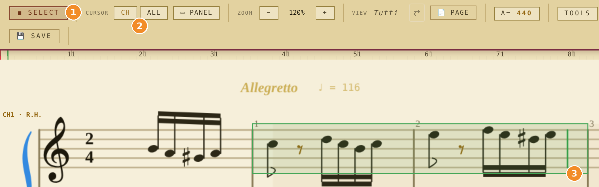
Zum Ausschalten: Drück Esc (schaltet aus und löscht die Auswahl), drück noch einmal SELECT oder klick außerhalb der Notensysteme.
Wie du die Stelle markierst, steht unter Eine Stelle auswählen.
So siehst du, dass es geklappt hat: Die Taste zeigt ◼ SELECT mit dunklem Hintergrund.
Ein Rechtsklick auf die Taste SELECT öffnet ein kleines Feld mit Aktionen, aber nur, wenn der Modus aus ist.
Eine Stelle auswählen · und verschieben
Eine Auswahl ist eine Stelle der Partitur, die mit einem Rahmen markiert ist. Alles, was du danach machst (verschieben, kopieren, die Dynamik ändern…), passiert mit dem, was darin ist.
So wählst du aus:
- Schalte den Modus SELECT ein ①.
- Wähl CH oder ALL ②: Mit CH wählst du in einem einzigen Notensystem aus; mit ALL in allen zugleich.
- Drück die Maustaste auf dem Notensystem, wo die Stelle beginnt, und zieh bis dorthin, wo sie endet. Während du ziehst, ist der Rahmen golden und gestrichelt.
- Lass die Taste los. Der Rahmen schließt sich und wird grün ③.
Das Bild ist bei dem Modus SELECT, gleich oben.
- Zum Vergrößern oder Verkleinern: Umschalt + Klick verschiebt den Rand, ohne neu anzufangen.
- Zum Verschieben: Geh mit der Maus auf den geschlossenen Rahmen (der Zeiger wird zur Hand) und zieh ihn. Die Musik bewegt sich mit, Schritt für Schritt nach SUBDIV.
So siehst du, dass es geklappt hat: Du siehst den grünen Rahmen um die Noten, die du wolltest.
Vorsicht: Wenn du auf die Nummer eines Takts klickst statt auf das Notensystem, geht die Information zu diesem Takt auf. Fang das Ziehen zwischen den Linien an.
Ein Takt mit einem Doppelklick, und wie man ihn erweitert
Doppelklick auf die Notenzeile, wo kein Notenkopf ist, und der ganze Takt wird ausgewählt, in diesem Kanal. Vorher muss nichts eingeschaltet werden: Der Doppelklick wechselt von selbst in den SELECT-Modus und lässt die Auswahl geschlossen, bereit für das Aktionen-Popup oder für Note spacing. Da nicht gezogen wird, kann man nicht versehentlich eine Note verschieben — genau das passierte, wenn man über die Notenköpfe ziehen musste, um einen Takt zu markieren.
Von dort aus erweitert Shift + Klick auf einen anderen Takt desselben Kanals die Auswahl bis dorthin. Das lässt sich verketten: Doppelklick auf 3, Shift + Klick auf 6, und du hast 3 bis 6 ohne ein einziges Ziehen.
Drei Dinge, die man auseinanderhalten sollte, weil es verschiedene Gesten auf derselben Notenzeile sind. Ein Doppelklick auf einen Notenkopf wählt nicht den Takt aus: Das ist die Geste für den Akkord, und sie greift die Noten dieses Einsatzes. Ein Klick in eine bereits geschlossene Auswahl erweitert oder kürzt sie ebenfalls nicht: Er greift sie, um sie zu verschieben, und der Cursor wird zur Hand — um sie zu erweitern, gehört das Shift + Klick also außerhalb des Abschnitts, den du schon hast. Und Ziehen wählt nur bei eingeschaltetem SELECT-Modus aus; ohne ihn ist Ziehen über die Notenzeile Bearbeiten, und genau deshalb verschoben sich Noten, wenn du auswählen wolltest.
Ein ganzer Kanal oder das ganze Stück, ohne zu ziehen
Für einen ganzen Kanal oder das ganze Stück musst du nicht von einem Ende zum anderen ziehen: Das Rechtsklick-Panel hat Select all in channel und Select all channels, die die vollständige Auswahl auf einmal erstellen. Kopieren, Transponieren, den Abschnitt als Datei speichern oder ihn löschen — all das beginnt dort.
Alt · die andere Auswahl, die der einzelnen Noten
Es gibt eine zweite Auswahl, kein Abschnitt, sondern eine Handvoll Noten, und sie wohnt auf der Taste Alt. Alt + Klick auf einen Notenkopf fügt ihn hinzu oder entfernt ihn. Alt + Ziehen an einer leeren Stelle zeichnet ein Rechteck und nimmt alles darin, kanalübergreifend und einschließlich Pausen. Und ein Doppelklick auf eine Note nimmt den ganzen Akkord. Esc gibt sie frei. (Alt mit der rechten Taste bewirkt nichts: Die Geste geht mit der linken.)
Die Partitur — das Mausrad, die Hand, der Ziffernblock und das Ziehen.
Der Cursor · wo landet, was du schreibst
Der Cursor ist der kleine farbige senkrechte Strich auf dem System ①: grün im hellen Thema, gelb im dunklen. Er zeigt, wo die nächste Note landet, die du schreibst, und wo die Popups hinsetzen, was du einfügst: ein Tempo, einen Schlüssel, einen Text.

So bewegst du ihn:
- Klick auf das System, wo du willst. Klickst du auf eine Note, wird sie ausgewählt und der Cursor geht dorthin.
- Die Pfeile ← und → bewegen ihn einen Schritt. SUBDIV bestimmt, wie groß der Schritt ist: im 4/4-Takt mit SUBDIV 2 ist jeder Schritt eine Achtel.
- Die Pfeile ↑ und ↓ bringen ihn zum Instrument darüber oder darunter, wenn keine Note ausgewählt ist.
- Wenn du eine Note schreibst, rückt der Cursor von selbst so weit vor, wie die Note dauert.
CH oder ALL ②: Mit CH steht der Strich nur auf einem Instrument; mit ALL läuft er durch alle Systeme.
So weißt du, wo er steht: Außer dass du ihn siehst, sagt CURSOR ③ in der Transportleiste unten, auf welchem Instrument du bist.
Das ist nicht dasselbe wie die Auswahl: Der Cursor ist ein Punkt. Die Auswahl ist ein Abschnitt mit einem Rahmen, um mehrere Noten auf einmal zu verschieben, zu kopieren oder zu ändern.
Das Mausrad · drei Achsen auf einem Rad
Über der Partitur scrollt das einfache Mausrad horizontal — kein Fehler: In einer Partitur ist die Hauptachse die Zeit, und sie läuft seitwärts. Shift + Mausrad ist das vertikale, um durch das Orchester nach unten zu wandern, und Strg + Mausrad ist der Zoom, verankert dort, wo der Zeiger steht. Im Panel scrollt das Mausrad wie auf jeder Seite, und nur Strg zoomt — sein eigener, unabhängiger Zoom —; und auf dem Blatt geht das einfache Mausrad nach unten, Shift seitwärts, und Strg holt das Blatt näher heran.
Die Hand · und das Ziehen, das die Notenzeilen auseinanderrückt
An einer leeren Stelle der Arbeitsfläche ziehst du mit der linken Taste: Nach ein paar Pixeln erscheint die Hand, und die Partitur läuft mit ihr. Sie ist horizontal; die Vertikale der Arbeitsfläche ist Shift + Mausrad. Im Panel dagegen verschiebt die Hand auf beiden Achsen. Und es gibt ein Ziehen, das überrascht: Auf einer Notenzeile verschiebt vertikales Ziehen nicht die Ansicht — es ändert den Abstand dieses Kanals zur nächsten Notenzeile, und die darunter folgen, ohne zusammenzustoßen. Das ist die Luft der Seite, und so wird sie eingestellt, nach Augenmaß.
Der Ziffernblock · der Notenwert auf einer Taste, und die Pausenregel
Der Numpad ist der Block mit den Zifferntasten rechts auf der Computertastatur. (Manche kleinen Laptops haben keinen.) Im Score ist jede dieser Tasten ein Notenwert: Du wählst die Dauer, ohne die Tastatur loszulassen.
So schreibst du mit dem Numpad:
- Drück die Taste des Notenwerts, zum Beispiel 5 für die Viertel.
- Schreib die Noten: Sie kommen alle mit diesem Notenwert heraus.
- Um den Notenwert zu wechseln, drück eine andere Taste.
So schreibst du Pausen: Drück dieselbe Taste noch einmal. Ab dann wird jede Note, die du schreibst, eine Pause dieses Werts. Drück einen anderen Notenwert, und du bist wieder bei den Noten. So brauchen Pausen keine eigene Taste.
So siehst du, dass es geklappt hat: Jedes Mal, wenn du eine Taste drückst, erscheint unten ein Kärtchen mit dem Notenwert, zum Beispiel „♩ Viertel“ oder „Viertelpause“. Wenn du unsicher bist, drück 0: Das Kärtchen sagt dir, was eingestellt ist, ohne etwas zu ändern.
- Es funktioniert mit NumLock an oder aus.
- Während du in ein Textfeld schreibst, schreibt der Numpad wie gewohnt Ziffern.
Die Leiste · einen Wert aufs Blatt ziehen
Bei geschlossenem kleinem Keyboard öffnet BAND ♪ die Leiste mit dem, was du am meisten verwendest. Ihre eigene Geste ist das Ziehen: Nimm einen Wert und lass ihn auf der Notenzeile los. Der Geist, der dir folgt, rastet nicht an einem blinden Raster ein, sondern an den musikalischen Stellen des Takts: dem Anfang, den bereits vorhandenen Einsätzen und dem Ende jeder Note, denn dort beginnt eine Lücke. Und beim Loslassen geschieht das Vernünftige: Landet der Wert auf einer Note und ist er kürzer, übernimmt diese Note den neuen Wert, ohne die Tonhöhe zu ändern, und der Rest wird mit Pausen gefüllt; landet er hinter dem Ende des Inhalts, wird die Lücke mit Pausen ergänzt, damit der Takt aufgeht; und passt er nicht hinein, wird nichts eingefügt, und du erhältst einen Hinweis. Die gerade gesetzte Note bleibt ausgewählt, so dass du sie mit derselben Leiste weiter korrigieren kannst.
Eine Note verschieben · drei verschiedene Arten zu ziehen
Einfaches Ziehen: rhythmisch und horizontal — die Note wechselt ihren Platz in der Zeit und rastet beim Loslassen auf der nächsten Unterteilung ein (der ternären, wenn es eine N-tolennote ist), so dass sich auf dem Blatt keine schiefe Spalte öffnet. Shift + Ziehen ist das feine: Es schiebt die Note um Pixel, nur Tinte, ohne die Zeit anzutasten — das, was du verwendest, wenn die Zeichnung kollidiert und die Musik stimmt. Strg + Ziehen ist der Kanalwechsel: Die Note wird auf einer anderen Notenzeile abgesetzt und behält ihren Platz unverändert — Takt, Schlag und Position —, so dass sie im selben Augenblick landet, in einer anderen Stimme; der Geist zeigt dir, zu welchem Kanal sie geht. Zwei Gefälligkeiten: Die gebalkte Gruppe wird nicht zerbrochen, wenn du eine Note darin verschiebst, und die Artikulationen und die Agogik dieser Note reisen mit ihr. Und Vorschlagsnoten werden fein gezogen, ohne dass du etwas gedrückt halten musst, denn auf einem proportionalen Raster gäbe es keine Möglichkeit, sie zu platzieren.
Die beiden Leisten unten.
Unter der Partitur gibt es zwei Leisten, und nie beide gleichzeitig: das Keyboard, zum Spielen und Schreiben, und das Panel, um einen zweiten Satz Kanäle zu verfolgen, während du arbeitest. Jede öffnet sich mit ihrem eigenen Button — 🎹 KEYBOARD und ▭ PANEL —, und das Öffnen der einen blendet die andere aus.
Die drei Zonen des Keyboards
Es öffnet und schließt sich mit 🎹 KEYBOARD und ist eine Leiste mit drei Zonen. Links, wie du spielst: WRITE oder LISTEN, und die Stimmung (System · Mode · Sens). In der Mitte die Tasten, mit den Oktavpfeilen auf beiden Seiten. Rechts die Karte des Kanals, in den du schreibst. Zwei Dinge, die man wissen sollte: Solange das Keyboard offen ist, steht die schwebende Leiste nicht zur Verfügung — beide erledigen dieselbe Aufgabe —, und bei geschlossenem Keyboard darf die QWERTY-Tastatur nicht schreiben, deshalb schaltet der Score von selbst auf LISTEN.
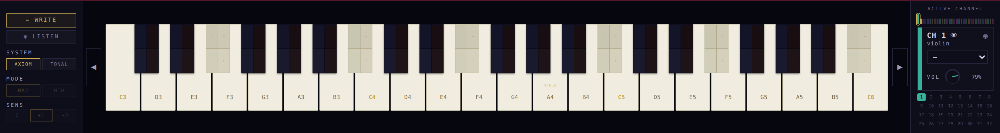
WRITE und LISTEN · schreiben oder nur ausprobieren
Im WRITE-Modus schreiben die Tasten und die QWERTY-Tastatur an der Cursorposition: Das ist der Arbeitsmodus. Im LISTEN-Modus klingen sie nur — es wird nichts geschrieben —, und das Keyboard passt seinen Ausschnitt an die Oktaven an, die das Stück verwendet, mit dem Ausschnitts-Chip (Auto · 5 · 6 · 7 · 9) und der Leiste Octave Shift unter den Tasten. Das ist der Modus, um einen Akkord auszuprobieren oder eine Note zu suchen, ohne die Partitur anzutasten. Zurück in WRITE beginnt das Fenster wieder bei C3–C6.
TODAL · nach Stufen spielen, und der Zyklus des Buttons
Der WRITE-Button schaltet reihum: ✏ WRITE → TODAL PLAY → TODAL WRITE → ✏ WRITE, und die Beschriftung sagt immer, wo du bist. Im TODAL-Modus sind die Tasten nach Stufen beschriftet — I bis VII in jeder Oktave —, und dieselbe Stufe ergibt immer den richtigen Ton der Tonart: Das ist es, was dich in jeder Tonart korrekt schreiben lässt, ohne Klavier spielen zu können. TODAL PLAY lässt nur klingen, TODAL WRITE schreibt. CapsLock ist ein optionaler Beschleuniger: Es schaltet TODAL ein und aus und steigt dabei in PLAY ein. Und wenn das Cosmic Keyboard eine neue Tonika sendet, wechselt der Score von selbst in TODAL PLAY und wartet: Er schreibt nicht, bis du auf WRITE umschaltest.
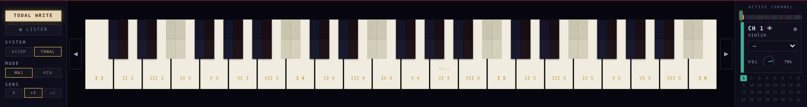
SYSTEM · Axiom oder Tonal
Axiom ist reine pythagoreische Stimmung, ohne Positionen: jede Note an ihrem arithmetischen Platz. Tonal schaltet das Positionssystem ein — eine Note wird nach ihrer Funktion in der Tonart gestimmt —, und das ist es, was die Harmonie sprechen lässt. Solange du in Axiom bist, bleiben MODE und SENS aus, weil sie ohne Tonart nichts bedeuten; beim Wechsel zu Tonal steigt SENS mit +1 ein.
MODE und SENS · das Tongeschlecht, und wie stark der Leitton geschärft wird
Maj und min ändern das Tongeschlecht der aktiven Tonart; min öffnet außerdem ein kleines Popup, um natürliches, harmonisches oder melodisches Moll zu wählen. SENS gibt an, wie weit die Leittonstufe erhöht wird: 0 schärft nicht, +1 erhöht die VII. Stufe um ihre Apotome — der Standard — und +2 fügt bei den chromatischen Tönen das Komma hinzu, eine deutlichere Wirkung. Der Wert reist im tonalen Zustand zum Cosmic Keyboard, das den Klang erzeugt.
Das Oktavfenster
Die Pfeile ◀ ▶ an den Seiten verschieben das Fenster um eine Oktave, und die Beschriftungen an beiden Enden sagen, wo es gelandet ist (C3 · C6). Im LISTEN-Modus legt der Ausschnitts-Chip außerdem 5, 6, 7 oder 9 Oktaven fest oder kehrt zu Auto zurück, dem Umfang, den das Stück tatsächlich verwendet.
Die Karte des aktiven Kanals · das Instrument wechseln, ohne etwas zu öffnen
Die rechte Zone ist der Kanal, in den du schreibst. Oben die Schiene: jeder Kanal in seiner Farbe, und ein Tippen wechselt den Kanal. Darunter die Karte: die Nummer CH, das 👁, das seine Notenzeile ein- oder ausblendet, das ◉, das ihn stummschaltet, der Name, das Instrumentenetikett — kosmetisch: Das Patch gehört der Engine — und der Regler VOL, der sich ↕ ziehen lässt und den Prozentwert anzeigt. Und das 32er-Raster: ein Klick, und du schreibst in einem anderen Kanal, ohne CHANNELS zu öffnen.
Das Panel · eine zweite Notenzeile darunter
Button ▭ PANEL. Er öffnet eine zweite Ansicht unter der Partitur, damit du zwei Dinge gleichzeitig verfolgen kannst: den Solisten und den Bass, die Stimme, die du abschreibst, und die, die du schreibst. Panel und Keyboard schließen sich gegenseitig aus: Das Öffnen des Panels blendet das Keyboard aus, und da die QWERTY-Tastatur nicht blind schreiben darf, fällt der Modus auf LISTEN zurück. Es entsteht mit dem Kanal, in dem der Cursor steht; die Leiste, die es abtrennt, lässt sich ziehen, um es höher oder niedriger zu machen, und ✕ blendet es aus.
Die CH-Chips · welche Kanäle das Panel spiegelt
Jeder Chip in der Kopfzeile ist ein Kanal, in seiner eigenen Farbe; ein Klick nimmt ihn ins Panel auf oder heraus, und du kannst mehrere gleichzeitig haben. Du musst nicht daran denken, sie hinzuzufügen: Wenn du in einem Kanal schreibst, der nicht dabei war, fügt das Panel ihn von selbst hinzu, so dass die gerade eingegebene Note sichtbar ist.
Eigener Zoom und eigenes Scrollen
Strg + Mausrad über dem Panel ändert nur den Zoom des Panels — das einfache Mausrad scrollt es —, und der Prozentwert erscheint in der Kopfzeile. Beim ersten Öffnen übernimmt es den Zoom der Partitur; danach behält es seinen eigenen, so dass du das Panel groß über einem kleinen Blatt haben kannst.
🎧 SOLO · nur hören, was du ansiehst
Der Button bittet die Console, die Kanäle des Panels zu isolieren: S auf diesen, M auf den übrigen. Beim Ausschalten — oder beim Schließen des Panels — kehrt das Pult in den Zustand zurück, den es hatte, und nichts davon wird im Stück gespeichert. Änderst du die Chips bei eingeschaltetem SOLO, verteilt die Console neu.
🖨 PRINT VIEW · die Stimme dieses Instruments
Es öffnet die gewählten Kanäle in der Druckansicht, schreibgeschützt: die Stimme eines Instruments — oder einer Gruppe —, bereit für Papier oder PDF. Das ist der kurze Weg zu den Stimmen: Wähle die Chips und drucke, was übrig bleibt.
Du kannst im Panel bearbeiten
Das Panel begann als etwas zum Anschauen, und das ist es nicht mehr: Der Rechtsklick funktioniert darin, mit denselben Editoren — Note, Haltebogen, Dynamik, Geste, N-tole, Tempo —, ermittelt den wahren Kanal der Zeile und öffnet sich unter dem Zeiger, dort, wo du hinschaust. Auch die Mehrfachauswahl wird dort angezeigt, mit ihren Rahmen.
Was du tun willst, und welches Panel es tut.
Zwei Regeln, und du kannst alles öffnen. Was auf der oberen Leiste sitzt, öffnet sich mit einem Klick auf seinen Button und schließt sich mit einem weiteren. Was auf der Partitur sitzt, öffnet sich mit einem Rechtsklick auf das Ding selbst — eine Note, einen Bogen, einen Taktstrich, einen Kanalnamen —, so dass es kein Menü zu suchen gibt: Das Menü ist das Menü dessen, was du berührt hast. Jedes Panel lässt sich an seiner Kopfzeile ziehen, jedes hat die Pinnadel ⊗, damit ein Klick außerhalb es nicht schließt, und die Taste X blendet alle aus und wieder ein.
Auf der oberen Leiste — was für das ganze Stück gilt: wie es gespeichert wird, in welchem Tempo es läuft, in welcher Tonart es steht, welche Instrumente es hat.
Datei · öffnen, speichern und das Stück mitnehmen
In MENU FILES speicherst und öffnest du deine Arbeit. Ein Music-Motion-Stück wird in einer .mmf-Datei gespeichert: Sie enthält die Noten und auch, wie sie gespielt werden (Dynamik, Tempi, der Klang jedes Instruments).

- 🆕 NEW: eine neue, leere Partitur.
- 💾 SAVE AS…: speichert unter einem Namen und in einem Ordner deiner Wahl. Danach speichert die Taste SAVE in der Leiste (oder Strg+S) immer in dieselbe Datei.
- 💾 EXPORT MMF: lädt eine Kopie der .mmf in deinen Download-Ordner.
- 📂 IMPORT MMF: öffnet eine .mmf.
- 📄 EXPORT XML und 📥 IMPORT XML: speichern und öffnen MusicXML, das Format, das Finale, Dorico, Sibelius und MuseScore verstehen.
- 🖨 PRINT / PDF: schickt das Blatt an den Drucker oder speichert es als PDF.
- 🔊 SAVE AS WAV: nimmt den Klang des Stücks in einer Audiodatei auf. Es dauert so lange wie die Musik, weil sie beim Spielen aufgenommen wird; CANCEL bricht ab.
So siehst du, dass gespeichert wurde: die Taste SAVE zeigt einige Sekunden lang „✓ SAVED“ in Grün. Erlaubt der Browser das Speichern nicht, sagt es dir der Score: Er schweigt nicht.
Score Info · der Titel und wer das Stück geschrieben hat
Score Info ist das Titelblatt deines Stücks: der Titel und wer es geschrieben hat. Es steht oben auf der ersten gedruckten Seite.
- Drück ✎ INFO, in der oberen Leiste, neben MENU FILES.
- Schreib Title, Subtitle, Composer (wer es komponiert hat), Author (wer es bearbeitet oder abgeschrieben hat) und Copyright.
- Drück Apply.

So siehst du, dass es geklappt hat: in der Ansicht PAGE siehst du oben den großen Titel und rechts den Komponisten.
Orchestra sagt, für welche Orchestergröße das Stück ist, vom Kammerorchester bis zum großen romantischen Orchester. Damit weiß die Suite, wie viele Spieler jede Streichergruppe hat.
Tempo · ein Adagio setzen oder das Tempo mitten im Stück wechseln
Das Tempo ist die Geschwindigkeit der Musik. Es wird in BPM gemessen: Schläge pro Minute. 60 BPM ist ein Schlag pro Sekunde, wie eine Uhr; 120 BPM ist doppelt so schnell.
So stellst du das Tempo ein:
- Setz den Cursor auf den Takt, in dem dieses Tempo beginnt.
- Drück die Taste TEMPO.
- Wähl bei Term ein Wort (Adagio = langsam, Allegro = schnell) oder schreib dein eigenes.
- Stell bei BPM die Zahl ein, mit − und +.
- Drück Insert Marking.

So siehst du, dass es geklappt hat: über dem System steht zum Beispiel „Allegro ♩ = 120“, und die Musik spielt in dieser Geschwindigkeit.
Damit die Musik mitten im Stück schneller oder langsamer wird: Setz den Cursor auf den Takt, in dem es sich ändert, und wiederhol die Schritte.
- This bar setzt das Tempo an den Anfang des Takts. This place setzt es genau auf den Schlag, auf dem der Cursor steht.
- Mit Show aus verschwindet „♩ = 120“ aus der Partitur, aber die Musik behält diese Geschwindigkeit.
Schlüssel · den Schlüssel mitten in der Notenzeile wechseln
Der Schlüssel ist das Zeichen am Anfang des Systems. Er sagt, welche Note jede Linie ist. Der Violinschlüssel (Treble) ist für hohe Klänge: Violine, Flöte, die rechte Hand am Klavier. Der Bassschlüssel (Bass) ist für tiefe Klänge: Cello, Kontrabass, die linke Hand. Der C-Schlüssel (C Clef) ist für die Bratsche.
So wechselst du den Schlüssel:
- Setz den Cursor auf das Instrument (und auf den Takt, wenn der Schlüssel unterwegs wechselt).
- Drück die Taste CLEF.
- Wähl bei Scope, wie weit er gilt (siehe unten).
- Klick auf den Schlüssel, den du willst. Den C-Schlüssel ziehst du nach oben oder unten, um ihn auf eine andere Linie zu setzen.
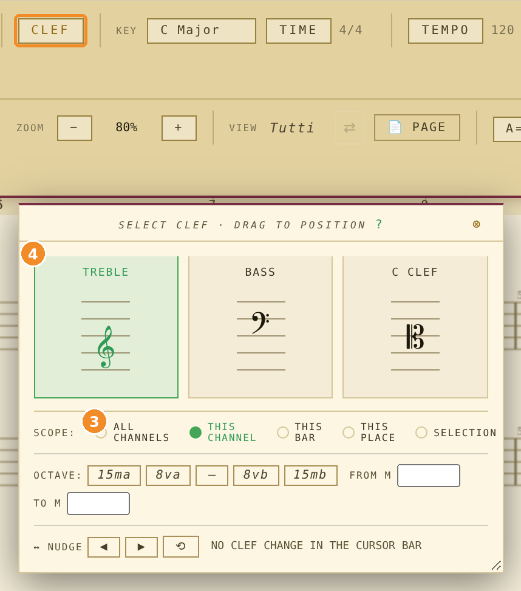
- All channels: alle Instrumente, das ganze Stück. This channel: das aktive Instrument, das ganze Stück.
- This bar: ab dem Takt des Cursors. Nützlich für das Cello, das in den C-Schlüssel wechselt. This place: ab dem genauen Schlag des Cursors.
- Selection: nur die ausgewählten Takte; danach kehrt der vorherige Schlüssel von selbst zurück.
Der Schlüssel ändert nicht den Klang: Er ändert, wie die Noten geschrieben werden, damit sie nicht voller Hilfslinien sind. Klebt der neue Schlüssel an einer Note, schiebt ihn ↔ Nudge ein wenig nach links oder rechts.
Octave (8va, 15ma, 8vb, 15mb) setzt eine Oktavlinie über einige Takte: Die Noten werden eine oder zwei Oktaven näher am System geschrieben, klingen aber wie immer.
Taktart · und was mit dem Geschriebenen geschieht
Die Taktart sind die beiden Zahlen am Anfang, zum Beispiel 3/4. Die obere sagt, wie viele Schläge jeder Takt hat; die untere, welcher Notenwert ein Schlag ist (4 = Viertel, 8 = Achtel). Ein Walzer steht im 3/4-Takt: drei Viertel pro Takt.
So änderst du ihn:
- Drück die Taste TIME.
- Schreib Numerator (oben) und Denominator (unten), oder wähl eine aus Quick Select: 3/4, 2/4, 6/8…
- Wähl eine der beiden Tasten (siehe unten).
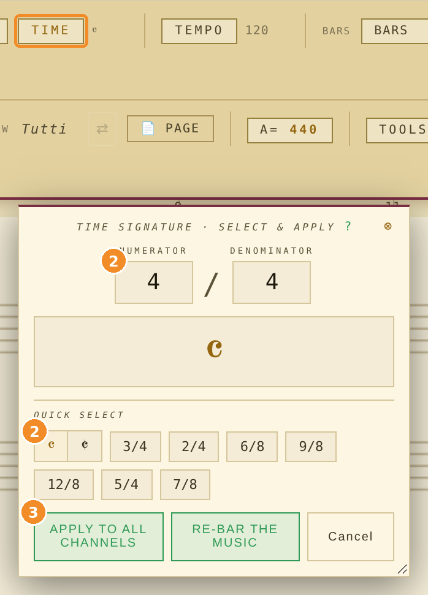
- Apply to All Channels ändert nur die Zahlen. Die Noten bleiben, wo sie sind. Nimm es, wenn du noch nichts geschrieben hast, oder wenn die Taktart falsch war, die Noten aber stimmen.
- Re-bar the music ändert die Zahlen und verteilt die Noten neu auf die neuen Takte. Eine Note, die von einem neuen Taktstrich geteilt wird, wird in zwei geteilt und übergebunden.
So siehst du, dass es geklappt hat: am Anfang des Systems steht die neue Taktart, und mit Re-bar hat jeder Takt genau die Schläge, die die Taktart sagt.
Vorsicht: TIME ändert die Taktart des ganzen Stücks, von Anfang an. Hat das Stück schon Taktwechsel in der Mitte (zum Beispiel, weil du es aus Finale importiert hast), funktioniert Re-bar nicht.
Tonartvorzeichnung · und die Musik mit ihr transponieren
Die Tonartvorzeichnung sind die Kreuze (♯) oder Bs (♭) am Anfang jedes Systems. Sie sagen, in welcher Tonart die Musik steht: G-Dur hat ein ♯, F-Dur hat ein ♭.
So setzt du die Vorzeichnung:
- Drück die Taste, die die Tonart zeigt (zum Beispiel C Major).
- Wähl, wie weit sie gilt (siehe unten).
- Wähl Major oder Minor.
- Geh mit ▶ und ◀ durch die Tonarten: Jeder Klick auf ▶ fügt ein ♯ hinzu (oder nimmt ein ♭ weg), jeder Klick auf ◀ fügt ein ♭ hinzu (oder nimmt ein ♯ weg). Die Vorzeichnung ändert sich sofort.

- All CH: alle Instrumente, das ganze Stück. This CH: nur das aktive Instrument.
- This Bar: ab dem Takt des Cursors. So wechselt man mitten im Stück die Tonart.
- Selection: nur die ausgewählten Takte; danach kehrt die vorherige Vorzeichnung zurück.
Zwei verschiedene Dinge: Die Vorzeichnung zu ändern lässt die Noten, wo sie sind. ⇅ Transpose music to key verschiebt außerdem die Musik in die neue Tonart: Alles klingt höher oder tiefer, wie wenn ein Sänger das Lied „einen Ton tiefer“ haben möchte.
So siehst du, dass es geklappt hat: die ♯ oder ♭ erscheinen am Anfang jedes Systems oder in dem Takt, in dem die Tonart wechselt.
Takte · Auftakt, Taktstriche und der Atem zwischen den Sätzen
BARS dient für alles rund um die Takte: den Auftakt, Takte einfügen oder löschen und die Art des Taktstrichs. Es arbeitet auf dem Takt, in dem der Cursor steht.
Takte einfügen oder löschen:
- Setz den Cursor auf einen Takt und drück BARS.
- Der Schalter sagt Add (einfügen) oder Delete (löschen). Daneben: wie viele Takte.
- Wähl Before (vor) oder After (nach) dem Takt des Cursors. In der Mitte siehst du seine Nummer (M1 ist Takt 1).
- Drück Apply.

Alles, was danach kommt, rückt mit der Musik mit: Noten, Dynamik, Tempi, Wiederholungen und Wechsel von Taktart oder Tonart.
- Upbeat: der Auftakt, die Noten vor dem ersten vollen Takt (das „und“ vor der „Eins“). Schalt ihn ein und wähl, wie lang er dauert.
- Barline: die Art des Taktstrichs nach (oder vor) dem Takt: einfach, doppelt, Schluss, gestrichelt… Der doppelte trennt Abschnitte; der Schlussstrich beendet das Stück.
- Respiro: Sekunden Stille an diesem Taktstrich, bevor es weitergeht, nützlich zwischen Sätzen. 0 = attacca, ohne Pause weiter.
- Beat: setzt den Taktstrich mitten in den Takt, vor diesen Schlag. Das passiert, wenn ein Abschnitt mitten im Takt endet und das Folgende der Auftakt des nächsten Abschnitts ist.
- BAR NUM zeigt oder verbirgt die Taktnummern. GROUP lässt die Taktstriche zwischen den Systemen jeder Klammer durchlaufen.
- REP öffnet Repeats, für Wiederholungen.
So siehst du, dass es geklappt hat: die Taktnummern verschieben sich und der neue Taktstrich steht an seinem Platz.
Wiederholungen · Wiederholungen, D.C., Coda und das Stück ausgeschrieben sehen
Eine Wiederholung lässt einen Abschnitt zweimal (oder öfter) erklingen, ohne ihn neu zu schreiben. Sie wird mit den Strichen ‖: und :‖ markiert. Mit D.C. (da capo, „von vorn“) oder D.S. (dal segno, „vom Zeichen“) springt die Musik zurück.
So wiederholst du einen Abschnitt:
- Drück die Taste :|.
- Wähl bei I WANT TO ① Repeat.
- Schreib bei From bar und To bar ② den ersten und den letzten Takt. Bei Times, wie oft er erklingt.
- Schau auf die Zeile Plays ⑤: Sie sagt, in welcher Reihenfolge die Takte gespielt werden.
- Drück Create ⑥.

So springst du mit D.C. oder D.S. zurück: Wähl bei I WANT TO Jump back.

- D.C. geht zurück zum Anfang; D.S. geht zurück zum Zeichen 𝄋, das du bei Segno at ① setzt.
- Wie es endet ③: simple geht bis zum Ende weiter; al Fine endet dort, wo Fine steht; al Coda springt zur Coda.
- Unfold ④ zeigt das Stück ausgefaltet, wie es klingt, mit ausgeschriebenen Wiederholungen. Fold faltet es wieder.
So siehst du, dass es geklappt hat: In der Partitur erscheinen die Wiederholungsstriche (oder das D.C. oder D.S.), und die Zeile Plays sagt die Reihenfolge, die du hören wirst.
Für alle, die es genauer brauchen:
Ein Abschnitt kann mit seinem eigenen Auftakt beginnen: From und To haben jeweils ihren Beat. From 24 · Beat 2 lässt den Abschnitt mitten in Takt 24 beginnen; To 64 · Beat 1 setzt das :‖ mitten in Takt 64, und die Wiederholung geht zum Auftakt des Abschnitts zurück. From 0 beginnt beim Auftakt des Stücks, also kehrt die erste Wiederholung dorthin zurück. Mit leerem Beat nimmt der Abschnitt ganze Takte. Ein Stück kann mehrere Abschnitte hintereinander haben, und alle werden wiederholt.
Die erste und zweite Klammer fügst du mit + Add ending hinzu, eine pro Durchgang, und jede hat ihren eigenen Beat am Anfang und am Ende: So schreibst du eine erste Klammer, die mit dem Auftakt endet, der zum Anfang zurückführt, oder eine zweite Klammer, die Platz für den Auftakt des nächsten Abschnitts lässt. Jede Klammer erklingt nur in ihrem Durchgang, und ihre Beschriftung ist die Nummer dieses Durchgangs: „1.“, „2.“ und bei einer dreifachen Wiederholung „3.“.
In 6/8-, 3/8- oder 9/8-Takten zählt Beat Achtel: im 6/8 geht es von 1 bis 6. To 8 · Beat 5 setzt das :‖ nach dem fünften Achtel von Takt 8. Dasselbe gilt für die Klammerfelder und für den Beat in BARS.
Wiederholung mit 1. und 2. Klammer. Schreiben Sie die Musik beider Klammern nacheinander: die 1. in den letzten Takt der Wiederholung, die 2. in den folgenden Takt. In Repeats: From bar = der erste Takt, To bar = der Takt der 1. Klammer, und die Schaltfläche 1st / 2nd ending. Beide Klammern entstehen von selbst. Vor Create zeigt die Zeile Plays, in welcher Reihenfolge die Takte gespielt werden: Sie stammt von derselben Engine, die spielt.
Zum Korrigieren klicken Sie mit der rechten Maustaste auf ihre Schattierung (über oder unter dem System), auf den Taktstrich ‖: oder :‖ oder auf die Klammer eines Schlusses: dasselbe Repeats öffnet sich mit allem geladen. Apply korrigiert sie, Delete löscht sie. Gibt es auf diesen Takten schon eine Wiederholung, legt der Score keine zweite darüber: er warnt.
Text · Studierzeichen setzen
TEXT setzt Texte auf die Partitur: die Studierbuchstaben (A, B, C…, um zu sagen „wir fangen bei B an“), und Wörter wie Coda, Fine, Solo oder Tutti.
So setzt du einen Text:
- Setz den Cursor dorthin, wo er hin soll.
- Drück die Taste TEXT.
- Schreib den Text ① oder klick auf einen der schnellen Texte ②.
- Drück Insert Text ⑤.

So setzt du Studierbuchstaben im ganzen Stück auf einmal:
- Schreib bei EVERY ③, alle wie viele Takte (zum Beispiel 10).
- Wähl LETTERS (A, B, C…), NUMBERS (1, 2, 3…) oder BAR NUM (die Taktnummer).
- Wähl den Rahmen: box (Kasten), circle oder none (ohne Rahmen).
- Drück Generate ④. Clear marks entfernt sie.
- SCOPE: This channel, auf diesem Instrument; All channels, auf allen; Each group, einmal für jede Gruppe von Systemen.
- Der Text eines Liedes, Silbe für Silbe unter den Noten, wird im Teil LYRICS geschrieben: siehe Liedtext.
So siehst du, dass es geklappt hat: Der Text erscheint über dem System, an der Stelle des Cursors.
Liedtext · die Silben an die Noten gebunden
Für ein Lied, einen Chor oder eine Übung mit Text wird der Liedtext nicht als loser Text geschrieben, sondern Note für Note. Jede Silbe wird in ihrer Note gespeichert und zentriert darunter gezeichnet: Wenn du den Zoom oder den Abstand änderst, folgt die Silbe ihrer Note, und bei den Wiederholungen geht sie nicht verloren. Das findest du im Popup TEXT, im Block Lyrics.

Den Liedtext schreiben. Setze den Cursor auf die Note, an der der Text beginnt —oder wähle sie aus— und drücke LYRICS. Über der Note erscheint ein Feld: Du schreibst die Silbe, und Leertaste (oder Tab) geht zur nächsten Note. Geht das Wort weiter, schreibst du statt des Leerzeichens den Bindestrich -: Die Silbe behält ihren Bindestrich, und du gehst zur nächsten Note. Shift+Tab geht zur vorigen Note zurück, Enter beendet und Esc beendet, ohne das zuletzt Geschriebene zu speichern. Pausen und übergebundene Noten werden von selbst übersprungen.
Ein Beispiel: Für „Funkel, funkel, kleiner Stern“ schreibst du Fun - kel Leertaste fun - kel Leertaste klei - ner Leertaste Stern. Wenn eine Silbe mehrere Noten dauert (ein Melisma), drücke auf den folgenden Noten die Leertaste, ohne etwas zu schreiben: Sie bleiben ohne Silbe, und die vorige Silbe wird verlängert. Um eine Silbe zu korrigieren, setze den Cursor auf ihre Note und drücke LYRICS: Das Feld zeigt, was sie enthält; du löschst es und schreibst die neue.

Wie es aussieht. Zwischen den Silben eines Wortes zeichnet der Score den Bindestrich, zentriert im verbleibenden Raum; wenn die letzte Silbe eines Wortes mehrere Noten dauert, zeichnet er die Verlängerungslinie bis zur letzten Note des Melismas. Size ändert die Größe des Liedtextes des Kanals, und Y setzt ihn tiefer oder höher gegenüber dem Notensystem, zum Beispiel bei sehr tiefen Noten; mit Line 2 oder 3 ausgewählt verschiebt Y die Übersetzung. Jeder Kanal hat seinen eigenen Liedtext: Ein vierstimmiger Chor hat auf jedem Notensystem einen Text.

Die Übersetzung. Unter dem Liedtext ist Platz für zwei weitere Zeilen Übersetzung. Wähle Line 2 (oder 3) und drücke LYRICS auf der ersten Note eines Satzes: Schreibe dort den ganzen Satz, mit Leerzeichen, und Tab geht zur nächsten Note (Tab auf Noten, an denen kein Satz beginnt, lässt sie leer). Jeder Satz bleibt an seine Note gebunden und wird kursiv gezeichnet, ab dieser Note ausgerichtet und unter dem System, auch wenn der Liedtext zum oberen Notensystem gehört. Line 1 führt zum gesungenen Text zurück. CLEAR und TEXTS → LYRICS wirken auf die gewählte Zeile.

TEXTS → LYRICS ist für einen Liedtext, der schon als lose Texte des Kanals geschrieben war: Es macht daraus echten Liedtext, und jeder Text geht zur Note, die seiner Zählzeit am nächsten liegt. CLEAR löscht den Liedtext des aktiven Kanals. Alles lässt sich mit Undo rückgängig machen und wird mit dem Stück in der .mmf gespeichert. Der Liedtext reist auch in MusicXML mit: Er geht beim Export hinaus (jede Silbe mit ihrem Bindestrich, die Übersetzung als Strophen 2 und 3) und kommt beim Import von XML aus Finale, MuseScore oder Sibelius herein.
Demo-Modus · ein Stück zeigen, ohne es zu bearbeiten
Um ein Stück vorzustellen —im Unterricht, auf einem Bildschirm oder für ein Video— öffnet sich der Score im Demo-Modus, wenn man ?demo an die Adresse anhängt: mm-score-page.html?demo. Die Bearbeitungsleisten, das Keyboard und die Knöpfe der Kopfzeile werden ausgeblendet; es bleiben die Partitur und die untere Leiste mit Play, Pause, Stop und den Taktsprüngen. Die Leertaste startet und stoppt. Nichts, was man auf der Partitur tut, verändert sie: Ein Klick setzt nur den Cursor, um von dort aus zu spielen.
Mit &file= öffnet sich direkt eine Datei, und mit &page wird sie als Seite gezeigt: mm-score-page.html?demo&file=../Claude%20outputs/Claude-2026-seikilos.mmf&page. Der Klang reist mit der Seite: Die Demo lädt das Keyboard versteckt als Klangmotor, und das Stück klingt, ohne etwas anderes zu öffnen (ist schon ein Keyboard offen, nimmt sie dieses).
Oben, zentriert neben dem Titel, hat die Demo drei Knöpfe: PAGE / SCROLL wechselt zwischen Seite und Band, PRINT baut die Seite und öffnet den Druck mit fertigen Seiten (der Browser zeigt vor dem Drucken immer sein Druckfenster), und PULSE öffnet das Metronom.

Dynamik · ein Zeichen oder ein Crescendo über zwei Takte
Die Dynamik sagt, wie laut oder leise man spielt: pp sehr leise, p leise, mf halblaut, f laut, ff sehr laut. Die Gabeln (Crescendo und Diminuendo) sagen, dass der Klang nach und nach wächst oder verklingt.

So setzt du ein Dynamikzeichen:
- Setz den Cursor auf die Note, wo es beginnt.
- Drück die Taste DYN.
- Klick auf das Zeichen ④: p, f, mf…
So setzt du eine Gabel:
- Setz den Cursor dorthin, wo sie beginnt, oder wähle den Abschnitt aus, den du willst.
- Klick auf crescendo oder diminuendo ①.
Ohne Auswahl ist die Gabel einen Takt lang. Willst du sie länger oder kürzer, zieh an ihrer Spitze.
- cresc. und dim. in Worten ② sind für den Fall, dass die gezeichnete Gabel nicht passt. SPAN sagt, wie lange sie dauern: 1 beat (ein Schlag), ½ bar oder 1 bar.
- SCOPE ③: This channel, nur dieses Instrument; All channels, das ganze Orchester; Selected, die Instrumente, die du ankreuzt.
- In der unteren Zeile ⑤ kannst du ein Wort vor oder nach dem Zeichen schreiben, wie „più f“ oder „p subito“.
So siehst du, dass es geklappt hat: Das Zeichen oder die Gabel erscheint unter dem System, und beim Spielen hörst du die Veränderung.
Artikulationen · das Staccato, der Bogenstrich, der Triller
Artikulationen sind die kleinen Zeichen über oder unter der Note, die sagen, wie man sie spielt: der Punkt des Staccato (kurz), der kleine Strich des Tenuto (gehalten), der Akzent > (mit Kraft).
So setzt du eine Artikulation:
- Setz den Cursor auf die Note, oder wähle mehrere aus.
- Drück die Taste ART.
- Klick auf das Zeichen ③.

- Die obere Zeile ① sagt, wo es landet: der Kanal, der Cursor oder die Auswahl, und wie viele Noten (zum Beispiel „1 note“).
- SIDE ②: auto entscheidet selbst, ob das Zeichen oben oder unten steht; beam setzt es auf die Seite des Halses; head, auf die Seite des Notenkopfs.
- Die Zeichen ③ stehen in Gruppen: TOUCH (Staccato, Tenuto…), EMPHASIS (Akzente), TIME (fermata ist die Fermate, caesura, breath), PEDAL und weiter unten die Verzierungen (trill, turn, mordent, tremolo).
- Mit einer Auswahl tritt ped das Pedal dort, wo sie beginnt, und hebt es dort, wo sie endet.
So siehst du, dass es geklappt hat: Das Zeichen erscheint auf der Note, und beim Spielen hörst du es: Das Staccato klingt kurz, der Akzent lauter.
Notenwert · den Notenwert vor dem Schreiben wählen
Bevor du eine Note schreibst, wählst du, wie lang sie dauert: ihren Notenwert (Ganze, Halbe, Viertel, Achtel…). Der Notenwert bleibt eingestellt, und jede Note, die du schreibst, bekommt ihn, bis du einen anderen wählst.
So wählst du den Notenwert:
- Drück die Taste DUR.
- Klick auf den Notenwert ②: 1/1 ist die Ganze, 1/2 die Halbe, 1/4 die Viertel, 1/8 die Achtel, und so weiter bis 1/64.
- Schreib die Noten.
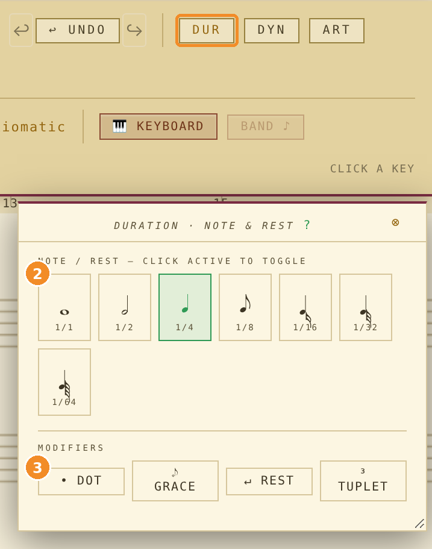
Abkürzung: Du kannst den Notenwert auch mit dem Numpad wählen, ohne das Popup zu öffnen.
So schreibst du Pausen: Klick noch einmal auf den Notenwert, der schon leuchtet. Jetzt wird jede Note eine Pause. Noch ein Klick, oder ein anderer Notenwert, und du bist wieder bei den Noten.
Die vier Tasten unten ③:
- DOT setzt den Punkt: Die Note dauert anderthalbmal so lang. Er gilt nur für die nächste Note.
- GRACE lässt die Noten als Vorschläge erscheinen. Jeder Klick wechselt: ACCIACCATURA (durchgestrichen), APPOGGIATURA, aus. Es bleibt an, bis du es ausschaltest.
- REST setzt eine Pause des gewählten Notenwerts dorthin, wo der Cursor steht.
- TUPLET öffnet die Triole: drei Noten an der Stelle von zwei.
So siehst du, dass es geklappt hat: Der gewählte Notenwert leuchtet grün, und die Note, die du schreibst, hat diese Form.
Ausdruck · dolce, espressivo, und wie weit sie reichen
Eine Ausdrucksbezeichnung ist ein Wort, das den Charakter der Musik sagt: dolce (süß), espressivo, agitato, cantabile. In Music Motion ist das Wort nicht nur Tinte: Das Instrument liest es und ändert seine Spielweise.
So setzt du eine Ausdrucksbezeichnung:
- Setz den Cursor dorthin, wo sie beginnt.
- Drück die Taste EXPR.
- Schreib das Wort ① oder klick auf eines der schnellen Wörter ②.
- Drück Insert Expression ④.

- Das Wort gilt von dort bis zur nächsten Ausdrucksbezeichnung desselben Instruments.
- SCOPE ③: This channel, nur dieses Instrument; All channels, alle.
- Mit Show aus verschwindet das Wort aus der Partitur, aber das Instrument spielt es weiter.
- Du kannst es in deiner Sprache schreiben: sieh, wie.
So siehst du, dass es geklappt hat: Das Wort erscheint kursiv über dem System.
AGOG · wer über das Rubato entscheidet
Agogik ist die Freiheit der Zeit: eine Note oder eine Phrase ein wenig dehnen, so wie ein Musiker es tut, wenn er atmet (das Rubato). Dieses Popup ist die Karte der Agogik deines Stücks: Es sagt dir, wo es welche gibt, und bringt dich dorthin.

So siehst du die Agogik deines Stücks:
- Drück die Taste AGOG.
- In der Liste ① siehst du jede Phrase (⌘) und jede gedehnte Note (◆), in der Reihenfolge der Takte.
- Klick auf eine: Der Cursor geht dorthin, und ihr Editor öffnet sich, damit du sie korrigieren kannst.
So gibst du einer Phrase Agogik:
- Wähle mit SELECT die Takte der Phrase aus.
- Drück AGOG und dann ⌘ Phrase from selection ②. Die Phrasenagogik öffnet sich, wo du wählst, wie sie atmet.
Es ist dasselbe wie ein Rechtsklick auf die Auswahl und dann ⌘ ASYM AGOG. Ist nichts ausgewählt, sagt es dir die Taste.
So dehnst du eine einzelne Note: Rechtsklick auf die Note und dann ← AGOG. Siehe AGOG der Note.
- Show all ③ zeigt oder verbirgt alle Agogikzeichen in der Partitur. Verborgen bleiben sie in der Datei gespeichert.
So siehst du, dass es geklappt hat: Die neue Phrase oder Note erscheint in der Liste, bei ihrem Takt.
Werkzeuge · wenn sich der Bildschirm mit Panels füllt
Während du arbeitest, öffnest du viele Popups, und der Bildschirm füllt sich. TOOLS dient dazu, sie zu ordnen und die Einstellungen zu öffnen.

- Open popups ①: Top öffnet sie unter der oberen Leiste; Bottom, über der Tastatur.
- View popups ②: Free, jedes, wo du es gelassen hast; Cascade, gestaffelt; Grouped, nebeneinander; Stack, übereinander, wie ein Kartenstapel. Mehr Einzelheiten.
- Die Liste ③ zeigt die offenen Popups: jedes mit einem Pfeil, um es nach vorn zu holen, und einem Kreuz, um es zu schließen.
- Hide all ④ verbirgt alle Popups auf einmal; die Taste X tut dasselbe und zeigt sie wieder. Reset positions setzt sie an ihren gewohnten Platz zurück.
- Score Options und Preferences ⑤ öffnen die Einstellungen: wie die Partitur aussieht und wie sich der Score verhält.
Score Options · das Notenblatt atmen lassen
Score Options stellt ein, wie die Partitur aussieht: ob die Noten zu eng oder zu locker stehen. Es öffnet sich über TOOLS.

- Note spacing ①: der Abstand zwischen den Noten. Er gilt für das ganze Stück; mit einer aktiven Auswahl nur für diesen Abschnitt.
- Note size ②: die Größe der Noten, zum Beispiel kleiner für eine Stimme, die nur zur Orientierung dient (cue). Es braucht eine Auswahl.
- Staff spacing ③: der Abstand zwischen den Systemen, für das ganze Stück.
- Bar numbers ④: Continuous nummeriert die Takte durchgehend; Per movement beginnt in jedem Satz neu. Es ändert nur die Anzeige: Um zu einem Takt zu gehen, bleibt die Nummer die durchgehende.
So siehst du, dass es geklappt hat: Die Partitur ändert sich, sobald du den Wert wählst.
Preferences · wie sich der Score verhalten soll
Preferences speichert, wie du gern arbeitest. Du stellst es einmal ein, und es bleibt fürs nächste Mal gespeichert. Es öffnet sich über TOOLS.
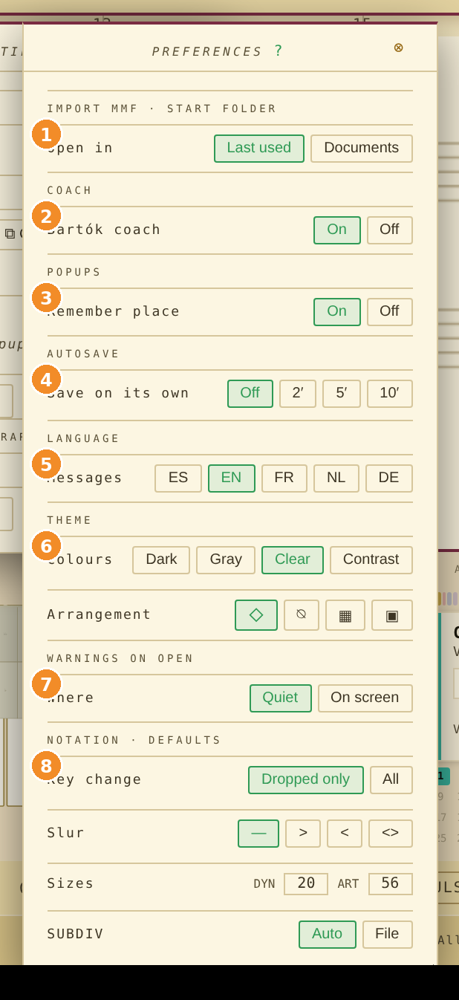
- ① Open in: der Ordner, in dem IMPORT MMF beginnt: der zuletzt benutzte (Last used) oder Documents.
- ② Coach: On oder Off, ob dir die Coach-App beim Schreiben Tipps gibt.
- ③ Remember place: Mit On öffnet sich jedes Popup wieder dort, wo du es gelassen hast, mit seiner Größe.
- ④ Save on its own: speichert von selbst alle 2, 5 oder 10 Minuten; Off tut es nicht.
- ⑤ Messages: die Sprache der Meldungen. Mit FR, NL oder DE erscheint die Anleitung in dieser Sprache und die Meldungen vorerst auf Englisch.
- ⑥ Colours: die Farbe des Bildschirms: Dark, Gray, Clear (wie Papier) oder Contrast. Arrangement ordnet die Popups, wie in TOOLS.
- ⑦ Warnings on open: Quiet prüft die Datei, ohne dich zu stören; On screen zeigt dir zusätzlich, welche Takte du dir ansehen solltest.
- ⑧ Notation: Key change sagt, welche Vorzeichen beim Tonartwechsel aufgelöst werden (Dropped only, nur die wegfallenden; All, alle); Slur ist die Form eines neuen Bogens; Sizes, die Größe von Dynamik (DYN) und Artikulationen (ART); SUBDIV, Auto leitet sie beim Öffnen aus der Musik ab und File nimmt die aus der Datei.
Stimmton · auf 415 spielen, wie im Barock
Der Kammerton ist das A, auf das das ganze Orchester stimmt. Heute verwendet man A = 440 Hz (440 Schwingungen pro Sekunde). Im Barock war er tiefer, um 415.
So änderst du ihn:
- Drück die Taste A= 440 in der oberen Leiste.
- Wähl einen der historischen ②, oder schieb den Regler ① für einen genauen Wert.
- Reset ③ geht zurück auf 440.

- Es transponiert nicht: Das ganze Stück klingt etwas tiefer oder höher, aber die geschriebenen Noten ändern sich nicht.
- Es ist dasselbe A= wie im Keyboard: es dort zu ändern, während der Score spielt, geht auch.
So siehst du, dass es geklappt hat: Die Taste zeigt die neue Zahl, und die Musik klingt tiefer oder höher.
Rückgängig und Löschen · zurückgehen oder einen Kanal leeren
Rückgängig nimmt das Letzte zurück, was du getan hast. Die Abkürzung ist Strg+Z (oder die Taste Backspace ←), und Strg+Y stellt es wieder her. Dieses Popup dient dazu, mehrere Schritte auf einmal zurückzugehen, und zum Löschen.
Für einen einzigen Schritt musst du das Popup nicht öffnen: Die Pfeile links und rechts der Taste machen dasselbe wie die Tastenkürzel. ↩ ④ macht einen Schritt rückgängig (wie Ctrl+Z) und ↪ ⑤ stellt ihn wieder her (wie Ctrl+Y).
So machst du mehrere Schritte rückgängig:
- Drück die Taste ↩ UNDO.
- Wähl, wie viele Schritte ①: 1, 3, 5 oder 10.
- Drück ↩ Undo ②.
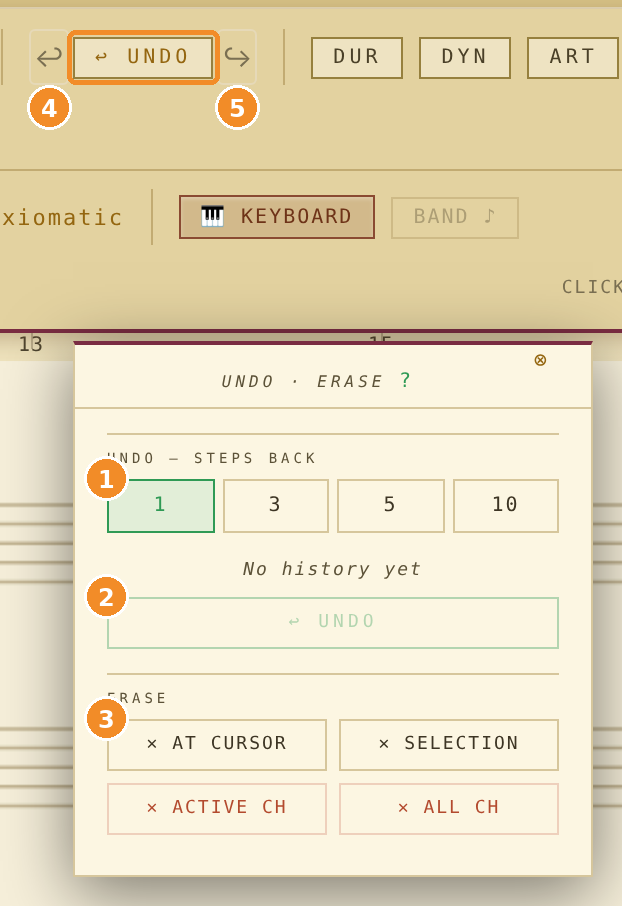
Zum Löschen ③:
- At cursor: die Noten des aktiven Instruments, die genau am Cursor stehen.
- Selection: was du ausgewählt hast. Ist nichts ausgewählt, tut es nichts.
- Active CH: alle Noten des aktiven Instruments. All CH: alle Noten aller Instrumente. Diese beiden fragen, bevor sie löschen.
- Alles, was du löschst, kannst du rückgängig machen.
So siehst du, dass es geklappt hat: Unter den Zahlen sagt eine Zeile, wie viele Schritte gespeichert sind. „No history yet“ heißt, dass es noch nichts rückgängig zu machen gibt.
Kanäle · dem Stück ein Instrument hinzufügen
Jedes Instrument deines Stücks lebt in einem Kanal: eine Zeile in dieser Liste und ein System in der Partitur. Der Score hat 32 Kanäle.
So fügst du ein Instrument hinzu:
- Drück die Taste ⚙ CHANNELS.
- Drück + ADD CHANNEL ④: Der nächste Kanal geht an und sein System erscheint.
- Öffne in seiner Zeile die Liste ② und wähl das Instrument.

So siehst du, dass es geklappt hat: Das neue System erscheint mit dem Namen des Instruments, und beim Spielen klingt es mit seiner eigenen Klangfarbe.
- Das Kästchen ① sagt, ob das System sichtbar ist. Aus verschwindet es vom Bildschirm, klingt aber weiter: sehen und nicht sehen.
- Das Instrument ② bestimmt, wie der Kanal klingt: mehr Einzelheiten.
- 👁 macht das System blass; ◉ schaltet es stumm (hören und nicht hören); FX gibt ihm Hall oder Echo (Sound FX).
- ☰ öffnet die Gruppenoptionen, um zwei Instrumente auf ein System zu setzen.
- List ⑤ lädt eine fertige Instrumentenliste, statt sie einzeln zu wählen.
Die Leiste · was du ständig brauchst, in Reichweite
Button BAND ♪. Eine Leiste, die dem Cursor folgt, mit dem, wonach du beim Schreiben am häufigsten greifst: Vorschlag, Punkt, N-tole, Vorzeichen, Agogik, Artikulation und Dynamik. Sie ist da, damit du nicht vier Popups öffnest, während du eine einzige Phrase schreibst.
The game count · wo der Schüler steht
Rechtsklick auf das Logo. Zeigt die Mini-Lektion des Coach und wie das Kompositionsspiel läuft: welche Regel an der Reihe ist, was erreicht wurde und was noch fehlt.
Tastenkürzel · die, die du verwendest, ohne die Tastatur zu verlassen
Rechtsklick auf ✎ INFO. Die kurze Tabelle dessen, was man auswendig wissen sollte: der Ziffernblock für die Notenwerte, die Leertaste zum Abspielen, Strg+Z, Esc. Und der Link zur vollständigen Liste, die sich drucken lässt.
Auf der Partitur, über dem, was du schon geschrieben hast — Rechtsklick auf die Note, den Bogen oder die Verzierung, die korrigiert werden muss.
Noteneditor · eine Note korrigieren, ohne sie neu zu schreiben
Der Noteneditor dient dazu, eine schon geschriebene Note zu ändern: lauter oder leiser, mit einem anderen Vorzeichen, mit dem Hals auf der anderen Seite, in eine Pause verwandelt…
Zum Öffnen: Rechtsklick auf die Note ①. Oben steht, welche Note es ist und wo, zum Beispiel «DN5 · M1 B2» (D5, Takt 1, Zählzeit 2).

Was du am meisten brauchst:
- VEL ②: wie laut diese eine Note klingt. + und − ändern sie um 1, +5 und −5 um 5. N gibt sie an das zurück, was das Dynamik-Band sagt.
- Hide note versteckt die Note: Sie klingt weiter, wird aber nicht gedruckt. Flip stem dreht den Hals um. → Rest macht eine Pause daraus. Dot setzt den Punkt oder nimmt ihn weg.
- ACC ③: das Vorzeichen. Doppel-b, b, Auflösungszeichen, Kreuz, Doppelkreuz.
- PRES ④: die Präsenz, das Gewicht des Anschlags, von −2 bis +2. Damit eine Mittelstimme eines Akkords mehr heraustritt, gib ihr PRES +1.
Eine Note mit geänderter VEL oder PRES trägt kein Zeichen in der Partitur. Um sie zu finden, schalte SHOW HIDDEN ⑤ ein: Neben jeder erscheint in Grau, was sie hat (zum Beispiel «v96»), und ihr Kopf wird lavendelfarben. Das sieht man nur auf dem Bildschirm, nie auf dem gedruckten Blatt.
So siehst du, dass es geklappt hat: Die Änderung siehst (oder hörst) du sofort an der Note, und die oberste Zeile des Editors zeigt den neuen Wert. Wenn du dich vertan hast, macht UNDO es rückgängig.
Von hier aus öffnest du auch die Editoren für den Bogen, den Hals und den Balken, und mit der Zeile ³ TUPLET den für die Triole.
Bogeneditor · damit der Bogen so wird, wie du ihn gedacht hast
Ein Bogen verbindet mehrere Noten: Sie werden zusammen gespielt, in einer einzigen Phrase. Mit dem Bogeneditor änderst du, wo er beginnt und endet, wie er aussieht und wie er gespielt wird.
Zum Öffnen: Rechtsklick auf den Bogen ①. Der Bogen zeigt drei Punkte, und daneben geht der Editor auf.

Oben, Anchors: Die Pfeile ◀ ▶ von Start und End verschieben den Anfang oder das Ende des Bogens auf die vorige oder die nächste Note.
Die Form des Bogens ② ändert die Zeichnung des Bogens nicht: Sie ändert, wie die Phrase gespielt wird. Die grüne Linie im Editor zeigt sie dir, und in der Partitur siehst du sie an der Farbe des Bogens: grün, wo die Phrase lauter ist, golden, wo sie leiser ist.

- > nimmt ab: beginnt stark und endet leise. < wächst: umgekehrt.
- <> öffnet sich in der Mitte und schließt. >º< sinkt in der Mitte und kommt zurück.
- — flach: gehalten, ohne Veränderung. Mit dieser Form entsteht der Bogen.
- ∩∪∩ und ∪∩∪: Noten paarweise, stark-schwach oder schwach-stark. Der Bogen sieht gleich aus.
Wie viel er steigt oder fällt, wählst du unter Dynamics ③: Peak ist, wie viel lauter der höchste Punkt wird (+1 bis +4), und Valley, wie viel leiser der tiefste (−1 bis −4), immer bezogen auf die geschriebene Dynamik.
Die Tasten, die die Zeichnung des Bogens ändern, damit er nirgends anstößt:
- Vertical ④: hebt oder senkt den ganzen Bogen (All) oder nur ein Ende (Left, Right).
- Horizontal ⑤: verschiebt den Anfang oder das Ende zur Seite.
- Curva ⑥: wie stark sich der Bogen krümmt, links, in der Mitte oder rechts.
- Arrastre ⑦: Die drei Punkte des Bogens kannst du auch mit der Maus ziehen; sie rasten auf ¼ Zwischenraum ein (mit Umschalt auf ½). Diese Zeile zeigt, wie weit du sie verschoben hast, und ↺ Arrastre macht nur das rückgängig.
- ⑧ ↕ Flip setzt den Bogen auf die andere Seite der Noten. ↔ Mirror spiegelt ihn von links nach rechts. ↺ Reset gibt ihm seine automatische Zeichnung zurück. ✕ Delete slur löscht den Bogen.
So siehst du, dass es geklappt hat: Der Bogen ändert sich in der Partitur, sobald du eine Taste drückst, und beim Anhören folgt die Phrase der Form, die du gewählt hast. Wenn es dir nicht gefällt, macht UNDO es rückgängig.
Ein Bogen über drei Takte oder mehr heftet jedes Ende von selbst an die richtige Seite: an den Notenkopf, wenn der Bogen auf der Kopfseite liegt, an die Spitze des Halses oder an den Balken, wenn er auf der Halsseite liegt.
Halseditor · wenn der Hals kollidiert oder zu kurz ist
Der Hals ist der kleine senkrechte Strich der Note. Das Score zeichnet ihn von selbst, nach oben oder nach unten, je nachdem, wie hoch die Note ist. Mit dem Hals-Editor änderst du ihn, wenn er irgendwo anstößt oder zu kurz ist.
Zum Öffnen: Rechtsklick auf die Note; im Noteneditor, der aufgeht, wählst du STEM EDITOR ①.

- Direction ②: ↑ Up stellt den Hals nach oben, ↓ Down nach unten, und ⟳ Auto lässt das Score wählen.
- Extension ③: + macht den Hals länger und − kürzer, zum Beispiel damit er bis zum Balken reicht.
- X offset ④: verschiebt den Hals zur Seite. Hilft bei Sekunden, wenn sich zwei benachbarte Noten den Hals teilen.
- ↺ Reset ⑤: gibt dem Hals die Zeichnung des Scores zurück.
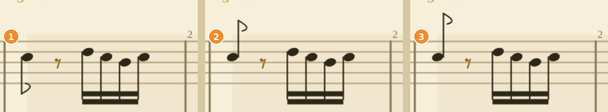
So siehst du, dass es geklappt hat: Der Hals ändert sich in der Partitur, sobald du die Taste drückst. Es ist nur Zeichnung: Die Note klingt gleich.
Balkeneditor · verbinden, trennen und entscheiden, wie die Gruppe klingt
Der Balken ist die dicke Linie, die Achtel und Sechzehntel zu Gruppen verbindet, damit sie leicht zu lesen sind. Das Score bildet die Gruppen von selbst; mit dem Balken-Editor verbindest, trennst oder verschiebst du sie.
Zum Öffnen: Rechtsklick auf eine Note der Gruppe; im Noteneditor wählst du BEAM EDITOR ①. Tastenkürzel: Wähl eine Note aus und drück Umschalt+B.

- Join ② verbindet die ausgewählten Noten zu einer Gruppe; Break trennt sie, jede mit ihrem eigenen Fähnchen; Auto geht zurück zu den Gruppen des Scores. Was du zeichnest, hörst du auch: Das Score spielt die Gruppe so, wie sie aussieht.
- Left, Right und Both ③ heben (↑) oder senken (↓) das linke Ende, das rechte Ende oder den ganzen Balken. Reset angle, unten, gibt dem Balken seine automatische Neigung zurück.
- Stems ④: alle Hälse der Gruppe nach oben, nach unten, umgedreht (⇅) oder automatisch.
- Int·Beams ⑤: wie viel lauter die wichtigen Noten der Gruppe klingen als die anderen, von 0 (alle gleich) bis 4 (sehr betont). G nimmt die Einstellung des ganzen Stücks. Mehr unter Intelligent Beams.

So siehst du, dass es geklappt hat: Du siehst den Balken sofort verbunden, getrennt oder verschoben, und beim Anhören klingt die Gruppe so, wie du sie gezeichnet hast. Wenn du dich vertust, macht UNDO es rückgängig.
N-tolen-Editor · die Klammer und die Zahl
Eine Triole sind drei Noten, die den Platz von zweien einnehmen. Darüber steht eine 3, manchmal mit einer Klammer. Der Triolen-Editor ändert, wie diese Klammer und diese Zahl aussehen.
Zum Öffnen: Rechtsklick auf die Klammer oder die Zahl der Triole ①.

- Bracket ②: Slur zeichnet einen Bogen, Straight eine gerade Klammer und None nichts, nur die Zahl.
- Number ③: On zeigt die Zahl und Off versteckt sie.
- Angle ④ neigt die Klammer (↻ gibt ihr die automatische Neigung zurück), und Move verschiebt sie, damit sie die Noten nicht verdeckt. Size ändert die Größe der Zahl.
- ✕ Untuplet ⑤ löst die Triole auf: Die Noten bekommen ihre normalen Werte zurück. Es ist das Einzige in diesem Editor, das den Klang ändert.

So siehst du, dass es geklappt hat: Klammer und Zahl ändern sich, sobald du die Taste drückst; die Triole klingt gleich. Wenn du dich vertust, macht UNDO es rückgängig.
Haltebogen-Editor · damit er die Köpfe nicht berührt
Ein Haltebogen ist der Bogen, der zwei gleiche Noten verbindet: Sie klingen wie eine einzige lange Note. Er ist etwas anderes als der Bogen der Phrasierung, der verschiedene Noten verbindet.
Zum Öffnen: Rechtsklick auf den Haltebogen ①.
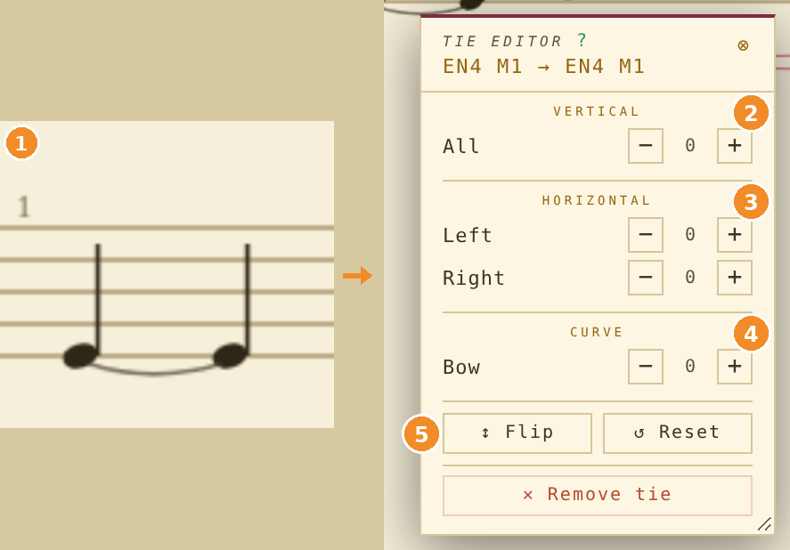
- Vertical ②: All hebt oder senkt den ganzen Bogen.
- Horizontal ③: Left und Right verschieben jedes Ende zur Seite.
- Curve ④: Bow krümmt den Bogen mehr oder weniger.
- ↕ Flip ⑤ setzt den Bogen auf die andere Seite der Noten. ↺ Reset gibt ihm seine automatische Zeichnung zurück, und ✕ Remove tie entfernt ihn.

So siehst du, dass es geklappt hat: Der Bogen ändert sich sofort in der Partitur. Es ist nur Zeichnung: Die beiden Noten klingen schon wie eine, ohne dass du etwas anfasst. Wenn du dich vertust, macht UNDO es rückgängig.
Gabel-Editor · das Crescendo dehnen, so weit es geht
Eine Gabel ist der offene Keil unter dem Notensystem: < ist Crescendo (die Musik wird lauter) und > Diminuendo (sie wird leiser). Mit dem Editor bestimmst du, wo sie beginnt, wo sie endet und wie sie aussieht.
Zum Öffnen: Rechtsklick auf die Gabel ①. Im Dynamik-Menü drückst du Edit hairpin… (Tastenkürzel: E). Ein Doppelklick auf die Gabel öffnet ihn auch.
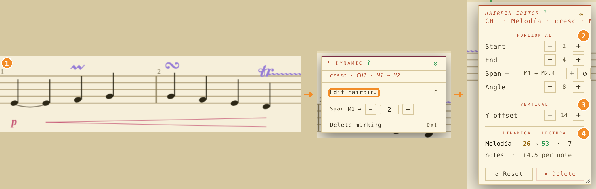
- Horizontal ②: Start und End verschieben Anfang und Ende; Span sagt, von welchem Takt bis zu welchem Takt sie geht; Angle öffnet oder schließt den Keil.
- Vertical ③: Y offset hebt oder senkt die Gabel.
- Dinámica · lectura ④ sagt dir, was du hören wirst: die Lautstärke am Anfang, die Lautstärke, die sie erreicht, und über wie viele Noten. Zum Beispiel «26 → 53 · 7 notes»: Sie wächst über sieben Noten.
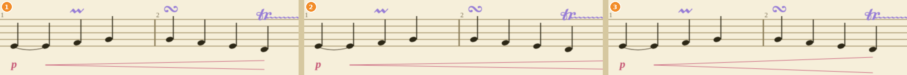
So siehst du, dass es geklappt hat: Die Gabel ändert sich sofort in der Partitur, und beim Anhören reicht das Crescendo so weit, wie du es gedehnt hast. Wenn du dich vertust, macht UNDO es rückgängig.
Editor des Vortragszeichens · die Geste der Note
Die Geste der Note ist, wie eine Note wächst oder verklingt, während sie dauert. Sie dient vor allem auf einer einzelnen Note: einer langen Note, einer Fermate, dem Ende einer Phrase. Sie wird mit einem Zeichen über der Note geschrieben, und dieses Zeichen klingt: Es ist nicht nur ein Hinweis für den Lesenden.
Zum Öffnen: Rechtsklick auf das Zeichen ①.

- Gesture ②: < blüht auf (wächst) · > verklingt · <> messa di voce (wächst und verklingt) · >º< sinkt in der Mitte und kommt zurück · — sostenuto (gleichmäßig). º fügt das Niente hinzu: aus dem Nichts beginnen oder ins Nichts enden. Die grüne Linie oben zeichnet die Geste.
- Placement ③: verschiebt das Zeichen (↑ ↓ ← →), setzt es oben oder unten (Above, Below) oder versteckt es (Show): Versteckt klingt es gleich.
- Size ④: die Größe des Zeichens.
- Value ⑤: Peak (+1 bis +4) ist, wie viel es steigt, und Valley (−1 bis −4), wie viel es fällt, gemessen an der Dynamik, die auf dieser Note gilt. Ein Schritt ist ungefähr eine Dynamikstufe.

Es ist nicht dasselbe wie PRES im Noteneditor: PRES ändert den Anfang der Note (den Anschlag); die Geste ändert, was danach passiert.
So siehst du, dass es geklappt hat: Das Zeichen über der Note ändert sich, die grüne Linie des Editors zeigt die Form, und beim Anhören wächst oder verklingt die Note so, wie du es gewählt hast. Wenn du dich vertust, macht UNDO es rückgängig.
Trillereditor · wie lange er dauert und wie er beschleunigt
Ein Triller (tr mit einer Wellenlinie) ist eine Note, die sehr schnell mit ihrer oberen Nachbarnote wechselt. Der Editor bestimmt, wie lange er dauert, wie schnell er geht und welche Nachbarnote er nimmt.
Zum Öffnen: Rechtsklick auf das Zeichen ①. Im Menü, das erscheint, drückst du ✎ TRILL EDITOR, die orange umrahmte Taste.
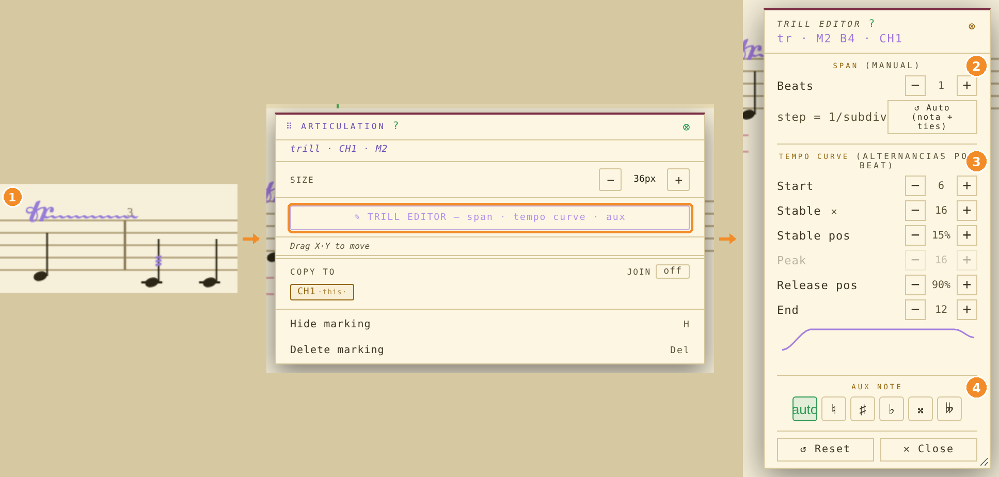
- Span ②: Beats sagt, wie viele Schläge der Triller dauert. ↺ Auto lässt ihn so lange dauern wie die Note mit ihren Haltebögen.
- Tempo curve ③: wie viele Wechsel pro Schlag. Start ist die Geschwindigkeit am Anfang, Stable die Geschwindigkeit, wenn er sich eingependelt hat, und Stable pos, wo das passiert; Release pos ist, wo er loszulassen beginnt, und End die Geschwindigkeit am Ende. Die Linie darunter zeichnet diese Kurve.
- Aux note ④: die Nachbarnote. auto folgt der Tonartvorzeichnung; ♮ ♯ ♭ 𝄪 𝄫 ändern sie, denn die Nachbarnote ist nicht immer die der Vorzeichnung.

So siehst du, dass es geklappt hat: Die Wellenlinie ändert ihre Länge in der Partitur, und beim Anhören dauert und läuft der Triller so, wie du ihn eingestellt hast. Wenn du dich vertust, macht UNDO es rückgängig.
Doppelschlag-Editor · normal oder umgekehrt, pünktlich oder verzögert
Ein Doppelschlag (das Zeichen ∾) ist eine Verzierung aus vier kleinen Noten, die um die Note herumgehen: die obere, die Note, die untere und wieder die Note.
Zum Öffnen: Rechtsklick auf das Zeichen ①. Im Menü, das erscheint, drückst du ✎ TURN EDITOR, die orange umrahmte Taste.
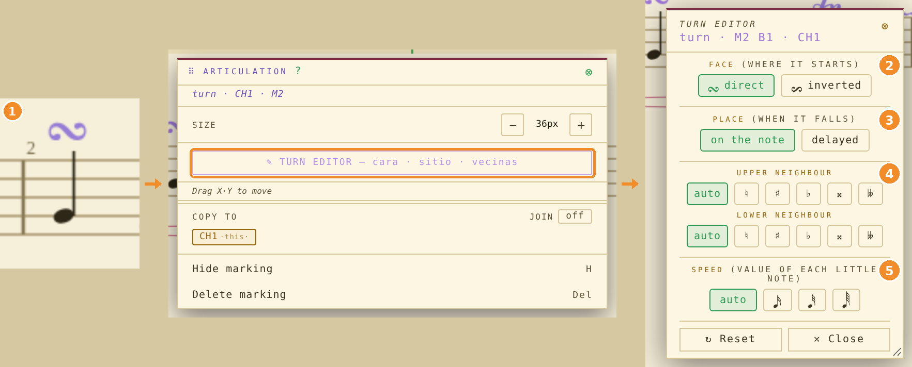
- Face ②: direct beginnt mit der oberen Nachbarnote; inverted mit der unteren. Das Zeichen dreht sich um.
- Place ③: on the note spielt den Doppelschlag am Anfang der Note; delayed spielt ihn später, gegen Ende.
- Upper / Lower neighbour ④: das Vorzeichen jeder Nachbarnote, mit ♮ ♯ ♭ oder doppelten 𝄪 𝄫. Ein Doppelschlag auf Ais verlangt Fisis darunter.
- Speed ⑤: der Wert jeder kleinen Note; mit auto wählt das Score.

So siehst du, dass es geklappt hat: Das Zeichen über der Note ändert sich, und beim Anhören beginnt und fällt der Doppelschlag dort, wo du es gewählt hast. Wenn du dich vertust, macht UNDO es rückgängig.
Mordent-Editor · nach oben oder nach unten
Ein Mordent ist eine sehr kurze Verzierung: die Note, ihre Nachbarnote und wieder die Note, sehr schnell.
Zum Öffnen: Rechtsklick auf das Zeichen ①. Im Menü, das erscheint, drückst du ✎ MORDENT EDITOR, die orange umrahmte Taste.

- Face ②: upper geht zur oberen Nachbarnote; lower zur unteren. Der untere hat einen kleinen Strich durch das Zeichen.
- Sign ③: bestimmt, was gedruckt wird, ohne den Klang zu ändern. Mit tr wird der obere Mordent als «tr» geschrieben, ohne Wellenlinie, wie der kurze Dreinoten-Triller bei Mozart oder Haydn (H–C–H und weiter).
- Neighbour ④: das Vorzeichen der Nachbarnote; auto folgt der Tonartvorzeichnung.
- Speed ⑤: der Wert jeder kleinen Note; mit auto wählt das Score.

So siehst du, dass es geklappt hat: Das Zeichen über der Note ändert sich, und beim Anhören geht die kleine Note in die Richtung, die du gewählt hast. Wenn du dich vertust, macht UNDO es rückgängig.
Tremoloeditor · gemessen oder frei
Ein Tremolo sind kleine Striche quer durch den Hals: Die Note wird viele Male schnell wiederholt. Je mehr Striche, desto schneller die Wiederholungen.
Zum Öffnen: Rechtsklick auf das Zeichen ①. Im Menü, das erscheint, drückst du ✎ TREMOLO EDITOR, die orange umrahmte Taste.
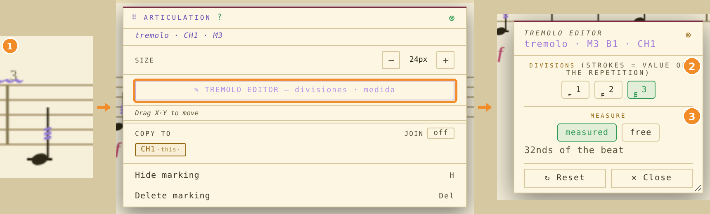
- Divisions ②: 1, 2 oder 3 Striche, also Achtel, Sechzehntel oder Zweiunddreißigstel des Schlags. Das ist, was man liest.
- Measure ③: measured spielt genau diese Wiederholungen, wie eine ausgeschriebene Wiederholung; free wiederholt schnell, ohne zu zählen, wie das Tremolo der Streicher.

So siehst du, dass es geklappt hat: Die Zahl der Striche am Hals ändert sich, und beim Anhören wiederholt sich die Note in diesem Tempo. Wenn du dich vertust, macht UNDO es rückgängig.
Arpeggioeditor · wie lange es zum Entfalten braucht
Ein Arpeggio ist die senkrechte Wellenlinie vor einem Akkord: Die Noten klingen nicht zusammen, sondern nacheinander, sehr schnell.
Zum Öffnen: Rechtsklick auf das Zeichen ①. Im Menü, das erscheint, drückst du ✎ ARPEGGIO EDITOR, die orange umrahmte Taste.
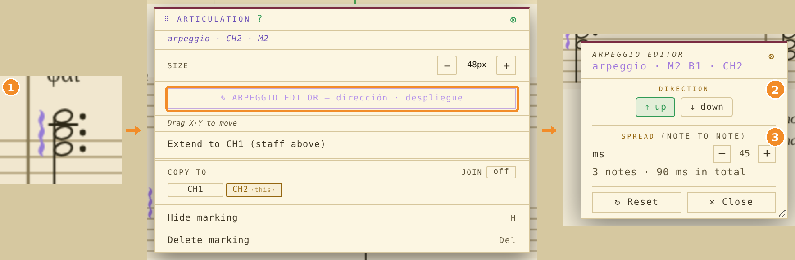
- Direction ②: ↑ up beginnt mit der tiefsten Note; ↓ down mit der höchsten. Der Pfeil am Zeichen zeigt es.
- Spread ③: wie viele Millisekunden von einer Note zur nächsten vergehen. Darunter steht die Summe, zum Beispiel «3 notes · 90 ms in total». Das ist der Unterschied zwischen einem Harfen-Arpeggio, langsam, und einem Klavier-Arpeggio, fast zusammen.

So siehst du, dass es geklappt hat: Der Pfeil am Zeichen ändert sich, und beim Anhören öffnet sich der Akkord in diese Richtung und in diesem Tempo. Wenn du dich vertust, macht UNDO es rückgängig.
Gruppentaktstriche · die Streicher mit einem Taktstrich verbinden
Rechtsklick auf die Akkolade oder Klammer der Gruppe, am Rand: Das Zeichen leuchtet auf, wenn die Maus darüber ist. Benenne die Gruppe und entscheide, ob ihre Taktstriche von einer Notenzeile zur nächsten durchgezogen werden, wie in einer Orchesterpartitur. Für alle Gruppen auf einmal gibt es den Schalter GROUP in BARS.
Die Rechtsklickmenüs — jedes ist das Menü des Dings, das du berührt hast, und bietet nur, was dieses Ding zulässt.
⠿ Auswahl · einen Abschnitt verschieben, kopieren und wiederholen
Rechtsklick innerhalb einer Auswahl. Das Übliche — kopieren, ausschneiden, einfügen, duplizieren — und dazu, was in einer Partitur wirklich hilft: Replicate wiederholt den Abschnitt nach vorn, Transpose verschiebt ihn nach oben oder unten, Snap to grid rückt ins Raster, was herausgefallen ist, ohne Akkorde zu zerbrechen, Re-value ändert die Notenwerte, und Save section as speichert diesen Abschnitt als eigene Datei.
⠿ Kanal · ein ganzes Instrument auf ein anderes kopieren
Rechtsklick auf die Notenzeile. Copy channel und Paste channel nehmen den ganzen Kanal: die Noten und auch die Artikulationen, Dynamik, Ausdrücke, Agogik und Regionen. So baust du die zweite Violine aus der ersten. Auch der Schlüssel des Kanals wird hier geändert.
⠿ Kanaletikett · stummschalten, ausblenden und Sound FX
Rechtsklick auf den Kanalnamen, links von der Notenzeile. Gib ihm die Abkürzung, die gedruckt wird, schalte ihn stumm, um den Rest zu hören, blende ihn aus, damit er keinen Platz auf dem Bildschirm einnimmt, und hier öffnen sich die Sound FX dieses Kanals.
⠿ Takt · sehen, was er enthält, und sein Muster kopieren
Rechtsklick auf die Taktnummer. Das ist eine Lesekarte: welche Noten der Takt enthält, welche Zeichen, wie das Pedal steht. Und darunter der praktische Teil: das Muster dieses Takts auf eine Reihe von Takten kopieren, für das Ostinato oder die Begleitung, die sich wiederholt.
⠿ Taktstrich · die Stille vor dem Weitergehen
Rechtsklick auf den Taktstrich. Hier kommt der Atem hin: die Sekunden, die die Musik an diesem Taktstrich wartet, damit der Hall vor dem nächsten Satz verklingt. Attacca ist Atem 0. Und du kannst angeben, dass dort ein Satz beginnt, mit seiner Bezeichnung.
Steht der Taktstrich innerhalb des Takts (der, den du mit BARS › After › Beat gesetzt hast), sagt das Menü es — „in T. 24“ — und zeigt die Zeile Beat: Mit − / + verschiebst du ihn auf eine andere Zählzeit, und ✕ Entfernen nimmt ihn aus dem Takt, der dann wieder mit einem einfachen Taktstrich endet. Die Atempause und der Systemumbruch bleiben.
Ändert sich nach dem Taktstrich die Taktart, zeigt das Menü die Zeile Time mit Visible · Hidden. Hidden druckt die Taktart nicht und lässt keinen Platz dafür, aber der Takt behält seine Länge: Das ist für den kurzen Takt, der einen mit Auftakt begonnenen Teil abschließt (der 1/4-Takt des Rondo alla Turca vor der Coda). Auf dem Bildschirm bleibt ein kleines graues Etikett über dem Taktstrich; ein Rechtsklick darauf zeigt die Taktart wieder an.
⠿ Text · korrigieren oder verschieben, was du getippt hast
Rechtsklick auf den Text. Bearbeite ihn, ändere seine Größe oder lösche ihn. Zum Verschieben brauchst du das Menü nicht: einfach ziehen.
⠿ Ausdruck · wie weit das Wort reicht
Rechtsklick auf das Wort. Ändere den Text, gib ihm eine Länge oder nimm sie weg, blende es aus, ohne es zu löschen. Die Karte darunter erklärt, welchen Anschlag es vom Instrument verlangt und welchen Zustand es hinterlässt, jeweils mit eigenem ?.
Was der Status sagt. Was dieses Wort heute tut, mit dieser Datei und diesem Instrument: klingt (es ändert den Klang, das Timing oder die Dynamik), schließt den vorigen Abschnitt (wie ord., semplice oder naturale: Es fügt nichts hinzu, es beendet, was vorher kam) oder klingt noch nicht (das Wort ist richtig geschrieben, hat aber noch keine Wirkung; an dem Tag, an dem es eine hat, spielt deine Datei es, ohne dass du etwas ändern musst).
Was der Anschlag ist. Wie die Hand den Klang erzeugt. Das Wort sagt die Absicht, und jedes Instrument setzt sie auf seine Weise um: cantabile ist der aufgelegte Finger am Klavier, ein langsamer Anschlag am Cembalo und die Fingerkuppe an der Harfe. Am Klavier ändert der Anschlag vor allem das kleine Mechanikgeräusch, das man kurz vor der Note hört. Er gilt von seinem Takt bis zum Ende seines Abschnitts (oder bis zum nächsten Wort desselben Instruments), und ein Zeichen auf der Note hat Vorrang. Mehr im Lexikon.
⠿ Dynamik · ein f so klingen lassen, wie du willst
Rechtsklick auf das Zeichen oder die Gabel. Die Länge, die Größe und die Velocity, falls dieses bestimmte f mehr oder weniger sein soll als das hauseigene f. JOIN verbindet zwei aufeinanderfolgende Gabeln, und der Gabeleditor öffnet sich von hier aus.
⠿ Artikulation · sie verschieben, sie ausblenden oder in den Triller gehen
Rechtsklick auf das Zeichen, und das Menü wird passend dazu aufgebaut: Nicht jede Zeile erscheint jedes Mal. Ganz oben sagt dir eine lila Zeile, auf welchem Zeichen du bist — sein Typ, sein Kanal (oder seine Kanäle, wenn verbunden) und sein Takt. Bei einem Pedal gibt diese Zeile außerdem an, wo es innerhalb des Takts fällt, und bei einem Ped, wie lange seine Region dauert bis zum nächsten Pedalzeichen, in Schlägen und in Sekunden beim Tempo dieses Takts. Das ist der schnelle Weg, um ein zu lang laufendes Pedal zu erkennen.
Size −/+ ändert den Körper des Zeichens in Pixeln, nur für dieses Zeichen. Dann kommen drei Zeilen, die je nach Zeichen erscheinen und keine Tinte sind, sondern Klang: Length (wie viel ihres Werts die Note klingt — die hinter Staccato und Portato), Weight (wie schwer der Anschlag ist — die hinter den Akzenten) und Hold (wie lange gehalten wird — die hinter Fermate und Zäsur). Jede beginnt beim hauseigenen Wert für dieses Zeichen und wird hier korrigiert, wenn die Passage etwas anderes verlangt.
Technique erscheint nur bei zwei Streicherzeichen und geht an die Engine: bei arco ist es die Kontaktstelle (norm · tasto · pont · legno), bei pizz das Ausklingen (pleno · secco · l.v.). Retake erscheint nur bei den Bogenstrichen ⊓ und V und sagt, wo die Luft ist: before bedeutet, dass der Bogen neu angesetzt wurde, um diese Note zu beginnen, after, dass er am Ende neu angesetzt wird, um in die nächste weiterzugehen, und der Strich wird auf der Seite der Lücke gezeichnet. In welche Richtung der Bogen läuft, wird nicht geschrieben — das Strichzeichen gibt es bereits vor.
Hat das Zeichen einen eigenen Editor, ist die Tür hier: Triller, Doppelschlag, Mordent, Tremolo und Arpeggio öffnen ihr Fenster aus diesem Menü. Ein Klavier- oder Harfenarpeggio erhält außerdem Extend to the staff above und Cut at this staff. Das Zeichen wird durch Ziehen in beide Richtungen verschoben, und die Zeile JOIN lässt ein Zeichen für mehrere Kanäle gleichzeitig gelten.
Das Pedal hat zwei eigene Zeilen, und hier lohnt es sich hinzusehen. Depth ist bei einem Ped, wie tief der Fuß hinuntergeht: full · 3/4 · 1/2 · 1/4, standardmäßig full — ganz unten ist die Saite frei, partiell liegt der Filz ohne Gewicht auf, was den tiefen Körper wegnimmt und die Teiltöne durchlässt. Bei einem ✻ sind die Optionen off · 1/4 · 1/2 · 3/4, und hier liegt die Falle: Der Bruch sagt, was vom Pedal BLEIBT, nicht, was aufgehoben wird. Nur off schließt die Region; ein partielles ✻ hebt nicht auf — es führt die Region mit weniger Pedal weiter, und genau das tut der Fuß wirklich, wenn die Dämpfer die Saite streifen, statt auf sie zu fallen.
Simile erscheint nur beim Ped und ist wiederholtes Pedalisieren: off (dieses Zeichen und nicht mehr) · to next mark (bis zum nächsten geschriebenen Zeichen) · to bar M (bis zu dem Takt, den du daneben eingibst). Was sich wiederholt, ist nicht das Ped allein, sondern das ganze Pedalmuster dieses Takts — jedes Ped und ✻ darin, mit ihren Tiefen —, Takt für Takt aufgeprägt; geschriebene Tinte gewinnt immer, und am Ende des Abschnitts hebt die Engine den Fuß mit einem trockenen ✻. Daher die einzige Regel, die man sich merken sollte: Ist das letzte ✻ des Mustertakts partiell, schließt das Pedal in keinem Takt des Abschnitts und bleibt von Anfang bis Ende getreten. Der Coach warnt, wenn eine Region länger als vier Takte offen bleibt, und die oberste Zeile des Menüs sagt dir, wie viele Sekunden sie dauert. Ein verborgenes Zeichen pedalisiert weiterhin: Nicht gesehen zu werden nimmt es nicht aus der Engine.
Ganz unten die zwei, die vergessen werden. Hide marking (Tastenkürzel H) nimmt das Zeichen von der Seite, ohne seine Wirkung zu entfernen: Das Zeichen bleibt in der .mmf und klingt weiter, wird auf dem Bildschirm grau mit 60 % gezeichnet und nie gedruckt. Bei einem bereits verborgenen Zeichen lautet dieselbe Zeile Show marking und bringt es als Tinte zurück. Achtung: Verborgene Zeichen sind nur bei eingeschaltetem SHOW HIDDEN sichtbar — und nur dann anklickbar —, und dieser Schalter wohnt im Popup TEMPO, obwohl er die ganze Tinte des Stücks steuert. Und Delete marking (Tastenkürzel Del) entfernt es wirklich; Strg+Z macht es rückgängig wie jeden anderen Schritt.
⠿ Tempo · ein bereits gesetztes Tempo korrigieren
Rechtsklick auf die Tempoangabe. Der Begriff, die BPM und die Länge. a tempo kehrt zum vorherigen Tempo zurück, was du nach einem Rallentando willst. Und du kannst das ♩= ausblenden und nur das Wort stehen lassen.
⠿ Asymmetrische Region · die Phrase, die nicht auf dem Raster sitzt
Right-click on the region’s edge or body —on a note, the note editor wins, so look for a gap: just above the top staff line, or the edge itself—. Give it a name, hide it or delete it, and its editor opens from here: this is the phrase where time stretches and shrinks while the grid stays put. With a name, the region is a pattern: Take carries it from bar M to bar M' (repeating every so many bars as it is long) and reports how many copies it made; Hide all and Delete all “name” act on all of them at once. Careful: a hidden region does not play and does not answer the right-click either. To bring it back, put the cursor inside its span and press Alt+H: this same menu opens, with Show region and Show all (the shortcut is in the menu title, in brackets). The edges can be dragged; when you create it from a selection, check the left edge and take it to where the phrase really starts (for example, after a rest). Example: bar 226 holds an Inhale · Extreme region over all the voices and you want it in 227, 230 and 231. Right-click the region, Take 227 to 227 ✓; again, Take 230 to 231 ✓. The bars that should not get it (228–229) are skipped by doing two passes, and where a copy already exists it is not duplicated.
⠿ System · die Seite vor dem Drucken aufräumen
Rechtsklick auf ein System, in der Seiten- oder Druckansicht. Verschiebe es zwei Millimeter nach oben oder unten, nimm einen Takt weg oder füge einen hinzu, damit die Zeile gut abschließt, und sperre es, damit es sich nicht bewegt, während du den Rest aufräumst.
⠿ Abschnittszeichen · das Segno, das verdeckt wurde
Rechtsklick auf Segno, Coda oder Fine auf dem Blatt. Größe, und es lässt sich durch Ziehen vertikal verschieben. Und von hier aus bearbeitest du den Abschnitt, zu dem es gehört.
⠿ Auf Bereich anwenden · dasselbe Zeichen über eine ganze Passage
Es erscheint, nachdem du eine Artikulation gewählt hast: Statt sie Note für Note zu setzen, wählst du den Bereich, und sie wird auf einmal auf die ganze Passage angewendet.
Und die, die sich über einen Button oder ein Tastenkürzel öffnen — die für die Arbeit an einer Passage: die Schleife, der Abschnitt, die Phrase, die Effekte.
Int·Beams · einen Lauf wie eine Phrase klingen lassen
Rechtsklick auf den Button 3·2. Hier entscheidest du, wie stark jede Note innerhalb der gebalkten Gruppe abfällt: Die geschriebene Dynamik ist die Obergrenze der Gruppe, und die übrigen sinken proportional. General legt es für das ganze Stück fest; danach kannst du es pro Taktbereich, pro Kanal oder pro Gruppe anpassen. 0 ist gleichmäßig, 4 am ausgeprägtesten.
Schleife · die Passage, die du korrigierst, in einer Schleife abspielen
Rechtsklick auf 🔁 LOOP. Setze A und B, schalte die Schleife ein, und die Passage wiederholt sich, während du daran arbeitest. See the whole piece gibt dir die Gesamtansicht zurück, ohne die Schleife zu verlieren.
Navigator · zu Takt 74 gelangen, ohne ihn zu suchen
Rechtsklick auf die Navigatorleiste. Go to measure bringt dich zu dem Takt, den du nennst; der Zoom führt dich zur A–B-Schleife; und du kannst einer Stelle eine Abschnittsbezeichnung geben (A, B, Coda), um mit einem Klick dorthin zurückzukehren.
Sound FX · Hall und Echo, in die Passage geschrieben
Klangeffekte ändern, wie ein Kanal klingt: Hall (der Nachklang eines großen Saals), Echo (die Note, die sich wiederholt, jedes Mal leiser), Porta (in die Note hineingleiten) und Vibrato (die Note, die schwingt).
Zum Öffnen: Drück FX ① in der Zeile des Kanals, in der Liste ⚙ CHANNELS. Es öffnet sich auch mit einem Rechtsklick auf den Namen des Kanals, links vom Notensystem, und dann Sound FX….

- Wo es geschrieben wird ②: This channel (der ganze Kanal), This place (die ausgewählte Note) oder Selection (die ausgewählte Stelle). Ein Kanal kann alle drei zugleich haben.
- Die Drehknöpfe ③: Reverb (wie viel Saal) · Echo wet (wie viel Echo hinzukommt) · Echo FB (wie viele Wiederholungen) · Echo time (der Abstand zwischen den Echos, von 80 bis 900 ms; neutral ist 400) · Porta (das Gleiten in die Note, bis 400 ms) · Vibrato (die Tiefe, bis 50 Cent). Du drehst sie, indem du die Maus nach oben oder unten ziehst; ein Doppelklick setzt den Knopf auf neutral zurück.
- CLEAN ④ löscht den Effekt des gewählten Bereichs. Wenn dieser Bereich nichts hat, löscht es den ganzen Kanal.
Tipp: Besser eine kurze Stelle, sogar eine einzige Note. Dort geben Echo und Hall einer Melodie Charakter, und Porta das Gleiten in die Note. Ein Effekt auf dem ganzen Stück ist ein Mischpult; ein Effekt auf einer Note ist Interpretation.
So siehst du, dass es geklappt hat: Die Taste FX dieses Kanals wird grün, und wenn du das Stück mit ▶ abspielst, hörst du den Effekt. Während du am Knopf drehst, hörst du ihn noch nicht: Du hörst ihn bei der Wiedergabe. Jede Bewegung eines Knopfs machst du mit UNDO (Strg+Z) rückgängig.
Der Effekt wird im Stück gespeichert (in der .mmf-Datei). Das Keyboard hat eine eigene Taste ⊕ FX für das, was du live spielst: siehe ⊕ FX live. Die beiden addieren sich nicht und überschreiben sich nicht. Mehr Details unter Sound FX nach Kanal und Bereich.
Phrasenagogik · der Solist atmet, und das Orchester bleibt stehen
Aus dem Auswahl- oder Regionsmenü. Wähle die Achse — Zeit, Druck oder Artikulation —, in welchem Teil der Phrase du bist (einatmen, bewegen, ankommen, ausatmen) und wie stark: dezent, ausdrucksvoll oder extrem. Die Zeichnung wird mit der Maus gezogen, bis die Phrase so klingt, wie du sie singst. Sie hat ihr eigenes ?.
Noten-AGOG · eine einzelne Note dehnen
Button ← AGOG im Noteneditor. Für den Fall, dass eine einzelne Note nachgeben muss und nicht die ganze Phrase: ihre Form, ihre Intensität und ihre Größe.
Sequenzen · das Ostinato einmal schreiben
Eine Sequenz wiederholt den Zustand eines Takts über einen Abschnitt. Der typische Fall ist das Pedal: Du schreibst, wie man einen Takt pedalisiert, und sagst „und so weiter bis Takt 61“.

So machst du eine Sequenz:
- Setz den Cursor auf den Takt, der als Vorlage dient (das Muster), oder wähle den ganzen Abschnitt aus.
- Drück SEQ in der oberen Leiste. Das Muster steht schon auf dem Takt, in dem du bist.
- Wähl, wie sie sich wiederholt ②: ⟳ simile oder ⧉ written marks.
- Prüf PATTERN, FROM und THROUGH ③ und drück die Taste ④.
- ⟳ simile ist eine lebendige Regel: Sie schreibt keine Zeichen, der Score wiederholt sie bei jedem Abspielen. Sie hängt am Ped des Mustertakts, also muss dieser Takt Pedal haben.
- ⧉ written marks schreibt echte Zeichen in jeden Takt, die du danach einzeln bearbeiten kannst.
So korrigierst du eine Sequenz: Klick auf ihre Zeile ①. Die Ansicht geht zu ihrem Takt, und ihre Werte erscheinen in den Feldern; ändere, was du willst, und drück die Taste. Das ✕ löscht sie. Alles lässt sich mit Strg+Z rückgängig machen.
Sie öffnet sich auch über die Auswahl: Rechtsklick darauf → Open sequence…
So siehst du, dass es geklappt hat: Die Sequenz erscheint in der Liste mit ihrem Abschnitt (zum Beispiel M1 → M61), und beim Abspielen hörst du sie im ganzen Abschnitt.
Die ganze Erklärung steht in Sequenzen: der Zustand eines Takts, wiederholt.
Re-value · die Notenwerte einer Passage halbieren
Aus dem Auswahlmenü. Ändert jeden Notenwert in der Auswahl von einer Dauer in eine andere — zum Beispiel Achtel in Sechzehntel —, ohne dass du die Passage neu schreiben musst.
Akkorde mit zwei Notenwerten (2026-09-25). Ein Stück, das aus MIDI kommt, kann Akkorde mit einer Viertel unter Achteln enthalten — die Stimme, die gehalten wurde. RE-VALUE übersprang sie früher („0 re-valued“), weil der ganze Akkord den FROM-Wert haben musste; jetzt wirkt es auf die Köpfe, die FROM sind, und lässt die anderen, so dass FROM 1/4 → 1/8 den Akkord vereinheitlicht. Und beim Verkürzen schreibt es keine Pausen, wo bereits etwas klingt.
Select · die Auswahlaktionen, gut sichtbar
Rechtsklick auf ◻ SELECT. Dasselbe wie das Auswahlmenü, aber ohne vorher auswählen zu müssen: den ganzen Kanal oder alle Kanäle auswählen und von dort aus kopieren, transponieren, den Abschnitt speichern oder löschen und dabei die Lücke schließen.
Abschnitt bearbeiten · eine bereits erstellte Wiederholung korrigieren
Seit November 2026 wird eine Wiederholung in Repeats korrigiert, demselben Popup, das sie erstellt: Rechtsklick auf ihre Schattierung, ihren Taktstrich ‖: oder :‖ oder auf eine ihrer Klammern. Siehe wie man sie korrigiert.
Volta bearbeiten · die Volta, die andere Takte abdeckt
Klammern werden zusammen mit ihrer Wiederholung in Repeats korrigiert: Rechtsklick auf die Klammer, und alle erscheinen, jede in ihrer Zeile — M (von welchem Takt bis zu welchem), Beat (leer = der ganze Takt) und Pass (die 1. markiert Durchgang 1; die 2. markiert last, den letzten Durchgang).
Arbeitsbereich · sich in zwanzig Takten einschließen
Rechtsklick auf die Taktanzeige. Gib an, zwischen welchen Takten du arbeitest, und der Rest des Stücks steht dir nicht mehr im Weg. Ein Klick löscht den Bereich, wenn du das ganze Stück zurückhaben willst.
Kanalgruppierung · zwei Flöten auf einer Notenzeile
Der Griff ☰ in der Kanalzeile, im Kanalpanel. Gib an, ob dieser Kanal seine eigene Notenzeile hat oder sich eine teilt — zwei Flöten auf einer Notenzeile, die Streicher mit ihrer Akkolade —, gib der Gruppe einen Namen und markiere sie, wenn es Schlagwerk ist.
Pulse · das Metronom, um mit laufendem Schlag zu schreiben
Der Puls ist der gleichmäßige Herzschlag der Musik, den du mit dem Fuß mitklopfst. PULSE zeigt ihn dir mit einem Licht, während du schreibst, damit du spürst, wo jeder Schlag fällt.
Zum Öffnen: Drück ♩ PULSE ①, unten rechts.
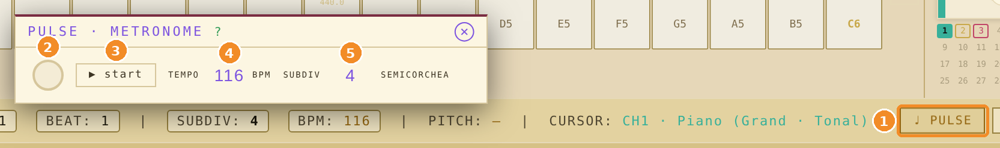
- Das Licht ②: Es schlägt mit dem Puls. Jeder Schlag wird stärker markiert als seine Unterteilungen.
- ▶ start ③ schaltet es ein; dieselbe Taste zeigt ■ stop zum Ausschalten.
- Tempo ④: Es wird hier nicht gewählt. Es wird aus der Partitur gelesen, in dem Takt, in dem der Cursor steht. Zum Ändern nimm TEMPO oder den BPM-Chip in der unteren Leiste.
- Subdiv ⑤: Das Licht blinkt so oft pro Schlag, wie SUBDIV sagt, und daneben siehst du den Notenwert. Mit 4 blinkt es in Sechzehnteln.
Das PULSE des Scores ist nur Licht, ohne Ton. Wenn du einen Klick hören oder das Tempo selbst wählen willst, nimm das Pulse des Keyboards.
So siehst du, dass es geklappt hat: Das Licht blinkt und die Taste zeigt ■ stop. Wenn du den Cursor in einen Takt mit einem anderen Tempo setzt, ändert das Licht seine Geschwindigkeit.
Nächste Note · eine Appoggiatura schreiben
Button Gr auf der Leiste. Stell ihn auf Acciaccatura oder Appoggiatura, und die nächste Note, die du schreibst, kommt als Vorschlagsnote heraus; schalte ihn aus, und alles ist wieder normal.
N-tole vorbereiten · drei in der Zeit von zwei
Button Tu auf der Leiste. Gib an, wie viele Noten in der Zeit von wie vielen stehen, ob sie Klammer und Zahl trägt und auf welcher Seite. Er wirkt auch auf eine bereits geschriebene Auswahl oder macht die N-tole mit UNTUPLET rückgängig.
Aus dem Noteneditor (2026-09-26). Der Noteneditor (Rechtsklick auf eine Note) hat unter RE-VALUE eine neue Zeile: ³ TUPLET · open →. Sie öffnet dasselbe Popup — das auch Numpad *, das Tu der Leiste und das ³ TUPLET des DUR öffnen — neben dem Noteneditor, wo du es sehen kannst, und nicht mehr hinter dem Keyboard versteckt. Gehört die Note zu einer N-tole, öffnet sich das Popup mit den Werten ihrer Gruppe.

Moll · natürlich, harmonisch oder melodisch
Der Button für das Mollgeschlecht. Ändert, welche Tonleiter das Stufen-Keyboard verwendet: natürlich, harmonisch mit erhöhter Septime oder melodisch.
Das Coach-Fenster · wo die Erklärungen erscheinen
Taste ? oder das 🎓. Das ist das Fenster, in dem Lektionen, Hinweise und die Erklärung jedes Hilfezeichens erscheinen. Es bleibt angeheftet, während du liest, stapelt Meldungen, statt sie zu überschreiben, und hat seine eigene Schriftgröße.
Fragen beim Bearbeiten, gelöst.
Fragen, die beim Bearbeiten von Mozarts Rondo alla Turca (KV 331, 3. Satz) aufkamen, mit der Antwort, die funktioniert hat. Sie gelten für jedes Stück mit denselben Problemen.
Ein 1/4-Takt mitten im Stück
Die Frage: Der Abschnitt begann mit einem Auftakt und endet mit einem Takt von nur einer Zählzeit (T. 96 des Rondos). Wie schreibt man ihn, ohne Klammern zu erfinden oder neu zu nummerieren? Die Antwort: Rechtsklick auf den vorigen Taktstrich, und im Popup ⠿ Barline, Zeile Time, Hidden wählen. Die Taktangabe 1/4 wird nicht gedruckt und nimmt keinen Platz ein, der Takt behält seine Dauer und die Nummerierung bleibt gleich.
Der kurze Triller aus drei Tönen
Die Frage: In den Takten 23 und 87 steht ein „tr“, das H–C–H gespielt wird. Mit dem Triller erscheint eine Wellenlinie, es klingt wie ein langer Triller, und die Option „tr“ gibt es nicht. Die Antwort: Es ist ein Mordent, kein Triller. Setzen Sie einen oberen Mordent über ART, öffnen Sie ihn per Rechtsklick und wählen Sie unter Sign tr: Gedruckt wird „tr“ ohne Linie, und er klingt Hauptton, Nachbarton, Hauptton. Diese Option steht im Mordent-Editor; der Triller-Editor hat sie nicht.
Der Bogen über eine Gruppe von Vorschlägen
Die Frage: In der linken Hand kommt jeder Akkord mit drei Vorschlagsnoten (A–Cis–E, dann A). Von wo bis wo geht der Bogen? Die Antwort: Von der ersten Vorschlagsnote bis zur letzten, wie in der gedruckten Ausgabe: Gespielt wird zur Hauptnote hin, geschrieben wird es so. Ein Bogen pro Gruppe; steht noch einer auf einer mittleren Vorschlagsnote, entfernen Sie ihn.
Den Vorschlagsnoten Luft geben
Die Frage: Die drei Vorschlagsnoten stehen gedrängt, und der Bogen ist kaum zu sehen. Die Antwort: Shift + Ziehen verschiebt jede Vorschlagsnote nach links, ohne die Zeit zu verändern. In einem normalen Takt genügt wenig — die erste etwas mehr als die zweite, die dritte fast gar nicht —: Stehen sie zu weit auseinander, stößt die erste an die Achtel davor. Nur wo Platz übrig ist, etwa nach einem kurzen Takt, lassen sie sich weiter öffnen.
Join verbindet die Achtel des vorigen Takts
Die Frage: In T. 23 wollte ich einige Achtel mit Join verbinden, und verbunden wurden die von T. 22. Die Antwort: Ist der Beam editor geöffnet und angeheftet, wechselt ein einfacher Klick auf eine Note die Gruppe nicht: Er zielt weiter auf die vorige. Wählen Sie die Noten mit Alt + Klick, oder öffnen Sie den Editor per Rechtsklick auf eine Note des Takts, den Sie verbinden wollen.
Von einer MIDI-Datei zu deiner Abschrift, Note für Note.
Der Player öffnet eine .mid (oder eine .mmf), zeichnet sie auf die Score Roll und lässt den Kopisten jede Note innerhalb des pythagoreischen Gitters korrigieren, bevor sie als MMF gespeichert wird. Die ?-Zeichen des Players führen dich hierher.
Mehrere Dateien, ein Werk · die Sätze
Der Player fügt Sätze auf zwei Arten zusammen. Mehrere MIDI-Dateien auf einmal: Wähle sie gemeinsam im Dateibrowser aus (oder lass sie gemeinsam auf die Ablagezone fallen), und jede Datei kommt als Satz desselben Werks herein, einer nach dem anderen — so werden zum Beispiel Bachs Sinfonien, die als getrennte Dateien vorliegen, zusammengesetzt. Die Reihenfolge ist die Reihenfolge der Dateinamen, wobei Zahlen richtig gelesen werden (2 vor 10): Nummeriere sie so, wie sie gespielt werden sollen. Eine MIDI-Datei mit mehreren Stücken darin — Bartóks Rumänische Tänze in einer einzigen Datei —: Der Player erkennt den leeren Takt zwischen ihnen und behält ihn als Grenze zwischen den Stücken; wird die .mmf im Score geöffnet, beginnt jedes Stück nach einem Doppelstrich. Ist bereits ein Werk geladen, fügt eine weitere hineingezogene MIDI-Datei sich am Ende als weiterer Satz an, auch nachdem du Noten mit dem Kopisten korrigiert oder das Werk aus einer .mmf geöffnet hast: Deine Korrekturen bleiben erhalten. Um einen Satz zu entfernen, klicke ihn mit der rechten Maustaste an. SAVE MMF speichert alles in einer .mmf, mit ihren Sätzen; MOVEMENT, über der Rolle, zeigt nur den, der gerade spielt. Eine .mmf wird nicht hineingemischt: Ist die erste der Dateien eine .mmf, öffnet sich nur diese.
Was das MIDI enthält und was nicht · ein sauberes MIDI aus Finale
Eine MIDI-Datei speichert, wie die Musik klingt, nicht, wie sie geschrieben ist, und der Kopist baut daraus die Partitur wieder auf. Das geschriebene Tempo kommt herein, auch wenn die Datei zuerst das Wiedergabetempo des Programms enthält (das letzte gewinnt); unbenannte Spuren („[Group 2]“, „Track 0“) werden nach ihrem Instrument benannt; eine Note, die das Programm erneut anschlägt, während sie noch klingt, geht nicht mehr verloren. Verzierungen werden aus dem Klang abgeleitet: Zwei Vorschlagsnoten, die in eine Triolennote führen, werden als Vorschlagsnoten geschrieben, und in binärer Musik wird dieselbe Figur als Mordent geschrieben, weil beide gleich klingen. Für die genaue Schreibweise — Verzierungen, Wiederholungen, Fermaten — öffne das MusicXML.
Ein sauberes MIDI aus Finale: Human Playback vor dem Exportieren auf None stellen; ist die Partitur aus einem importierten MIDI entstanden, die Dauern mit dem MIDI Tool löschen (Duration → Clear), weil Finale speichert, wie lange jede Taste geklungen hat, und das exportierte MIDI es wiederholt; und in der Wiedergabeleiste das eigene Tempo der Partitur. Der Titel: Eine MIDI-Datei enthält weder Titel noch Komponist; wenn du das Werk mit Score Intelligence identifizierst, füllt die Karte beides aus, und der Score übernimmt es zusammen mit der Tempoangabe. Ohne Karte trägt das Werk den Dateinamen.
Wie man die Score Roll liest
Jeder Strich ist eine gespielte Note: Seine Länge ist ihre Dauer, seine Höhe die Tonhöhe und seine Farbe die Spur (beim Klavier eine Hand pro Farbe). Wenn sich eine Note wiederholt — die Achtel einer Begleitung —, erscheint sie als Reihe von Strichen, einer pro Anschlag; die kleine Lücke zwischen ihnen ist der Atem, den die MIDI-Datei zwischen einer Note und der nächsten lässt, keine geschriebene Pause. Die dünnen senkrechten Linien sind die Taktstriche, unten nummeriert wie in der Partitur: Der Auftakt ist Takt 0. Die Uhr unten zeigt immer die Zeit und Takt:Schlag.
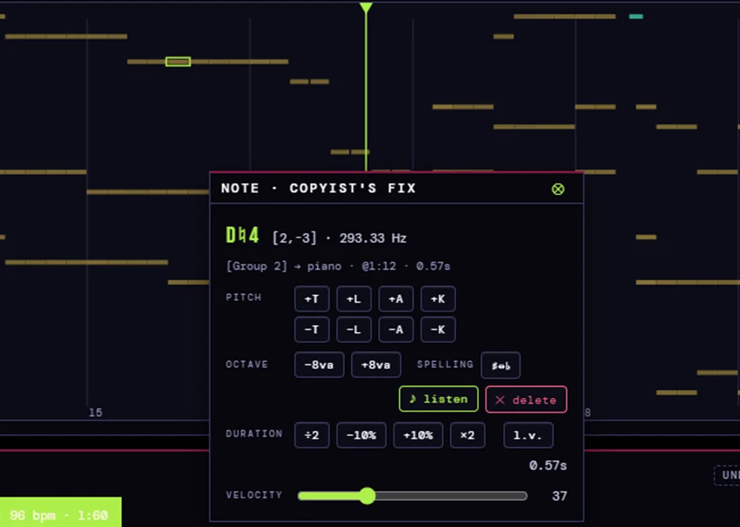
Sich in der Rolle bewegen
Strg + Mausrad zoomt um den Cursor herum hinein oder heraus. Einmal gezoomt: Mausrad = auf und ab durch die Tonhöhen · Shift + Mausrad = in der Zeit vor und zurück · Ziehen des Hintergrunds = die Ansicht verschieben. Mit dem ganzen Stück im Blick hat das Mausrad keinen Spielraum: Zoome zuerst. Doppelklick auf eine leere Stelle kehrt zum ganzen Stück zurück; WORK und MOVEMENT, oben, wählen, was angezeigt wird. Ein Klick auf eine leere Stelle setzt den Cursor dorthin; zieh das ▼ des Cursors, um durch das Stück zu fahren.
Die A–B-Schleife · Rechtsklick
Rechtsklick auf die Rolle: Set A here und Set B here. Der Abschnitt wird schattiert, und der Transport spielt ihn in einer Schleife. Zieh die Fähnchen A und B, um sie anzupassen; clear A–B pins entfernt sie. Um genau auf einem Taktstrich zu markieren, zoome zuerst mit Strg + Mausrad hinein.
⭳ export · stimmenweise speichern
Der Button ⭳ export in der Kopfzeile der Rolle öffnet drei Wege. Export by instrument…: Hake die gewünschten Spuren an (zum Beispiel nur eine Hand) und den Bereich: Work, Visible range oder A–B section (wird angezeigt, wenn A- und B-Pins existieren). Export selection: die mit Shift + Ziehen gewählten Noten. Export A–B section: jede Spur zwischen A und B. split voices teilt einen polyphonen Kanal in hohe, mittlere und tiefe Stimmen auf. Jeder Weg lädt eine .mmf herunter.
Der Kopist · eine Note korrigieren
Ein Klick auf eine Note öffnet den Kopisten: ihren Namen, ihren Platz im Gitter [Quinten, Oktaven] und ihre Frequenz. Die Tonhöhen-Buttons liegen in zwei Reihen, + oben und − unten: T = Ganzton · L = Limma, der diatonische Halbton, der Buchstabe ändert sich (C → H) · A = Apotome, der chromatische Halbton, der Buchstabe bleibt (D → Dis) · K = Komma: der Komma-Nachbar (As +K = Gis). Es sind zwei verschiedene Noten; die Grenze ist ein doppeltes Vorzeichen. ♯↔♭ wechselt je nach Vorzeichen zum Komma-Nachbarn. Außerdem: ±8va, ♪ listen, delete, die Dauer (÷2, ±10 %, ×2, l.v.) und die Velocity. Shift + Ziehen nimmt eine ganze Passage und wendet dasselbe darauf an. Was du anfasst, wird als edited markiert und reist in der MMF mit.